Warranty and Copyright
Warranty. All Berkeley Nucleonics (BNC) instruments are warranted against defects in material and workmanship for a period of two years from the date of shipment. Berkeley Nucleonics will, at its option, repair or replace products that prove to be defective during the warranty period, provided they are returned to Berkeley Nucleonics and provided the preventative maintenance procedures are followed. Repairs necessitated by misuse of the product are not covered by this warranty. No other warranties are expressed or implied, including but not limited to implied warranties of merchantability and fitness for a particular purpose. Berkeley Nucleonics is not liable for consequential damages. The warranty on the internal rechargeable batteries (option B3) is one year from the date of shipment. Battery replacement is available through Berkeley Nucleonics and its distributors.
Copyright. This manual is copyright by Berkeley Nucleonics and all rights are reserved. No portion of this document may be reproduced, copied, transmitted, transcribed, stored in a retrieval system, or translated in any form or by any means such as electronic, mechanical, magnetic, optical, chemical, manual or otherwise, without written permission of Berkeley Nucleonics.
1. General Remarks
The devices described in this manual are signal generators that produce electromagnetic signals from 9 kHz up to 40 GHz with a power from -90 dBm up to +25 dBm. The exact range depends on the chosen device model and options. The devices can produce different types of modulations, such as AM, FM, PM, Pulse or Chirp.
They can be used in a variety of applications such as research and development or manufacturing and testing of electronic components.
Options, such as a 1U Case, an internal rechargeable battery, a GPIB interface or different types of power range extensions can be added.
1.1 Validity of this Manual
This manual is valid for the following devices and their extended versions:
- 835-4/6
- 845-12/20/26
- 845-OEM-12/20/26
- 865B-6/12/20/26/40
- 871
- 825-M, 845-M, 865B-M
- 845-M-X, 865B-M-X
- 855B-6-X, 12-X, 20-X, 33-X, 40-X
- 805-M
2. Available Casing
The Model 845-OEM ships as a board-level module for integration into customer systems, shown below. The other 800-series enclosures (Compact Portable Case, 1U and desktop chassis) are documented here as well because the 845-OEM shares the same electronics and connector set; they apply to the boxed family members.
2.1 OEM Module (Model 845-OEM)
2.2 Compact Portable Case (CPC)
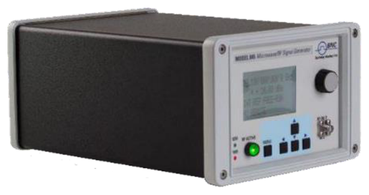
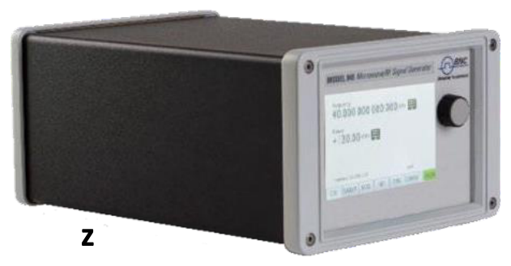
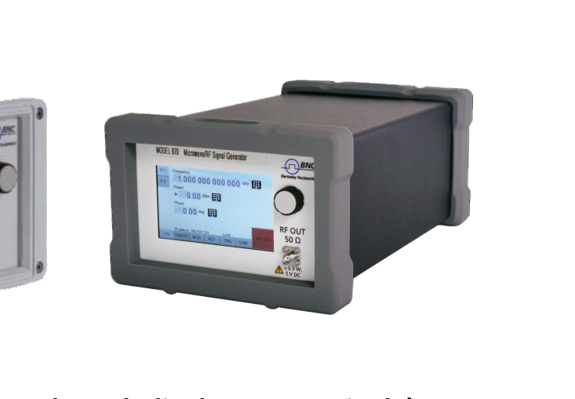
Figure 1: 845-26, 865B-40, and 870A in a Compact Portable Case (with LCD and touch display, respectively).
2.3 1U Case
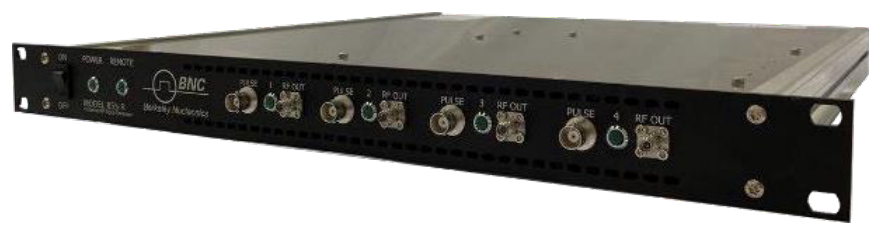
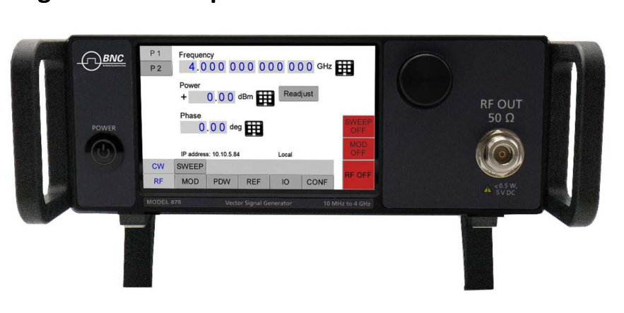
2.4 Desktop Chassis
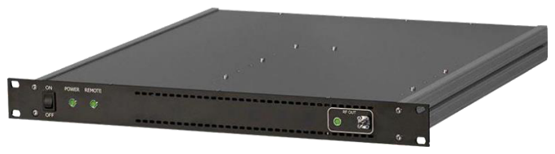
3. Connections and Transportation
3.1 Data Connections
The devices may only be connected to a network or a computer by using a shielded LAN cable. Unless shorter lengths are prescribed, a maximum length of 3 m must not be exceeded for the LAN and the USB connection.
3.2 Signal Connections
In general, all connections between the signal generator and another device should be made as short as possible and must be well shielded. It is recommended to use a high-quality cable with low loss especially for frequencies above 20 GHz.
3.3 Transportation
The devices must only be transported with the packaging supplied by the manufacturer. The device can be lifted up or transported in any orientation.
4. Safety Information
The following pieces of information are important to prevent personal injury, loss of life or damage to the equipment. Please read them carefully. If the device is used in a manner not specified by this manual, the protection provided by the device may be impaired.
4.1 Signal Symbol
In this manual, the following symbols are used to warn the reader about risks and dangers.
4.2 Labels on Products
The following labels are on the products. Familiarize yourself with the meaning of each of the labels before using the product.
| Symbol | Meaning |
|---|---|
| Direct Current (DC) | |
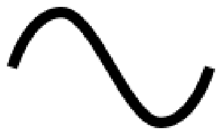 | Alternating Current (AC) |
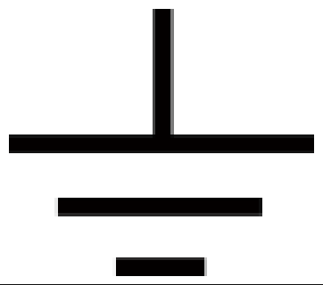 | Earth (Ground) |
| EU label for separate collection of electrical and electronic waste. | |
| Caution, general danger zone. Attend the manual and/or a notice on the device. |
4.3 General Safety Considerations
FCC notice
This equipment has been tested and found to comply with the limits for a Class A device, pursuant to Part 15 of the FCC Rules. These limits are designed to provide reasonable protection against harmful interference when the equipment is operated in a commercial environment. This equipment generates, uses, and can radiate radio frequency energy and, if not installed and used in accordance with the instruction manual, may cause harmful interference to radio communications.
Operation of this equipment in a residential area may cause harmful interference in which case the user will be required to correct the interference at his or her expense.
5. Technical Specifications
Model-specific frequency, output power and phase-noise figures are given on the Model 845-OEM datasheet and take precedence over any family-generic values shown here. The connector, environmental and power figures further down this section apply to the shared 800-series enclosures; the Model 845-OEM key specifications, taken verbatim from the datasheet, are summarized first below.
5.0 Model 845-OEM Key Specifications
The following values are reproduced verbatim from the Model 845-OEM datasheet (V2.59, dc-81405202) and are authoritative for the 845-OEM.
| Parameter | Specification | Note |
|---|---|---|
| Frequency range | 100 kHz to 12.0 GHz | 845-OEM-12 |
| Frequency range | 100 kHz to 20.0 GHz | 845-OEM-20, settable to 20.5 GHz |
| Frequency range | 100 kHz to 26.0 GHz | 845-OEM-26, settable to 30 GHz |
| Low-frequency extension | 9 kHz | Option 9K (845-OEM-12 and -20 only) |
| Frequency resolution | 0.001 Hz | |
| Output power (standard) | -20 to +15 dBm | 100 kHz to 26 GHz |
| Output power (option HP) | up to +21 dBm | Higher output power; up to +27 dBm per datasheet ordering note (verify) |
| SSB phase noise (1 GHz, 20 kHz offset) | -130 dBc/Hz | Typical |
| Internal reference | 100 MHz OCXO | ±40 ppb initial accuracy, ±100 ppb over 0 to 50 °C |
| Remote programming interfaces | Ethernet 100BaseT LAN; USB 2.0 host & device; GPIB (IEEE-488.2, 1987, optional) | SCPI version 1999.0 |
| Power requirements | 6.25 ±0.2 VDC; 20 W max | Main adapter 100–240 VAC in / 6 V, 6.0 A DC out |
| Weight | ≤ 6 lb (2.5 kg) net | ≤ 8 lb (4 kg) shipping |
| Dimensions (H x W x L) | 106 x 172 x 270 mm | 4.21 x 6.77 x 10.63 in, incl. connectors |
| Operating temperature | 0 to 45 °C | Storage -40 to 70 °C |
| Recommended calibration cycle | 24 months |
5.1 Dimensions
5.1.1 CPC
Dimensions of the compact portable case:
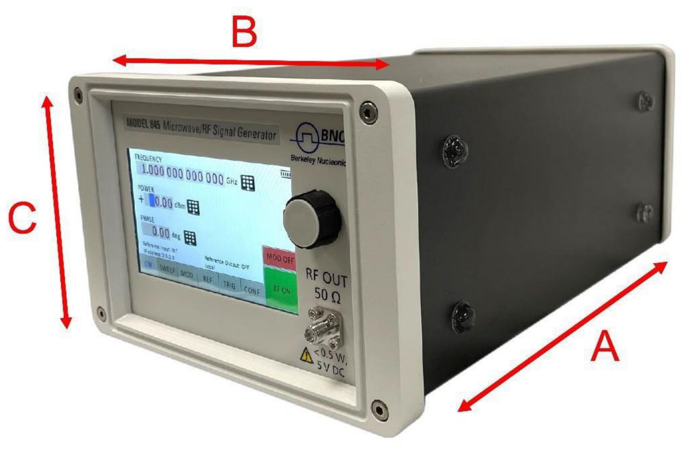
| Axis | Dimension | Note |
|---|---|---|
| A | 262 mm (835/845) 252 mm (865B) | Depth |
| B | 174 mm | Width |
| C | 116 mm | Height |
| Weight | < 2.5 kg |
5.1.2 1U
Dimensions of the 1U:
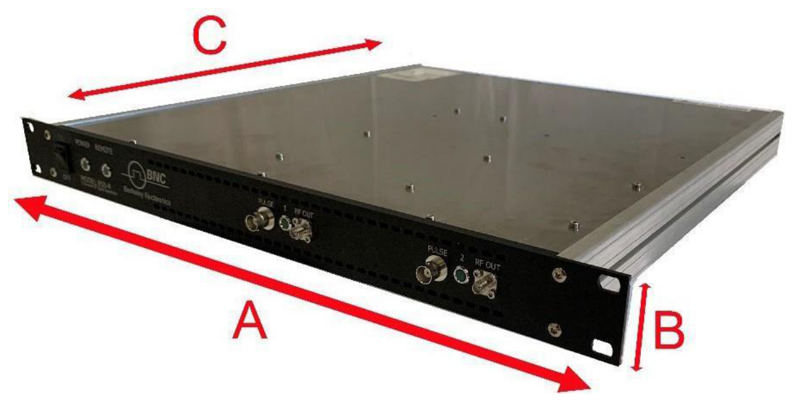
| Axis | Dimension | Note |
|---|---|---|
| A | 483 mm | Width |
| B | 44 mm | Height |
| C | 480 mm | Depth |
| Weight | < 7.0 kg |
5.2 Connectors
5.2.1 CPC
The front panel contains a status display (only in CPC), RF output female N-type connector (835), a female SMA connector (845, 865B-6,12,20,26,40, 855B, 845-M, 865B-M), or a K connector (865B-40) and an RF on/off key.
Front panel (Model 845-26)
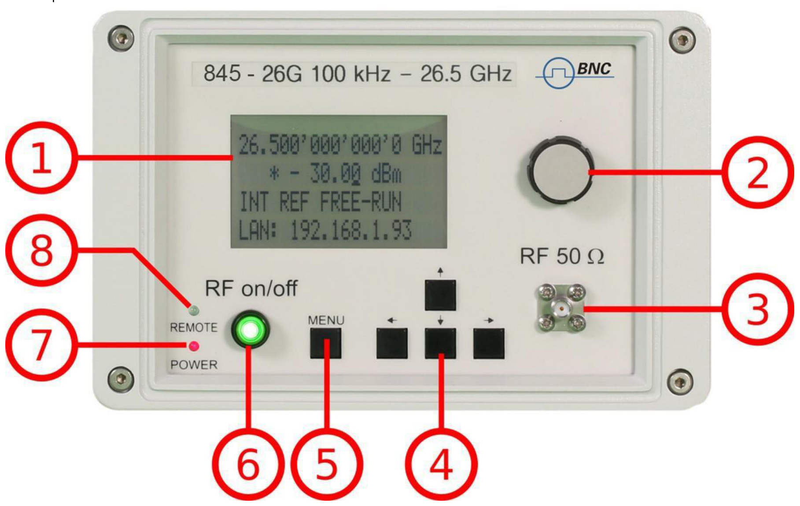
- Main LCD display. The main display shows the following information:
- 1st line: RF frequency in Hz
- 2nd line: RF amplitude in dBm
- 3rd line: Frequency reference status (internal, external, lock status)
- 4th line: Remote control status
- Rotary Button. The rotary button is used to change the value selected on the screen.
- RF 50 Ω connector. This female N-type connector respectively SMA connector provides the output for generator signals. The impedance is 50 ohm. The reverse power damage level is +30 dBm maximum. The maximum allowed DC level is +/- 30 dBm maximum.
- Menu Buttons. The menu buttons are used to change the selected menu point or value.
- Main Menu Button. The main menu button is used to enter the menu.
- RF On/Off button. The ON/OFF key toggles between RF output on and RF output off. The green light is indicating whether the RF output is enabled or not.
- Remote LED. The remote LED is indicating whether the device connected to a Computer or not.
- Power LED. The power LED is indicating whether the device is connected to a Computer or not.
Rear panel (Model 845-26)
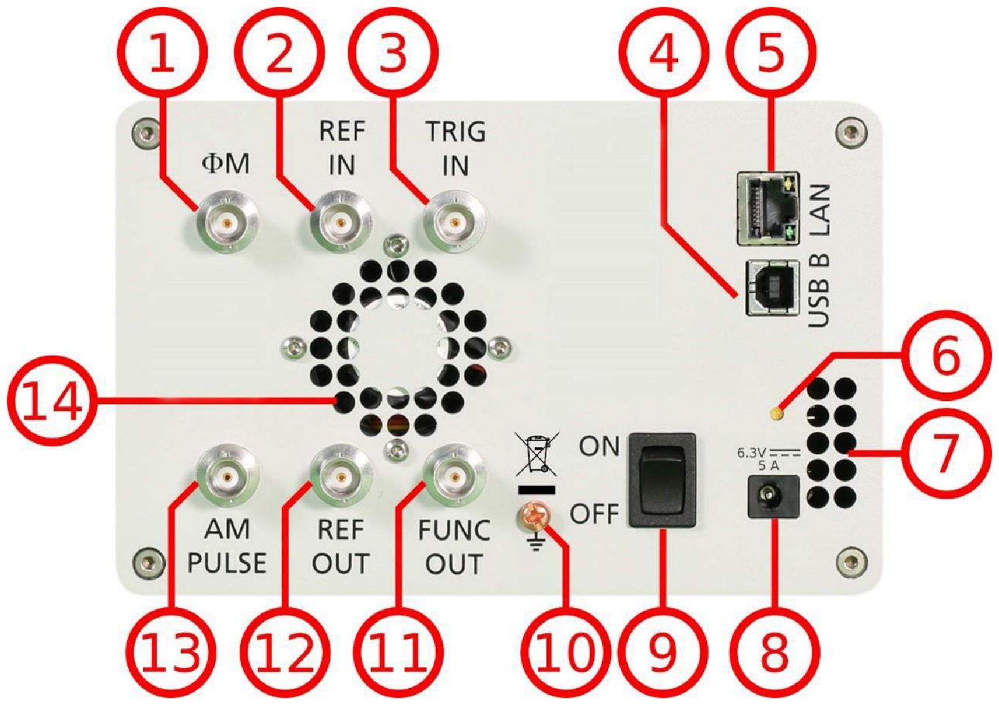
- ΦM. This BNC female connector is the input for FM and PM.
- REF IN. This BNC female connector is the input for the reference signal.
- TRIG IN. This BNC female connector is the trigger input.
- USB B. The USB B connector is used to connect the device to a computer.
- LAN. The LAN connector is used to connect the device to a network.
- Battery LED. In case the device has a rechargeable battery, this LED indicates whether the battery is charged or not.
- Fan Holes. The holes by which the air is intaken.
- Power Supply. Apply the BNC power adaptor to this connector to supply the device with energy.
- On/Off Switch. Turns the device on or off.
- Ground Screw.
- FUNC OUT. This BNC female connector is the output for the function signal.
- REF OUT. This BNC female connector is the output for the reference signal.
- AM PULSE. This BNC female connector is the input for the AM and the PULSE Modulation signal.
- Fan Holes. The holes by which the air is extruded.
5.2.2 1U: 845
Front panel
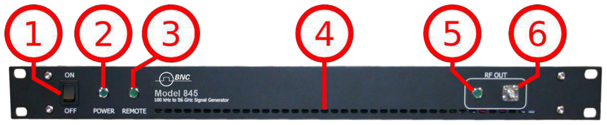
- ON/OFF Switch. Turns the device on or off.
- Power LED. The power LED is indicating whether the device is on or off.
- Remote LED. The remote LED is indicating whether the device connected to a Computer or not.
- Fan Holes. The holes by which the air is intaken.
- RF 50 Ω connector. This female SMA connector respectively the female N-type connector provides the output for generator signals. The impedance is 50 ohm. The reverse power damage level is +30 dBm maximum. The maximum allowed DC level is +/- 10 V. Please check the data sheets for more details.
Rear panel
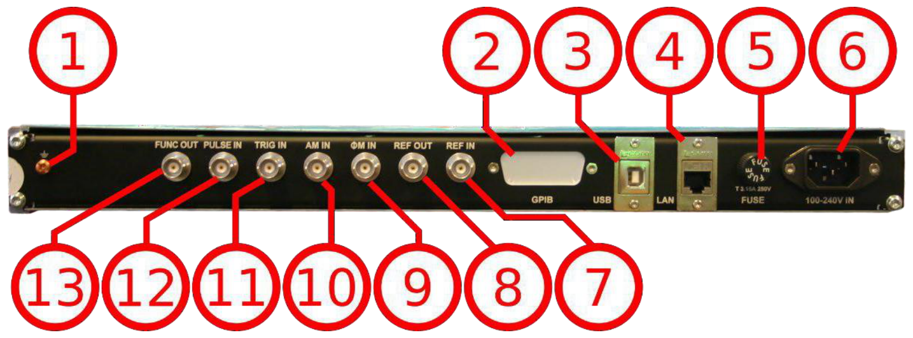
- Ground Screw.
- GPIB Connector. In case the device has the option "GPIB", on this position the GPIB connector is.
- USB B. The USB B connector is used to connect the device to a computer.
- LAN. The LAN connector is used to connect the device to a network.
- Fuse Holder. This holder contains an exchangeable fuse.
- Power Supply. Apply the BNC power adaptor to this position, the AC connector, to supply the device with energy.
- REF IN. This BNC female connector is the input for the reference signal.
- REF OUT. This BNC female connector is the output for the reference signal.
- TRIG IN. This BNC female connector is the trigger input.
- ΦM. This BNC female connector is the input for FM and PM.
- PULSE. This BNC female connector is the input for the pulse signal.
- FUNC OUT. This BNC female connector is the output for the function signal.
- AM PULSE. This BNC female connector is the input for the AM and the PULSE Modulation signal.
5.2.3 1U: 855B / 865B-M-40-X
Front panel
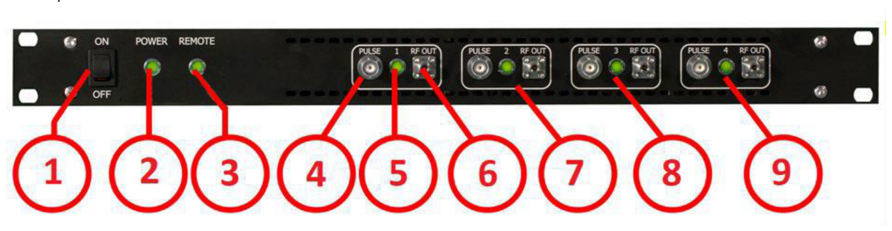
- ON/OFF Switch. Turns the device on or off.
- Power LED. The power LED is indicating whether the device is on or off.
- Remote LED. The remote LED is indicating whether the device connected to a Computer or not.
- Channel 1: PULSE. This BNC female connector is the input for the PULSE Modulation signal.
- Channel 1: RF OUT. This female SMA connector provides the output for the PULSE Modulation signal.
- Channel 2
- Channel 3
- Channel 4
- RF 50 Ω connector. This female K-type connector provides the output for the RF signals. The impedance is 50 ohm. The reverse power damage level is +30 dBm maximum. The maximum allowed DC level is +/- 10 V. Please check the data sheets for more details.
Rear panel
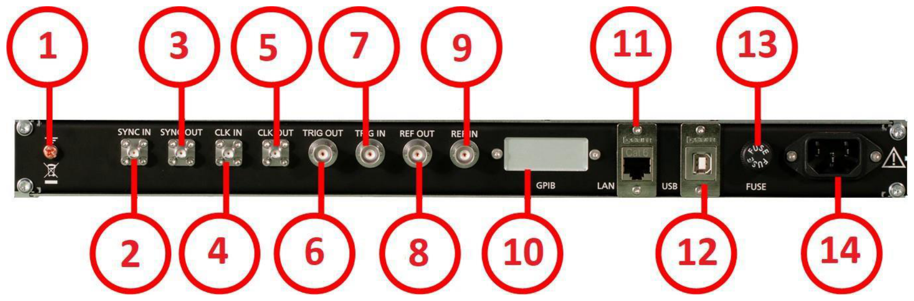
- Ground Screw.
- Sync In port. Unit-to-unit synchronization signal input. SMA female.
- Sync Out port. Unit-to-unit synchronization signal output. SMA female.
- CLK IN. External 3GHz reference input. SMA female.
- CLK OUT. Internal 3GHz reference output. SMA female.
- TRIG OUT. This BNC female connector is the trigger output.
- TRIG IN. This BNC female connector is the trigger input.
- REF OUT. This BNC female connector is the output for the reference signal.
- REF IN. This BNC female connector is the input for the reference signal.
- GPIB Connector. In case the device has the option "GPIB", on this position the GPIB connector is.
- LAN. The LAN connector is used to connect the device to a network.
- USB B. The USB B connector is used to connect the device to a computer.
- Fuse Holder. This holder contains an exchangeable fuse.
- Power Supply. Apply the BNC power adaptor to this connector to supply the device with energy.
5.2.4 CPC with Touch display
The front panel contains a touch display. RF output female SMA connector (845, 865B-6/12/20/26, 855B, 845-M, 865B-M) or a K connector (865B-40) and any kind of error and other messages. Information includes status indicators, frequency and amplitude settings, current connectivity status, and error messages.
Front panel
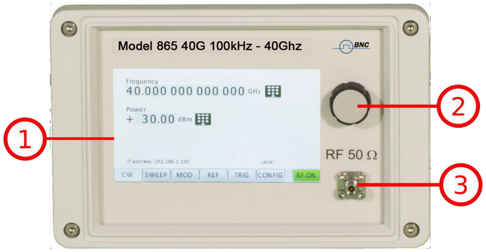
- Main touch display. The main display shows information on the current function, such as frequency, power, reference.
- Rotary Button. The rotary button is used to change the value selected on the screen.
- RF 50 Ω connector. This female SMA respectively K connector provides the output for generator signals. The impedance is 50 ohm. The reverse power damage level is +30 dBm maximum. The maximum allowed DC level is +/- 10 V. Please check the data sheets for more details.
Rear panel
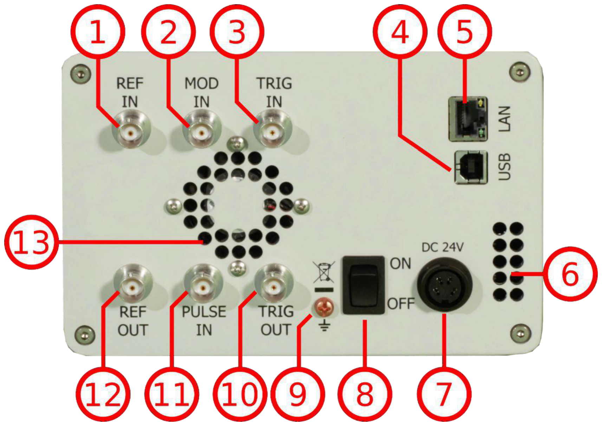
- REF IN. This BNC female connector is the input for the reference signal.
- MOD IN. This BNC female connector is the input for the modulation signal.
- TRIG IN. This BNC female connector is the trigger input.
- USB B. The USB B connector is used to connect the device to a computer.
- LAN. The LAN connector is used to connect the device to a network.
- Fan Holes. The holes by which the air is intake.
- Power Supply. Apply the BNC power adaptor to this connector to supply the device with energy.
- ON/Off Switch. Turns the device on or off.
- Ground Screw.
- TRIG OUT. This BNC female connector is a multi-function output.
5.3 Minimum Distances
The minimum distances are:
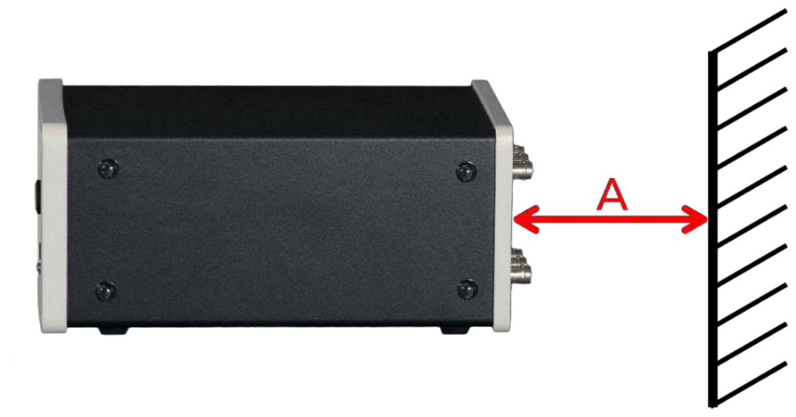
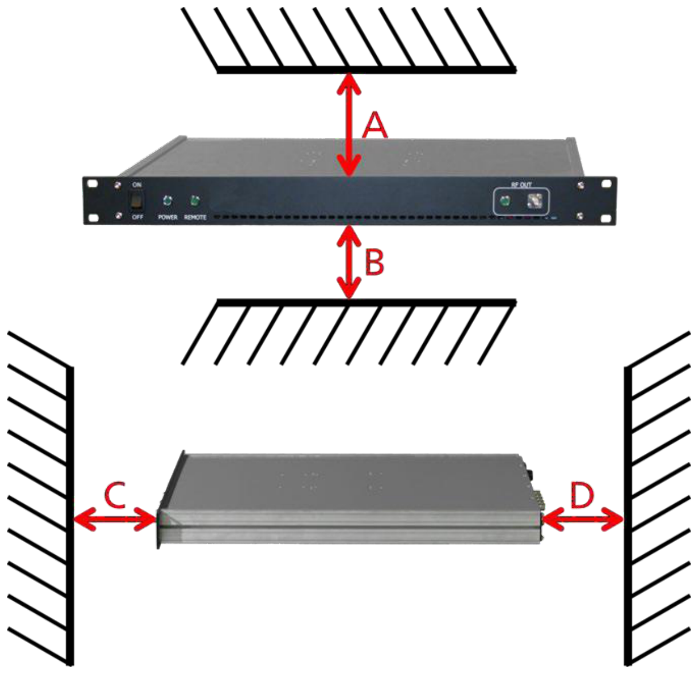
5.4 Energizing and de-Energizing
To energize the device, apply the following voltage to the following connector.
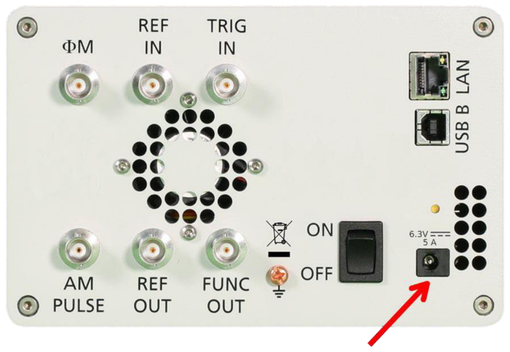
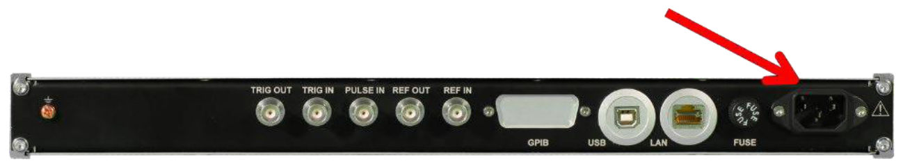
The 1U case has a fuse, accessible from the outside. To change the fuse, pull out the mains plug, push the fuse holder into the back panel and turn it around 45 degrees, then take the holder out. Replace the old fuse with a new one. It is forbidden to repair defect fuses or to bridge them by any means. Use only a fuse with the following specifications.
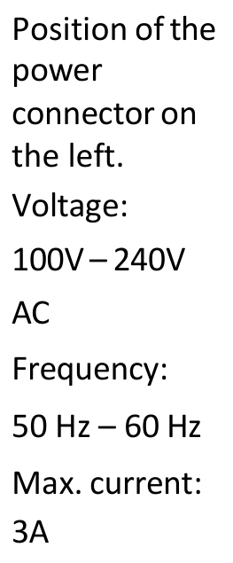
Type of fuse:
- Size. 5 x 20 mm
- Voltage. 250 V
- Current rating. 3.15 A
- Characteristic. Time-Lag T
- Breaking capacity. 35 A to 200 A
5.5 Proper operation conditions
The devices are designed for use in dry and clean environments. The CPC can also be used in field as long as the operating conditions are met. Operation in an environment with high dust content, high humidity, danger of explosion or chemical vapors is prohibited.
- Operating temperature range. 0°C to +45°C.
- Storage and transportation temperature range. -40°C to +70°C.
- Operating and storage altitude. 4600 m. In case of condensation 2 hours are to be allowed for drying prior operation. Operation is only allowed from a 3-terminal mains connector with a safety ground connection and a mains plug used in your specific country. For sufficient ventilation, ensure open ventilation holes.
5.6 Environmental Information
- Waste electrical and electronic equipment must not be disposed of with unsorted municipal waste, but must be collected separately. Contact the BNC customer service center for environmentally responsible disposal of the product.
- Specially marked equipment has a battery or accumulator that must not be disposed of with unsorted municipal waste, but must be collected separately. It may only be disposed of at a suitable collection point or via BNC service center.
6. Introduction
This instruction manual is valid for BNC model series 835, 845, 845-OEM, 865B, 855B 845-M, and 865B-M. Chapter 4 gives guidance for a quick and easy setup of your new instrument. Chapter 5 describes the remote operation via BNC graphical user interface (GUI). Chapter 6 describes control via front panel and applies only to 835/845 boxed models. The Model 845-OEM is headless and has no front panel; operate it through the GUI (Chapter 8) or SCPI (Chapter 11).
6.1 Included Material
Your signal generator kit contains the following items:
- Signal Generator
- Universal power adaptor (AC 100 to 240V) with corresponding country specific plugs
- Ethernet Cable
- Manuals and software CD
6.2 General Features and Functions (Model overview)
BNC RF and Microwave Signal Generator model overview.
| Models | Range | Power range | Options | Display |
|---|---|---|---|---|
| 835 | 9 kHz to 2,4,6 GHz | -30 to +15 dBm | B3, PE3, GPIB, RM, 1U, REAR, AVIO | Y |
| 845 | 100 kHz to 12, 20, 26 GHz | -20 to +15 dBm | 9K, B3, PE3, GPIB, RM, 1U, FS, HP, TP, LH, REAR, NM | Y |
| 865B | 100 kHz to 12.75 / 20 / 26 / 40 GHz | -20 to +25 dBm | PE3, PE4, GPIB, RM, LH, 1U, FS, LN, MOD, EB, REAR | Y |
| 855B | 300 kHz to 6,12, 20, 26, 33, 40 GHz | -20 to +25 dBm | FS, GPIB, LN, MOD, PE4, PHS, VREF | N |
| 845-M | 0.01 GHz to 20.0 GHz | +23 dBm | FS, LN | N |
| 865B-M | 0.01 GHz to 40.0 GHz | -10 to +25 | FS, LN, VREF | N |
| 865B-M-40-X | 0.01 GHz to 40.0 GHz | -10 to +25 dBm | FS, LN, VREF | N |
| 805-M | 100 kHz to 22.0 GHz | -40 to +25 dBm | FS | N |
General features include:
- Extendable power range (option PE3, PE4)
- Modulation capabilities for AM, FM, PM and PULM modulation (model dependent)
- Fast frequency, power and list sweeps
- Light weight, optional internal rechargeable batteries (options B3, EBAT)
- 3-inch status LCD (835/845 models only)
- Long-term support. Software upgrades (firmware, API, GUI) are available to download from www.berkeleynucleonics.com. You can also call our technical specialists for support. You can continue to use both of these services free of charge for the lifetime of the product.
- Universal LAN VXI-11 and USB 2.0 device and host interface
- 18-24 months calibration cycle
6.3 Options
- B3. Internal rechargeable battery
- FS. Fast switching
- LN. Enhanced close in phase noise
- MOD. Analogue modulation
- PE3. Mechanical step attenuator for extended power range
| PE3 Model | Extended range |
|---|---|
| 835 | 90 dB |
| 845 | 75 dB |
- PE4. Electrical step attenuator for extended power range
| PE4 Model | Extended range |
|---|---|
| 865B, 855B | 80 dB |
- GPIB. GPIB interface added
- AVIO. Specific avionics modulation capabilities added (Model 835)
- 1U. 19'' 1HE enclosure. No display, remote control only
- RM. 19'' 3HU rack-mount kit
- REAR. Move output to the rear
- 9K. Frequency range extension to 9 kHz
- HP. High output power
- TP. Color touch-screen front panel
- LH. Desktop housing with color touch-screen front panel
- NM. Remove modulation function
- EB. External power bank
- PHS. Phase coherent switching
- VREF. Variable external reference
7. Getting Started
7.1 System Requirements
| Item | Requirement |
|---|---|
| Operating system | Windows 2000 SP4, XP SP2, Vista, 7, 8, 10 |
| Remote | 10/100/1000M Ethernet or USB 2.0 Port |
7.2 Unpacking the Instrument
Remove the instrument materials from the shipping containers. Save the containers for future use.
For a list of material included in the standard package, please refer to chapter 4.1.
7.3 Initial Inspection
Inspect the shipping container for damage. If container is damaged, retain it until contents of the shipment have been verified against the packing list and instruments have been inspected for mechanical and electrical operation.
7.4 Starting the Instrument
This section describes installation instructions and verification tests.
7.4.1 Applying Power
Press the line on/off switch on the rear panel. If available, the front panel display will illuminate. The instrument will initialize and momentarily display the model number, firmware revision and product serial number. The display will then switch to the factory default display setting, showing preset frequency (100 MHz) and power (0 dBm), phase lock status (of internal reference) and instrument connectivity status. (Ethernet IP or USB Identifier).
Note, the instrument booting process may take up to 60 seconds (depending on configuration) to complete.
7.4.2 Connecting to LAN
Connect the instrument to your local area network (LAN) using the Ethernet cable. By default, the instrument is configured to accept its dynamic IP number from the DHCP server of your network. If it is configured properly, your network router will assign a dynamic IP number to the connection to your network so that the instrument can be automatically detected and connected to the network. Your instrument is now ready to receive remote commands.
7.4.3 Direct connectivity to host via Ethernet cable (no router)
You can connect to the instrument to your computer with the Ethernet cable without using a local area network with DHCP server. To work properly, the network controller (NIC) of your computer must be set to a static IP address in the ZEROCONF standard, beginning with 169.254.xxx.xxx (excluding 169.254.255.255) and ending with 169.254.255.254. Use the network mask 255.255.0.0. Some operating systems will not start a NIC unless connected to a network with a DHCP server, even if a fixed IP address is assigned. In that case, connect via the local area network instead.
7.4.4 Connecting through USB
Connect the instrument to the computer using a quality USB type-A to type-B cable. If properly connected, the operating system should automatically install a USBTMC device.
Note that if you want to use the USB BNC, it must be installed (or comparable) must be installed.
Use VISA Write to send the *IDN? Query and use VISA Read to get the response. The USBTMC protocol supports service request, triggers and other USB-specific operations.
7.4.5 Connecting through GPIB
Connect the instrument to the GPIB controller using the rear panel GPIB connector (option GPIB is required). Once connected properly, use VISA Write to send the *IDN? Query and use VISA Read to get the response. The protocol supports service request, triggers and other GPIB-specific operations.
7.4.6 Installing the 835/845 Remote Client
BNC's graphical user interface provides an intuitive control of the instruments. It runs under Windows operating system with minimum requirements. The DLL is embedded in the GUI application and requires the Microsoft .NET framework. The setup program guides you in a few steps through the installation process. In case the NET framework is not installed on your computer, then you need to install it manually. After installation the program will start.
7.4.7 Troubleshooting the LAN Interconnection
Software does not install properly
- Make sure your installation CD is not damaged.
- When Microsoft .NET Framework is not installed make sure that your computer is connected to the internet during installation of the BNC Software. If no internet connection is available, install the .NET Framework that is available on the installation CD.
Software cannot detect any instrument
- Make sure you have connected both computer and instrument to a common network.
- If a direct connection is used you may require to reset your computer Ethernet controller (depending on the configuration). Note that in that case detection of the instrument can take a considerable amount of time if your computer is configured to work with an external DHCP server. In some cases the detection may even fail completely. Configure your computer network controller to an appropriate fixed IP instead.
- Make sure that your software firewall enables the GUI to setup a TCP/IP connection via the LAN. Under Windows 7/10 you can do that like this: Open Control Panel under Settings in your Start menu. Then go to Windows Firewall. Click on Exceptions and then add Program. If the GUI is in this list, choose it and click OK otherwise you have to browse for the path to GUI installation directory. Finally close all open dialogs with OK. Now your Windows Firewall will not block requests from the GUI.
7.4.8 Shutting Down the Signal Generator
Press the line on/off switch on the rear panel to off.
8. Using the Graphical User Interface (GUI)
BNC's graphical user interface provides an intuitive control of the signal generator. It runs under any Windows operating system. Make sure the software is installed correctly and the computer's firewall is configured properly. The GUI's dynamic link library (DLL) uses the Microsoft .NET framework.
8.1 Start the Signal Generator (SG) GUI
After successful installation of the software double-click the software shortcut that has been created on your desktop.
After start, the GUI will automatically detect existing BNC instruments that are connected to the computer (network) via local area network, USB, or GPIB. In the CONTROL tab (see Figure 6-a) the detected instruments are listed. Clicking on one of the devices will instantly establish connection. Clicking on an alternate device will disconnect the old device and reconnect to the new device. Scan Instruments button will enable automated scanning for new instruments. Disconnect/Connect button will establish and terminate connection.
8.2 General Look
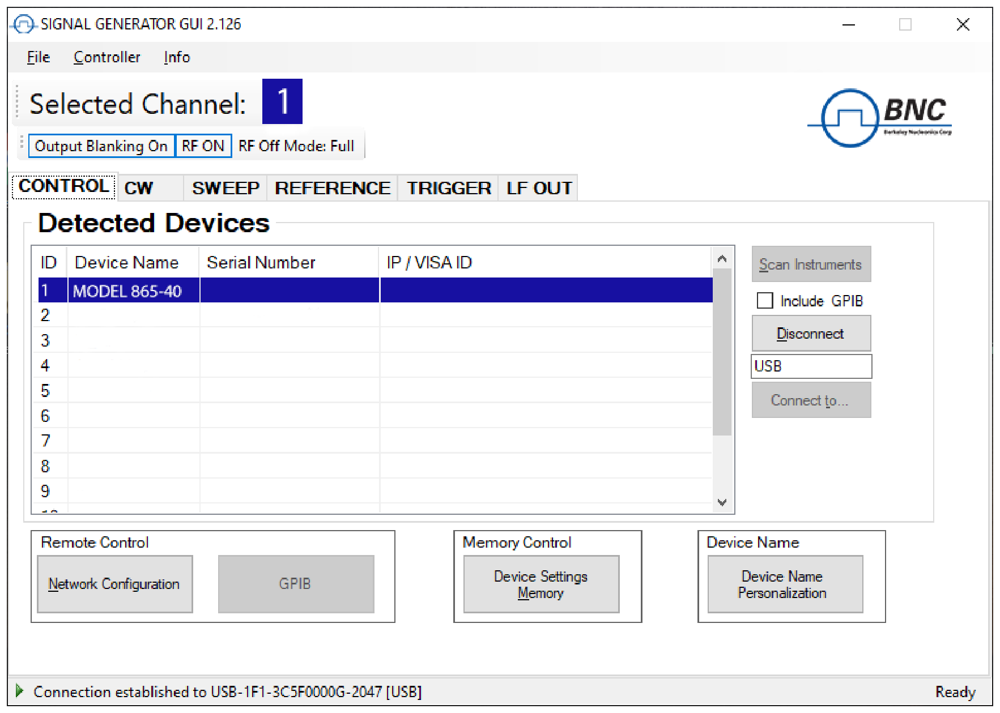
- The CONTROL tab (Figure 6-a) completes the following function:
- Scan and establish connection to instrument
- Configure remote interface (LAN, USB, GPIB)
- Save, load and manage instrument memory states
- CW tab
- SWEEP tab
- MODULATION Tab
- REFERENCE Tab
- TRIGGER Tab
- LF OUT Tab
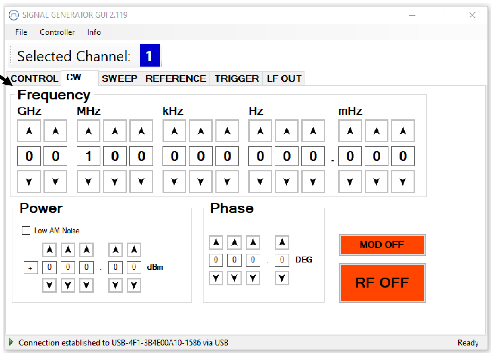
8.3 Simultaneously controlling Multiple Signal Generators from one PC
You can easily control multiple BNC instruments from a single computer but you need to start a separate GUI for every instrument as only one instrument is controlled by the GUI at once.
8.4 Store and Load Instrument States
Multiple memory states are available to store instrument settings. By clicking on the Device Settings Memory button the currently saved memory settings are displayed and can be retrieved or shown on a separate dialog 6. To modify or enter a state, click on the appropriate line and select if the current instrument settings should be stored or loaded into the selected memory state.
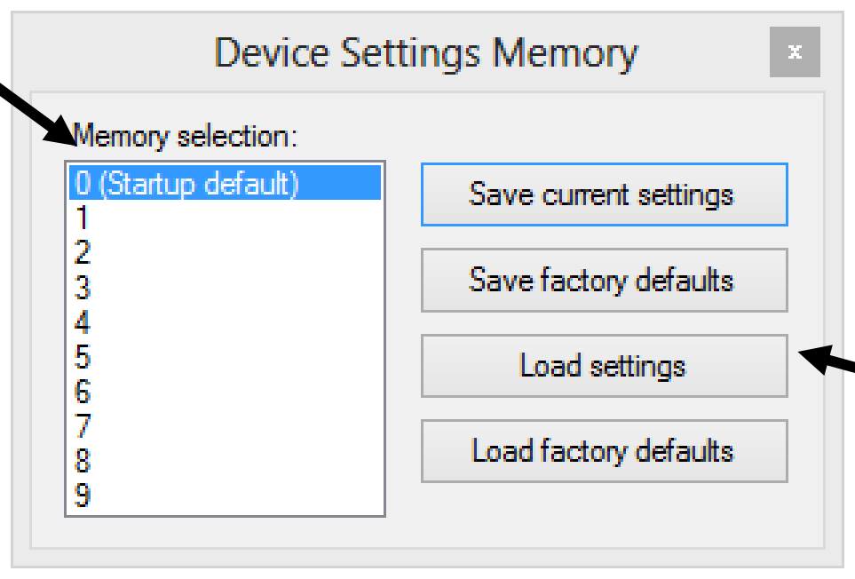
The memory states can also be accessed via the front panel menu.
8.5 Setting Network Configuration
The Network Configuration button allows configuring the LAN settings as shown in Figure 6-c. You may choose from three different network addressing modes: setting to Auto will check for a DHCP server on the network but if this fails, will fall back to assigning an address automatically using zeroconf. Setting to DHCP will check for a DHCP server on the network (without a fallback) and Manual will require to supply all network settings for the device manually below. Additionally, the device name and revision are displayed at the bottom of the dialog box.
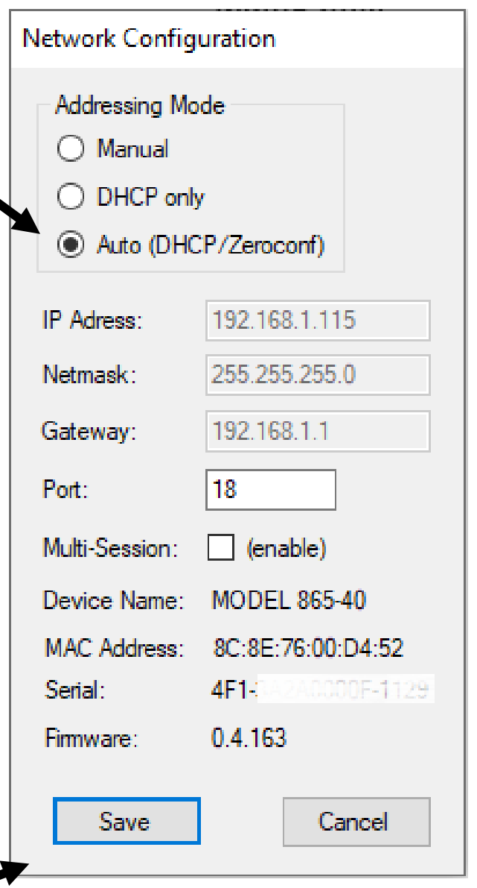
8.6 Multi-Session Option
The "Multi-Session" checkbox can be selected to enable the device to be accessed from more than one instance of the UI. This enables users on multiple computers on the network to connect to and configure the device simultaneously. It is the user's responsibility to manage access conflicts whilst this mode is enabled (i.e. 2 users changing the same option from different PCs).
8.7 Device Port Setting
The "Port" option allows the listening TCP port to be customized for the device. The default setting for all devices is port 18. If changed, the device will no longer be accessible using this port number. Any instances of the UI (or other VISA applications connecting to the device over a network) will need to modify their destination port number to match the device to connect to.
8.8 Connecting to devices using a non-default port
There are 2 options for connecting to a device when its default listening port has been changed.
- Specify a temporary connection port. Click the menu Info → Connection Settings → Specify Connection Port. This will cause a new setting "Custom Port" to be displayed on the "Control" tab of the UI (see Figures 6-d and 6-e). The connection port to use can then be entered (within the range of permissible TCP port numbers). Beware that this setting will overwrite the default port until it is removed. To remove, click the menu Connection Port setting from the UI and reset the value using the current default port. Deleting the port number from the "Custom Port" text box will also cause the UI to revert to using the default port.
- Change the application's default port setting. The global default port to use for connections can be changed by selecting menu Info → Connection Settings → Change Default Port (see figure 6-d). A default port can be entered into the dialog box which appears and set by clicking button "Set Default" only permissible TCP ports can be entered here. If the new default port is entered, then the new default port setting. Deleting the port number from the default setting will use the current default port as before, including after restarting the UI or rebooting your system.
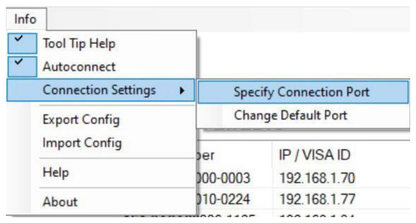
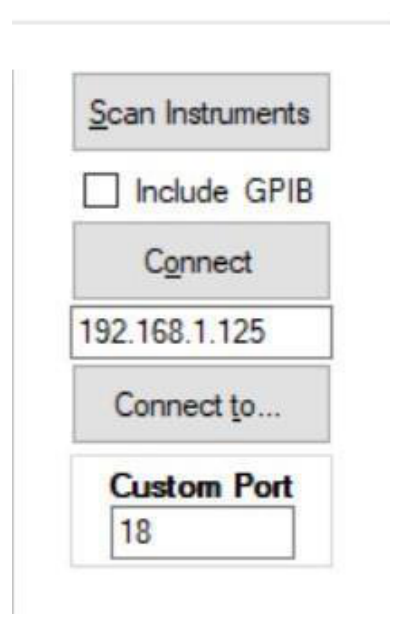
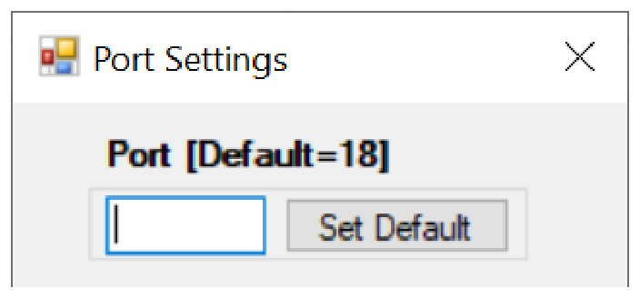
8.9 Setting the GPIB Address
If the instrument has the GPIB option installed, the GPIB address can be changed in the GPIB submenu in the control tab. Valid GPIB addresses range from 1 to 30. To verify GPIB functionality, use the VISA Assistant available with the Agilent IO Library or the Getting Started Wizard available with the National Instrument IO Library. These utility programs enable you to communicate with the signal generator and verify operation. For information and instructions on running these programs refer to the Help menu available in each utility.
8.10 Perform Firmware Upgrade
A firmware upgrade of the instrument can be done directly via the GUI. First make sure you are connected to the right instrument and have the correct firmware files (.tar) ready. Then apply Controller → Update Firmware and select the appropriate binary file that you have received from BNC or downloaded from the BNC website. The update will take a few seconds and after completion your instrument will reboot. Reconnect to the instruments after booting is completed and continue with the updated firmware.
8.11 Multi-Output GUI Control
Individual outputs of the BNC multi-channel signal sources (such as 855B or 865B-M-40-X) can be controlled by the GUI by selecting the corresponding channel above the control tab menu. Each channel can be configured fully independently as if they were individual signal generators. Note that the "Select Channel" appears only when connected to a multi-channel device.
9. Local Operation via Front Panel
Most of the signal generator models offer direct front panel control. A rotary knob and five keys (MENU), and four arrow keys allow full control over the instrument. Figure 7-a shows the front panel of the 835/845, Figure 7-b shows the front panel of the 865B (resp. 835/845 with option TP).
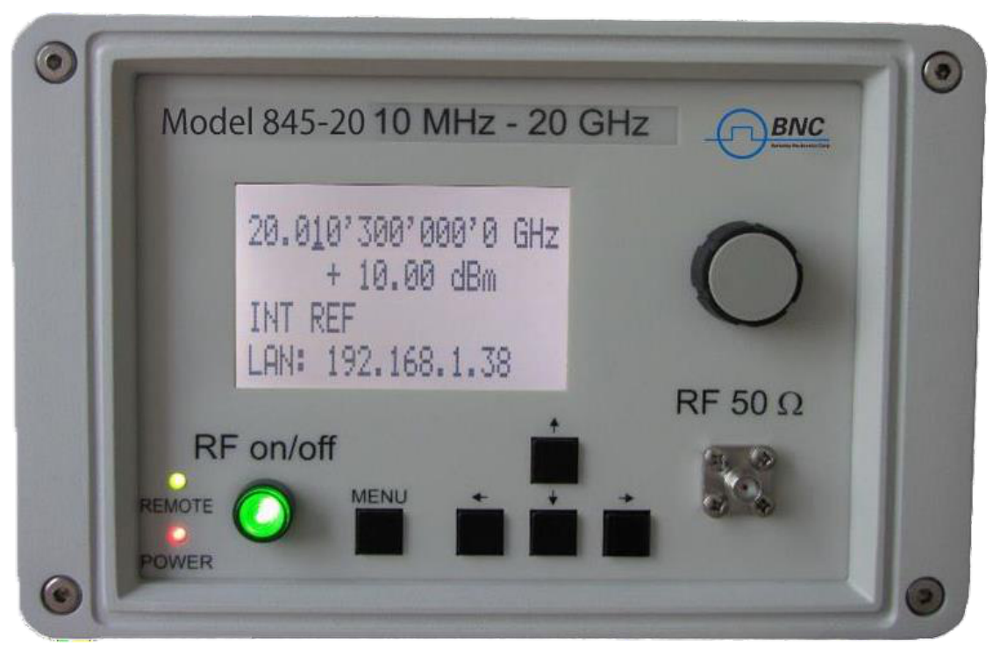
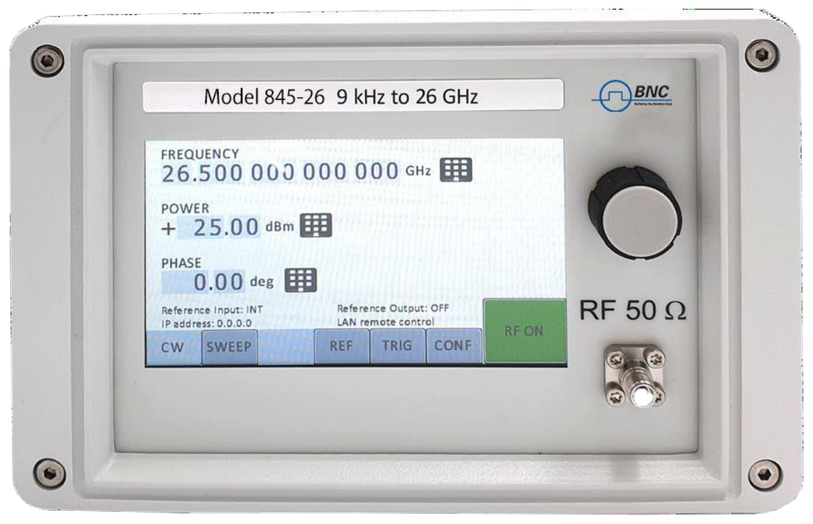
For both Front panels:
- RF 50 Ω connector. This female N-type connector provides the output for RF signals. The impedance is 50 ohm. The damage level is +30 dBm. The maximum allowed power level is +/- 10 V.
Only for 835/845 front panels:
- RF On/Off button. The ON/OFF key toggles between RF output on and RF output off. The green light is indicating whether the RF output is on or off.
- Menu Key. This is a multifunction key. The key is used to enter and exit menus. Press once to return to the CW menu, multiple times to toggle between the selected submenu and the CW menu.
You can always be exit by pressing the menu key.
The four arrow keys are used to move cursor within the screen menus. Within menus, the up/down keys are used to enter (1) and exit (2) menu items or, when editing, increment or decrement a value. The left/right keys are used in next parameter hierarchy (3) in next menu hierarchy (4). The arrow keys are used to navigate between menu pages where pages exist and to navigate through the lists.
The LAN LED illuminates when a remote connection is made.
Power LED illuminates when system is powered up.
The currently active display position is shown by the cursor (underline symbol, or different background colour). The cursor does not move beyond the field of the currently selected parameter. Rotate the front panel knob to modify the value. Clockwise rotation increases the value while counter-clockwise rotation decreases the parameter. The maximum or minimum limit of the parameter.
9.1 Displayed Parameter Formats
The following sections describe how to control the instrument via the front panel control by invoking various menu functions.
9.2 CW Display
The Main or CW Display is shown after the instrument has successfully booted and is ready. The four line display has the following format:
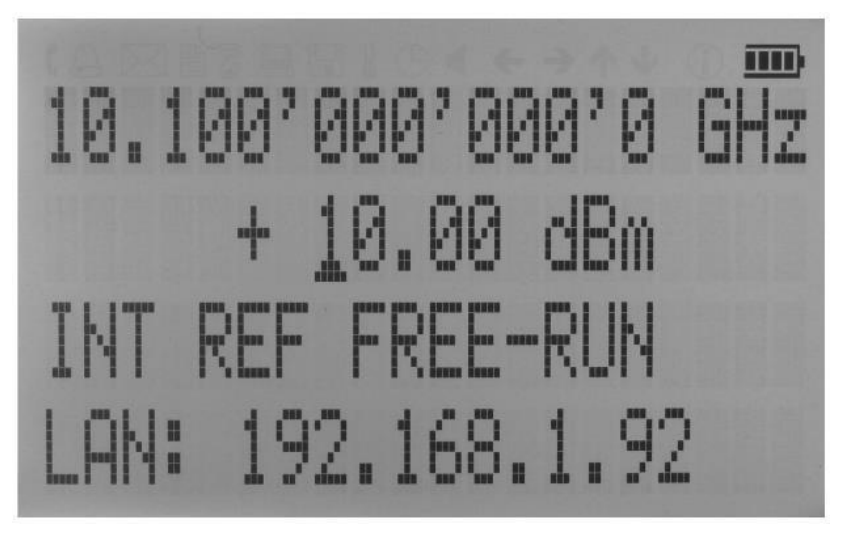
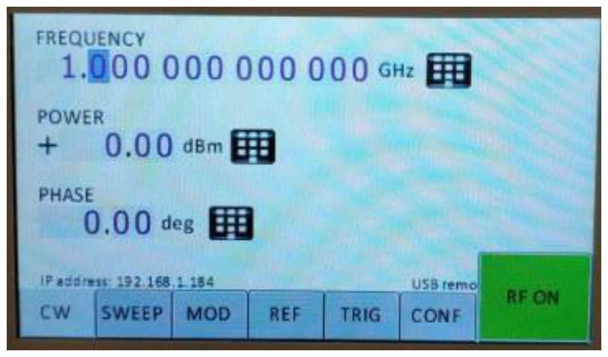
9.3 Main Menu Display
The Main Menu Display is invoked by pressing the menu key. The main menu contains nine submenus as shown below.
- Sweep
- Modulation
- Reference
- Trigger
- LF Output
- LAN Config
- Display Settings
- Device Settings
- Help
9.4 Frequency Sweep Submenu
After accessing the Frequency Sweep menu, first of three displays allows to enter the start and stop frequency. On the second display the number of points and the on and off time can be entered. On the third screen select the sweep mode between Linear, LOGarithmic and RANDom. Also select the repetition mode between INFinite and 1 (single repetition).
Start the sweep by pressing the RF On/Off button.
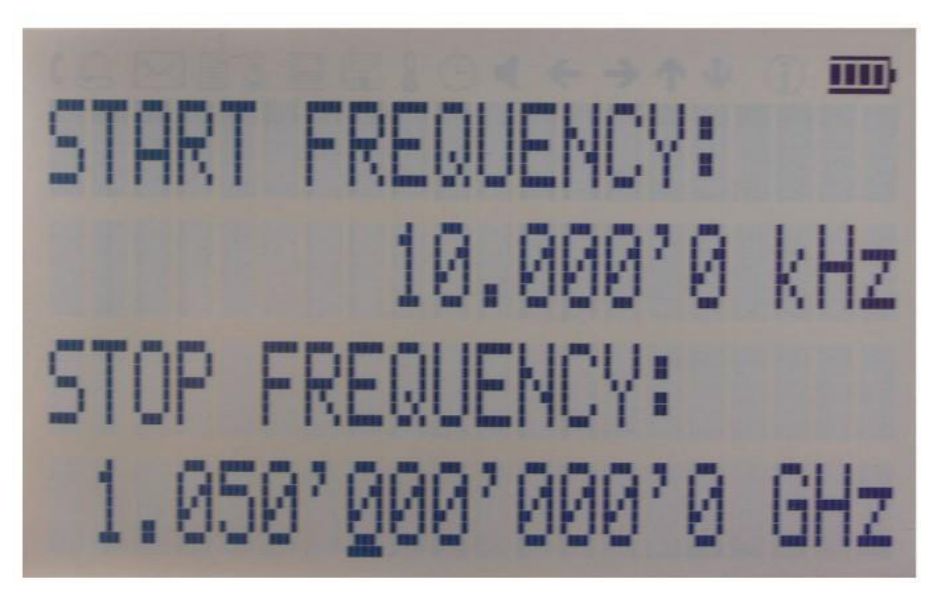
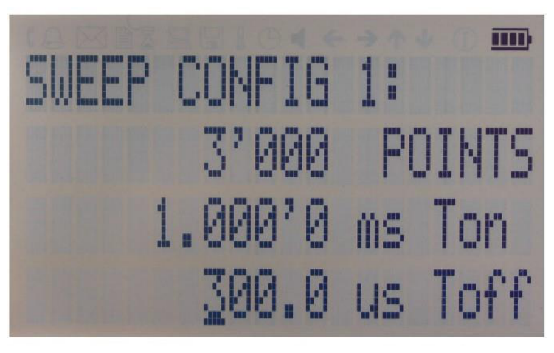
9.5 Power Sweep Submenu
After accessing the Power Sweep menu, the first display allows to enter start and stop power. On the second display, the number of points and the on and off time can be entered. On the third display, select the repetition mode between INFinite, and 1 (single repetition).
Start the sweep by pressing the RF On/Off button.
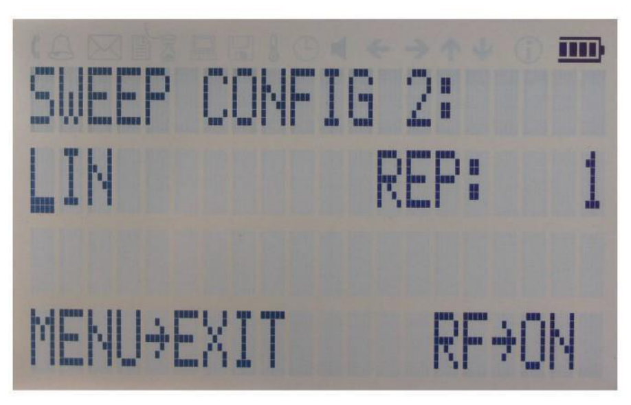
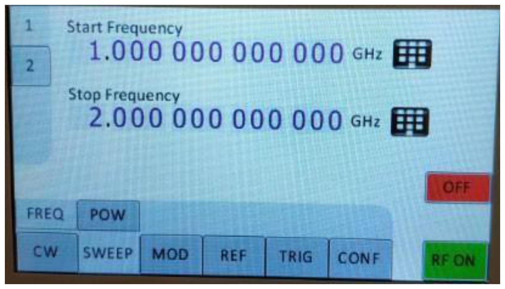
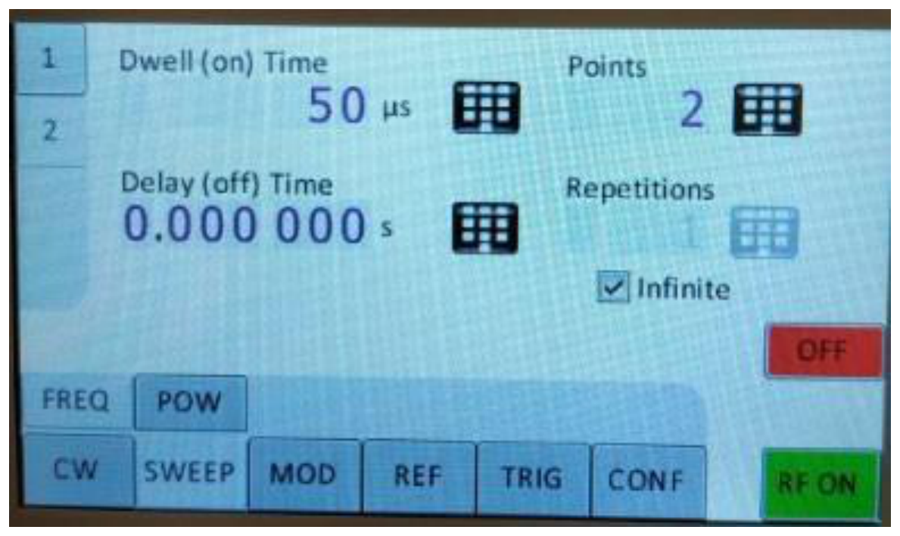
Figure 7-p: Displays shown for the frequency sweep configuration.
9.6 List Sweep Submenu
When entering the List Sweep submenu, a list of stored list sweeps is displayed.
9.7 Modulation Submenu
On line 1 select between INT (internal pulse generator) and EXT (external input). If internal modulation (INT) is selected, go to line 2 to change pulse width to desired value and go to line 3 to change pulse modulation frequency.
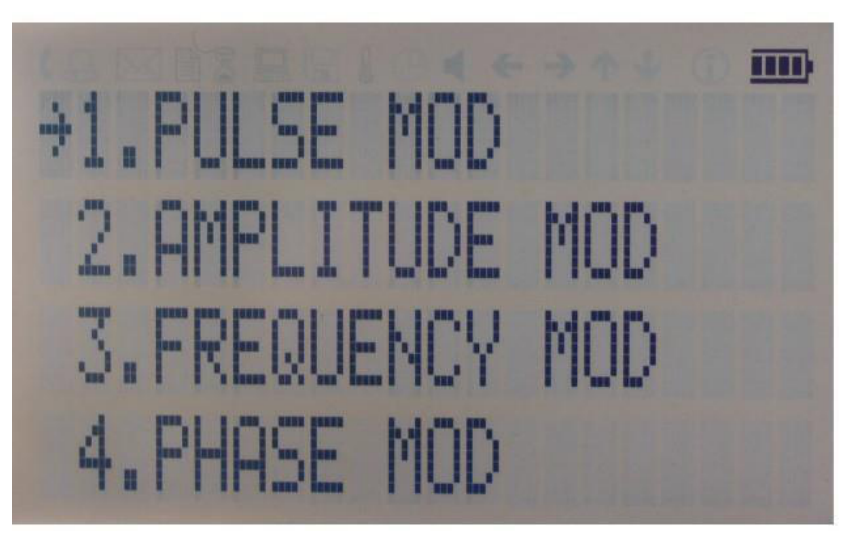
9.7.1 Pulse Modulation Submenu
On line 1 select between INT (internal pulse generator) and EXT (external input). If internal modulation (INT) is selected, go to line 2 to change pulse width to desired value and go to line 3 to change pulse modulation frequency.
9.7.2 Amplitude Modulation Submenu
In the Amplitude Mod submenu the internal amplitude modulation can be accessed. The modulation rate can be set between 1 Hz and 10 kHz.
9.7.3 Frequency Modulation Submenu
In the Frequency Mod submenu the internal and external frequency modulation can be accessed. It is possible to change between internal and external modulation source and to change modulation parameters such as modulation rate, depth or sensitivity.
9.7.4 Phase Modulation Submenu
In the phase modulation submenu the internal and external phase modulation can be accessed. It is possible to change between internal and external modulation source and change modulation parameters.
9.8 Reference Submenu
After accessing the Reference menu, use the rotary knob to toggle between ON and OFF or to change reference frequency to the desired value, respectively.
9.9 Trigger Submenu
After accessing the Trigger menu, use the rotary knob to toggle the selected entry value or to change selected digit. The display shows up to six selected entries.
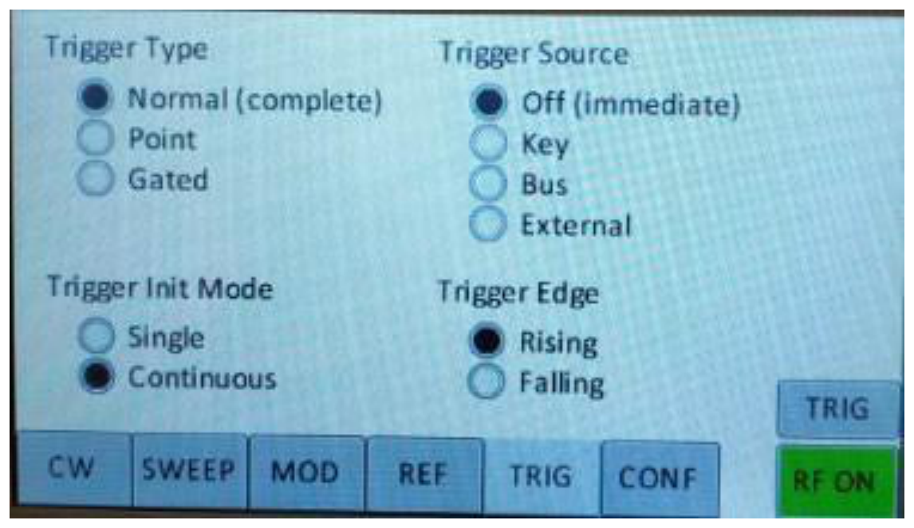
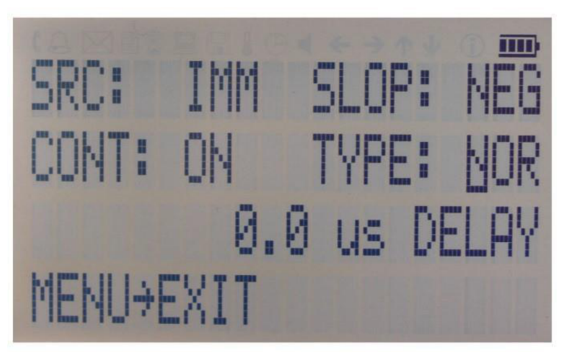
- Select SOURce. IMMediate, EXTernal, BUS (SCPI command), KEY (RF on/off button)
- Select SLOPe. POSitive, NEGative
- Select CONTinuous. ON, OFF (ON means that the trigger is re-armed after each trigger occurrence)
- Select RETRigger. OFF, ON, IMMediate (OFF means that any trigger event during execution of list is ignored)
Enter DELAY: trigger delay in micro seconds.
Press the RF On/Off button to arm the trigger. Exit the menu by pressing the menu key.
9.10 LF OUTPUT Submenu
In the LF OUTPUT Submenu the FUNCT OUT output can be configured at the rear panel of the instrument. On the first screen source for the FUNCT OUT can be selected. Choose LFG for the low frequency generator, TRIG to enable the instrument trigger output and PULSE to enable the pulse modulation in DC level is +/- 10 V. The source for the device frequency and voltage amplitude.
9.11 LAN Configuration Submenu
In the LAN Configuration menu, IP address, subnet mask and DHCP can be configured. Press the RF key to save the configuration (don't if you want to discard your changes).
9.12 Display Settings Submenu
After accessing the Display Configuration menu, use the rotary knob to change the display contrast as required. Press the menu key to save and exit the Display Settings submenu.
9.12.1 Save Settings Submenu
After accessing the Load Settings menu, use the rotary knob to get to the memory state you want to save. Press RF ON/OFF key to save your settings.
9.12.2 Load Settings Submenu
After accessing the Load Settings menu, use the rotary knob to get to the memory state you want to load. Press RF ON/OFF key to load.
9.12.3 Load Defaults Submenu
Press RF ON/OFF key button to load.
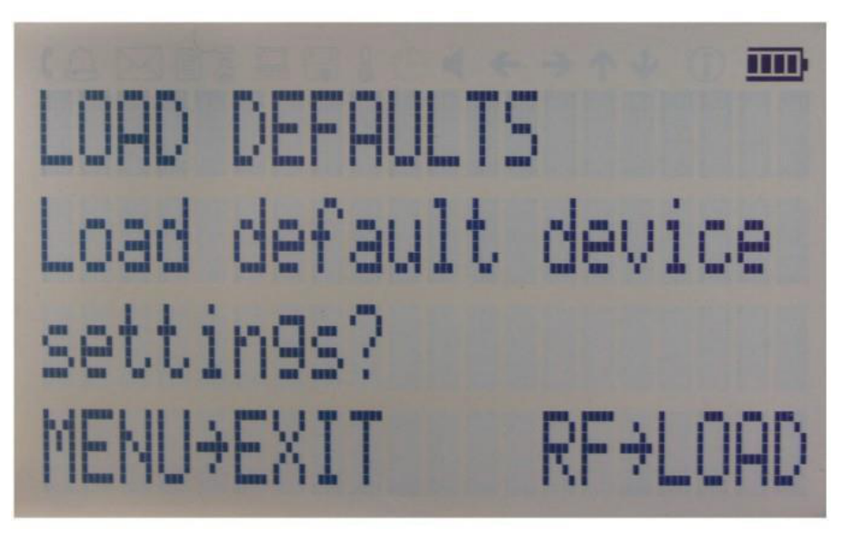
9.13 Help Submenu
This submenu provides basic information about the front panel menu control.
10. Combined Modulation
The tables below show what modulation types and sweeps can be active simultaneously.
Some modulations can be combined with frequency and power sweeps. For those combinations, some timing restrictions apply. Check the SCPI command reference for further details.
Some combinations may be available only using the GUI or custom remote programming sequences, but not on the front panel.
| FM/PM INT / EXT | AM INT / EXT | PULSE INT / EXT | LF Generator | |
|---|---|---|---|---|
| FM/PM | ||||
| INTERNAL | — | LIMITED [1] | YES / YES | YES |
| EXTERNAL | — | LIMITED [1] | YES / YES | YES |
| AM | ||||
| INTERNAL | — | — | NO / NO | NO |
| EXTERNAL | — | — | NO / NO | YES |
| PULSE | ||||
| INTERNAL | — | — | — | YES |
| EXTERNAL | — | — | — | YES |
| LF Generator | ||||
| CHIRP | NO / NO | LIMITED [2] | LIMITED [3] | YES |
Table 6-e: Possible combinations of internal and external modulation and the internal LF generator output.
Remarks
- [1] Combining AM and FM/PM is available to 835/845 only.
- [2] Enable AM first since active chirp disables live update of other settings.
- [3] In ALC on mode.
| FM/PM INT / EXT | AM INT / EXT | PULSE INT / EXT | |
|---|---|---|---|
| Frequency sweep Power sweep List sweep | LIMITED [1,2] | LIMITED [1,2] | LIMITED [2,3] |
Table 6-f: Possible combinations of internal and external modulation and sweeps.
Remarks
- [1] AM, FM, PM modulated carrier sweep is available to 835/845 only.
- [2] Enable modulation first since active sweep disables live update of other settings.
- [3] In ALC on mode.
11. Remote Programming: SCPI Command Reference
The signal generator can be remotely programmed. This reference provides information for remote operation of the Berkeley Nucleonics Signal Generators using commands sent from an external controller via Ethernet, USB, or GPIB. It includes the following:
- A general description of the LAN and the bus data transfer and control functions
- A general description of how to establish connection via LAN, USB, or GPIB
- A listing of the IEEE-488 Interface Function Messages recognized by the signal generator with a description of its response
- A complete listing and description of all the Standard Commands for Programmable Instruments (SCPI) commands that can be used to control signal generator operation with examples of command usage
Programming the Instrument
All instruments described in this manual can be accessed through LAN, USB or GIPB interface. All interfaces use standard SCPI command set to pass commands to the device.
While LAN is the preferred interface for Berkeley Nucleonics instruments, GPIB is only optionally available for some models.
Ethernet LAN
All Berkeley Nucleonics signal generators are preferably remotely programmed via a 10/100Base-T LAN interface and LAN- connected computer using one of several LAN interface protocols. The LAN allows instruments to be connected together and controlled by a LAN based computer. LAN and its associated interface operations are defined in the IEEE 802.2 standard.
All instruments support the following LAN interface protocols:
- Socket based LAN. The application programming interface (API) provided with the instrument supports general programming using the LAN interface under Windows operating system.
- VXI-11.
- Telephone Network (TELNET): TELNET is used for interactive, one command at a time instrument control.
- Internet protocol optionally supported
For LAN operation, the signal generator must be connected to the LAN, and an IP address must be assigned to the signal generator either manually or by using DHCP client service. Your system administrator can tell you which method to use. Most current LAN networks use DHCP.
DHCP Configuration
If the DHCP server uses dynamic DNS to link the hostname with the assigned IP address, the hostname may be used in place of the IP address. Otherwise, the hostname is not usable.
Ethernet Interface Connection and Setup
The instrument fully supports the IEEE-802.3 standard. Most front panel functions (except power on/off) can be remotely controlled via a network server and an Ethernet connection. The instrument firmware supports the TCP/IP network protocol.
Ethernet uses a bus or star topologies where all of the interfacing devices are connected to a central cable called the bus or are connected to a hub. Ethernet uses the CSMA/CD access method to handle simultaneous transmissions over the bus. CSMA/CD stands for Carrier Sense Multiple Access/Collision Detection. This standard enables network devices to detect simultaneous data channel usage, called a collision, and provides for a contention protocol. When a network device detects a collision, the CSMA/CD standard dictates that the data will be retransmitted after waiting a random amount of time. If a second collision is detected, the data is again retransmitted after waiting twice as long. This is known as exponential back off.
The TCP/IP setup requires the following:
- IP Address. Every computer/electronic device in a TCP/IP network requires an IP address. An IP address has four numbers (each between 0 and 255) separated by periods. For example: 192.168.1.50 is a valid IP address.
- Subnet Mask. The subnet mask distinguishes the portion of the IP address that is the network ID from the portion that is the station ID. The subnet mask 255.255.0.0, when applied to the IP address given above, would identify the network ID as 192.168 and the station ID as 1.50. All stations in the same local area network should have the same network ID, but different station IDs.
- Default Gateway. A TCP/IP network can have a gateway to communicate beyond the LAN identified by the network ID. A gateway is a computer or electronic device that is connected to two different networks and can move TCP/IP data from one network to the other. A single LAN that is not connected to other LANs requires a default gateway setting of 0.0.0.0. If you have a gateway, then the default gateway would be set to the appropriate value of your gateway.
- MAC Address. A MAC address is a unique 48-bit value that identifies a network interface card to the rest of the network. Every network card has a unique MAC address permanently stored into its memory.
Interface between the instrument and other devices on the network is connected to a network via a category five (CAT-5) interface cable. This cable uses four twisted pairs of copper insulators terminated into an RJ45 connector. CAT-5 cabling is capable of supporting frequencies up to 100 MHz and data transfer speeds up to 1 Gbps, which accommodates 1000Base-T, 100Base-T, and 10Base-T networks.
Generally, a VISA I/O library (like NI-VISA™) is used on the server side to facilitate the communications. A VISA installation on the controller is a prerequisite for remote control over LAN interface. VISA is a standardized software interface library providing input and output functions to communicate with instruments. For more information about VISA refer to the VISA library supplier's documentation.
Only the IP address or the device name is required for link setup. The IP address/device name is part of the "visa resource string" used by the programs for identification and control of the instrument. The visa resource string has the form:
TCPIP::ipaddr::inst0::INSTR
ipaddr has to be replaced by the IP address or the computer name of the instrument.
For instance, if the instrument has the IP address 192.168.1.50, TCPIP::192.168.1.50::inst0::INSTR is the valid resource name. Specification of inst0 in the resource name is optional. In this example, also TCPIP::192.168.1.50::INSTR is therefore a valid resource name.
TCPIP designates the network protocol used and INSTR indicates that the VXI-11 protocol is used. If several instruments are connected to the network, each instrument has its own IP address and associated resource name. The controller identifies these instruments by means of the resource name.
Using Sockets LAN
Sockets LAN is a method used to communicate with the signal generator over the LAN interface using the Transmission Control Protocol/Internet Protocol (TCP/IP). A socket is a fundamental technology used for computer networking and allows applications to communicate using standard mechanisms built into network hardware and operating systems. The method accesses a port on the signal generator from which bidirectional communication with a network computer can be established.
Sockets LAN can be described as an internet address that combines Internet Protocol (IP) with a device port number and represents a single connection between two pieces of software. The socket can be accessed using code libraries packaged with the computer operating system. Two common versions of socket libraries are the Berkeley Sockets Library for UNIX systems and Winsock for Microsoft operating systems.
Your signal generator implements a socket Applications Programming Interface (API) that is compatible with Berkeley socket for UNIX systems and Winsock for Microsoft systems. The signal generator is also compatible with other standard sockets APIs. The signal generator can be controlled using predefined SCPI functions once the socket connection is established in your program. Socket connection is available on port 18.
Using and Configuring VXI-11 (VISA)
The signal generator supports the LAN interface protocol described in the VXI-11 standard. VXI-11 is an instrument control protocol based on Open Network Computing/Remote Procedure Call (ONC/RPC) interfaces running over TCP/IP.
A range of standard software such as NI-VISA or Agilent IO Config is available to setup the computer-signal generator interface for the VXI- 11 protocol. Please refer to the applicable software user manual and documentation for information on running the program and configuring the VXI-11 interface. The program is used to configure the LAN client. Once the computer is configured for a LAN client, you can use the VXI- 11 protocol and the VISA library to send SCPI commands to the signal generator over the LAN interface. Example programs are available on request info@berkeleynucleonics.com.
VISA is an IO library used to develop IO applications and instrument drivers that comply with industry standards. It is recommended to use the VISA library for programming the signal generator. The NI-VISA and Agilent VISA libraries are similar implementations of VISA and have the same commands, syntax, and functions.
Using Telnet LAN (Port 18)
Telnet provides a means of communicating with the signal generator over the LAN. The Telnet client, run on a LAN connected computer, will create a remote session to the signal generator. A connection, established between the computer and signal generator, generates a user interface display for the user.
Using the Telnet protocol to send commands to the signal generator is similar to communicating with the signal generator over LAN. You establish a connection with the signal generator and then send or receive information using predefined commands. Communication is interactive: one command at a time. The Telnet service is available on port 18, by default. Also, by default, signal generator does not echo commands the user type in and in some telnet program (eg: Windows TELNET) also does not print the command the user type so it is maybe necessary to send a command
SYST:COMM:SOCK:ECHO ON
for the user commands to become visible on the display
USB (USBTMC)
All instruments support the following USB interface protocols:
- USBTMC class device via VISA. USBTMC stands for USB Test & Measurement Class. USBTMC is a protocol built on top of USB that allows GPIB-like communication with USB devices. From the user's point of view, the USB device behaves just like a GPIB device. USBTMC allows instrument manufacturers to upgrade the physical layer from GPIB to USB while maintaining software compatibility with existing software such as instrument drivers and any application that uses VISA. This is also what the VXI-11 protocol provides for TCP/IP.
- USBTMC with IVI drivers. the application programming interface (API) provided with the instrument supports general programming using the USB interface under Windows operating system using the IVI drivers.
USBTMC class device requires the physical layer from GPIB to USB while maintaining software compatibility with existing software such as instrument drivers and any application that uses VISA. This is also what the VXI-11 protocol provides for TCP/IP. You can then use this resource to access the signal generator using the GPIB specific functions.
USBTMC upgrades the physical layer from GPIB to USB while maintaining software compatibility with existing software such as instrument drivers and any application that uses VISA. The new device will appear in MAX under Device and Interfaces > USB Devices. You can then use this resource name as you would use any GPIB resource.
USB-TMC Connection and Setup using VISA
USBTMC stands for USB Test & Measurement Class. USBTMC is a protocol built on top of USB that allows GPIB-like communication with USB devices. From the user's point of view, the USB device behaves just like a GPIB device. The USBTMC protocol supports service request, triggers and other GPIB specific operations.
USBTMC upgrades the physical layer from GPIB to USB while maintaining software compatibility with existing software such as instrument drivers and any application that uses VISA. This is also what the VXI-11 protocol provides for TCP/IP.
NI-VISA 3.0 or later allows you to communicate as a controller to Model 845 devices. NI VISA is configured to detect USBTMC compliant instruments such as the Model 845. To use such a device, plug it in and Windows should detect the new hardware and launch the New Hardware Wizard. Instruct the wizard to search for the driver, which in this case is NI-VISA. If NI-VISA is properly installed, the device will be installed as a USB Test & Measurement Class Device. Open Measurement & Automation Explorer (MAX). The new device will appear in MAX under Device and Interfaces > USB Devices. You can then use this resource name as you would use any GPIB resource.
USB-TMC Connection and Setup using BNC API
BNC's API programming interface supports direct communication to instruments using BNC's proprietary DLL driver libraries.
Please contact BNC for more detailed documentation, programming samples, and updates on the DLL library.
GPIB Interface Connection and Setup
General GPIB information
GPIB (General Purpose Interface Bus) is an interface standard for connecting computers and peripherals, which supports the following international standards: IEEE 488.1, IEC 625, IEEE 488.2, and JIS C1901. The GPIB interface allows you to control the APPH from an external computer. The computer sends commands and instructions to the APPH and receives data sent from the APPH via GPIB.
You can connect up to 15 devices in a single GPIB system.
The length of cables to connect between devices must be 4 m or less. The total length of connecting cables in a single GPIB system must be 2 m × the number of connected devices (including the controller) or less. You cannot construct the system in which the total cable length exceeds 20 m.
You cannot connect more than four devices to an individual device must be 4 m or less. If you connect 5 or more connectors, excessive force is applied to the connector part, which may result in failure.
You can choose the device connection topology from star, linear, and combined. Loop connection is not allowed.
SCPI Commands
The Standard Commands for Programmable Instrumentation (SCPI) provides a uniform and consistent language to control programmable test and measurement devices in instrumentation systems. The SCPI Standard is built on the foundation of IEEE 488.2, Standard Codes and Formats. It requires conformance to IEEE 488.2, but is pure software standard. SCPI syntax is ASCII text, and therefore can be attached to any computer test language such as BASIC, C, or C++. It can also be used with Test Application Environments such as LabWindows/CVI, LabVIEW™, or Matlab®. SCPI is hardware independent. SCPI strings can be sent over any instrument interface. It works equally well over USB-TMC, GPIB, RS-232, VXIbus or LAN networks.
Please see the chapter 4 for detailed description of supported SCPI commands.
IEEE-488 Interface Commands
IEEE Mandated and Optional Common Commands
The required common commands are IEEE-488.2 mandated commands that are defined in the IEEE-488.2 standard and must be implemented by all SCPI compatible instruments. These commands are identified by the asterisk (*) at the beginning of the command keyword. These commands are used to control instrument status registers, status reporting, synchronization, and other common functions.
Commands declared mandatory by IEEE 488.2.
*CLSClear Status Command*ESEStandard Event Status Enable Command*ESE?Standard Event Status Enable Query*ESR?Standard Event Status Register Query*IDN?Identification Query*OPCOperation Complete Command*OPC?Operation Complete Query*RSTReset Command*SREService Request Enable Command*SRE?Service Request Enable Query*STB?Read Status Byte Query*TST?Self-Test Query*WAIWait-to-Continue Command
Optional common commands described by IEEE 488.2
*OPT?Option Identification Query
*CLS
The Clear Status (CLS) command clears the status byte by emptying the error queue and clearing all the event registers including the Data Questionable Event Register, the Standard Event Status Register, the Standard Operation Status Register and any other registers that are summarized in the status byte.
*ESE<data>
The Standard Event Status Enable (ESE) command sets the Standard Event Status Enable Register. The variable <data> represents the sum of the bits that will be enabled.
Range 0-255
Remarks The setting enabled by this command is not affected by signal generator preset or *RST. However, cycling the signal generator power will reset this register to zero.
*IDN?
The Identification (IDN) query outputs an identifying string. The response will show the following information: <company name>, <model number>, <serial number>, <firmware revision>
*OPC
The Operation Complete (OPC) command sets bit 0 in the Standard Event Status Register when all pending operations have finished.
The Operation Complete command causes the device to set the operation complete bit (bit 0) in the Standard Event Status Register when all pending operations have been finished.
*OPC?
The Operation Complete (OPC) query returns the ASCII character 1 in the Standard Event Status Register when all pending operations have finished.
This query stops any new commands from being processed until the current processing is complete. This command blocks the communication until all operations are complete (i.e. the timeout setting should be longer than the longest sweep).
*OPT?
The options (OPT) query returns a comma-separated list of all currently installed instrument options on the signal generator.
Common returned option strings are:
| Option | Description |
|---|---|
| 0 | Basic device |
| B3 | Rechargeable battery pack |
| PE|PE2|PE3|PE4 | Extended power range |
| GPIB | GPIB (IEEE 488) programming interface |
Further options are available for different signal generator model. Please refer to the Data Sheet for a complete list of options supported by a particular instrument.
*RCL<reg>
The Recall (RCL) command recalls the state from the specified memory register <reg>.
*RST
The Reset (RST) command resets most signal generator functions to factory- defined conditions.
Remarks Each command shows the [*RST] default value if the setting is affected.
*SAV <reg>
The Save (SAV) command saves signal generator settings to the specified memory register <reg>.
Remarks The save function does not save all signal generator settings. Refer to the User's Guide for more information on the save function.
*SRE<data>
The Service Request Enable (SRE) command sets the value of the Service Request Enable Register. The variable <data> is the decimal sum of the bits that will be enabled. Bit 6 (value 64) is ignored and cannot be set by this command.
Range 0-255
The setting enabled by this command is not affected by signal generator preset or *RST. However, cycling the signal generator power will reset it to zero.
*SRE?
The Service Request Enable (SRE) query returns the value of the Service Request Enable Register.
Range 0-63 & 128-191
*STB?
The Read Status Byte (STB) query returns the value of the status byte including the master summary status (MSS) bit.
Range 0-255
*TRG
The Trigger (TRG) command triggers the device if LAN is the selected trigger source, otherwise, *TRG is ignored.
*TST?
The Self-Test (TST) query initiates the internal self- test and returns one of the following results:
- 0 This shows that all tests passed.
- 1 This shows that one or more tests failed.
*WAI
The Wait- to- Continue (WAI) command causes the signal generator to wait until all pending commands are completed, before executing any other commands.
SCPI Commands
This chapter provides an introduction to SCPI programming that includes descriptions of the command types, hierarchical command structure, data parameters, and notational conventions. Information on Model 845 status system and trigger system programming is also provided.
Introduction
Standard Commands for Programmable Instruments (SCPI) is the new instrument command language for controlling instruments that goes beyond IEEE 488.2 to address a wide variety of instrument functions in a standard manner. SCPI promotes consistency, from the remote programming standpoint, between instruments of the same class and between instruments with the same functional capability. For a given measurement function such as frequency or voltage, SCPI defines the specific command set that is available for that function. Thus, two oscilloscopes made by different manufacturers could be used to make frequency measurements in the same way. It is also possible for a SCPI counter to make a frequency measurement using the same commands as an oscilloscope. SCPI commands are easy to learn, self-explanatory and account for both novice and expert programmer's usage. Once familiar with the organization and structure of SCPI, considerable efficiency gains can be achieved during control program development, independent of the control program language selected.
A key to consistent programming is the reduction of multiple ways to control similar instrument functions. The philosophy of SCPI is for the same instrument functions to be controlled by the same SCPI commands. To simplify learning, SCPI uses industry-standard names and terms that are manufacturer and customer supported.
The advantage of SCPI for the ATE system programmer is reducing the time learning how to program new SCPI instruments after programming their first SCPI instrument.
Programmers who use programming languages such as BASIC, C, FORTRAN, etc., to send instrument commands to instruments will benefit from SCPI. Also, programmers who implement instrument device drivers for ATE program generators and/or software instrument front panels will benefit by SCPI's advantages. SCPI defines instrument commands, parameters, data, and status. It is not an application package, programming language or software intended for instrument front panel control.
SCPI is designed to be layered on top of the hardware-independent portion of IEEE 488.2.
SCPI Command Types
SCPI commands, which are also referred to as SCPI instructions, are messages to the instrument to perform specific tasks. The Model 845 command set includes:
- "Common" commands (IEEE488.2 mandated commands)
- SCPI required commands
- SCPI optional commands (per SCPI 1999.0)
- SCPI compliant commands that are unique to the Model 845. Not all of the commands supported by the instrument are taken from the SCPI standard; however, their syntax follows SCPI rules.
SCPI Command Syntax
Typical SCPI commands consist of one or more keywords, parameters, and punctuation. SCPI command keywords can be a mixture of upper and lower case characters. Except for common commands, each keyword has a long and a short form. In this manual, the long form is presented with the short form in upper case and the remainder in lower case. Unrecognized versions of long form or short form commands, or improper syntax, will generate an error.
Structure of a Command Line
A command line may consist of one or several commands. It is terminated by an EOI together with the last data byte.
Several commands in a command line must be separated by a semicolon ";". If the next command belongs to a different command system, the semicolon is followed by a colon. A colon ":" at the beginning of a command marks the root node of the command tree.
If the successive commands belong to the same system, having one or several levels in common, the command line can be abbreviated. To this end, the second command after the semicolon starts with the level that lies below the common levels. The colon following the semicolon must be omitted in this case.
Responses to Queries
A query is defined for each setting command unless explicitly specified otherwise. It is formed by adding a question mark to the associated setting command. According to SCPI, the responses to queries are partly subject to stricter rules than in standard IEEE 488.2.
Parameters
Most commands require a parameter to be specified. The parameters must be separated from the header by a "white space". Permissible parameters are numerical values, Boolean parameters, text, character strings and block data. The type of parameter required for the respective command and the permissible range of values are specified in the command description.
- Numerical values. Numerical values can be entered in any form, i.e. with sign, decimal point and exponent. Values exceeding the resolution of the instrument are rounded up or down. The mantissa may comprise up to 255 characters, the values must be in the value range −9.9E37 to 9.9E37. The exponent is introduced by an "E" or "e". Entry of the exponent alone is not allowed.
- Units. In the case of physical quantities, the unit can be entered. Permissible unit prefixes are G (giga), MA (mega), MHZ are also permissible), K (kilo), M (milli), U (micro) and N (nano). If the unit is missing, the basic unit is used.
- Boolean Parameters. Boolean parameters represent two states. The ON state (logically true) is represented by ON or a numerical value unequal to 0. The OFF state (logically false) is represented by OFF or the numerical value 0. ON or OFF is returned by a query.
Hierarchical Command Structure
All SCPI commands, except the common commands, are organized in a hierarchical structure similar to the inverted tree file structure used in most computers. The SCPI standard refers to this structure as "the Command Tree." The command keywords that correspond to the major instrument control functions are located at the top of the command tree. The command keywords for the Model 845 SCPI command set are shown below.
:ABORt:DIAGnostic:DISPlay:INITiate:OUTput:SOURce:STATus:SYSTem:TRIGger:UNIT
All Model 845 SCPI commands, except the :ABORt command, have one or more subcommands (keywords) associated with them to further define the instrument function to be controlled. The subcommand keywords may also have one or more associated subcommands (keywords). Each subcommand level adds another layer to the command tree. The command keyword and its associated subcommand keywords form a portion of the command tree called a command subsystem.
Status System Programming
The Model 845 implements the status byte register, the Service Request Enable Register, the Standard Event Status Register, and the Standard Event Status Enable Register.
The Model 845 status system consists of the following SCPI-defined status reporting structures:
- The Instrument Summary Status Byte
- The Standard Event Status Group
- The Operation Status Group
- The Questionable Status Group
The following paragraphs describe the registers that make up a status group and explain the status information that each status group provides.
Status Registers
In general, a status group consists of a condition register, a transition filter, an event register, and an enable register. Each component is briefly described in the following paragraphs.
Condition Register
The condition register is continuously updated to reflect the current status of the Model 845. There is no latching or buffering for this register, it is updated in real time. Reading the contents of a condition register does not change its contents.
Transition Filter
The transition filter is a special register that specifies which types of bit state changes in the condition register will set corresponding bits in the event register. Negative transition filters (NTR) are used to detect condition changes from True (1) to False (0); positive transition filters (PTR) are used to detect condition changes from False (0) to True (1). Setting both positive and negative filters True (1) allows an event to be reported each time the value changes. Resetting both filters False (0) disables event reporting. The action of these filters is paralleled by a query of a *CLS command result.
Event Register
The event register latches transition events from the condition register as specified by the transition filter. Bits in the event register are latched, and once set they remain set until cleared by a query or a *CLS command. Event registers are read only.
Enable Register
The enable register specifies the bits in the event register that can produce a summary bit. The Model 845 logically ANDs corresponding bits in the event and enable registers, and ORs all the resulting bits to obtain a summary bit. Summary bits are recorded in the Summary Status Byte. Enable registers are read-write. Querying an enable register does not affect it. The command :STATus:PRESet sets the Operation Status Enable register and the Questionable Status Enable register to all 0's.
Status Group Reporting
The state of certain Model 845 hardware and operational events and conditions can be determined by programming the status system. Three lower status groups provide status information to the Summary Status Byte group. The Summary Status Byte group is used to determine the general nature of an event or condition and the other status groups are used to determine the specific nature of the event or condition.
Summary Status Byte Group
The Summary Status Byte group, consisting of the Summary Status Byte Enable register and the Summary Status Byte, is used to determine the general nature of an Model 845 event or condition. The bits in the Summary Status Byte provide the following:
Operation Status Group
The Operation Status group, consisting of the Operation Condition register, the Operation Positive Transition register, the Operation Negative Transition register, the Operation Event register and the Operation Event Enable register.
Standard Event Status Group
The Standard Event Status group, consisting of the Standard Event Status register (an Event register) and the Standard Event Status Enable register, is used to determine the specific event that set bit 5 of the Summary Status Byte.
The bits in the Standard Event Status register provide the following:
| Bit | Description |
|---|---|
| 0 | Set to indicate that all pending Model 845 operations were completed following execution of the "*OPC" command. |
| 1 | Request control |
| 2 | Set to indicate that a query error has occurred. Query errors have SCPI error codes from −499 to −400. |
| 3 | Set to indicate that a device-dependent error has occurred. Device-dependent errors have SCPI error codes from −399 to −300 and 1 to 32767. |
| 4 | Set to indicate that an execution error has occurred. Execution errors have SCPI error codes from −299 to −200. |
| 5 | Set to indicate that a command error has occurred. Command errors have SCPI error codes from −199 to −100. |
| 6 | User request |
| 7 | Power on |
Standard Event Status Enable register (ESE commands)
Operation Status Group
The Operation Status group, consisting of the Operation Condition register, the Operation Positive Transition register, the Operation Negative Transition register, the Operation Event register, and the Operation Event Enable register, is used to determine the specific condition that set bit 7 in the Summary Status Byte.
Related commands are covered by the :STATus Subsystem chapter.
The bits in the Operation Event register provide the following:
| Bit | Description |
|---|---|
| 0 | NOT USED. |
| 1 | NOT USED. |
| 2 | NOT USED. |
| 3 | (List) sweep state. This bit is set while a (list) sweep is running. |
| 4 | NOT USED. |
| 5 | Waiting for trigger state. This bit is set while the device waits for a trigger event. |
| 6 | NOT USED. |
| 7 | NOT USED. |
| 8 | NOT USED. |
| 9 | NOT USED. |
| 10 | NOT USED. |
| 11 | NOT USED. |
| 12 | NOT USED. |
| 13 | NOT USED. |
| 14 | NOT USED. |
| 15 | NOT USED. |
Questionable Status Group
The Questionable Status group, consisting of the Questionable Condition register, the Questionable Positive Transition register, the Questionable Negative Transition register, the Questionable Event register, and the Questionable Event Enable register, is used to determine the specific condition that set bit 3 in the Summary Status Byte.
Related commands are covered by the :STATus Subsystem chapter.
The bits in the Questionable Status register provide the following:
| Bit | Description |
|---|---|
| 0 | NOT USED. |
| 1 | NOT USED. |
| 2 | NOT USED. |
| 3 | Output power level inaccurate or out of range. |
| 4 | Device temperature out of operating range. |
| 5 | Output frequency inaccurate or out of range. |
| 6 | NOT USED. |
| 7 | Modulation inaccurate or out of range. |
| 8 | NOT USED. |
| 9 | NOT USED. |
| 10 | NOT USED. |
| 11 | NOT USED. |
| 12 | NOT USED. |
| 13 | NOT USED. |
| 14 | NOT USED. |
| 15 | NOT USED. |
:ABORt Subsystem
The :ABORt command is a single command subsystem. There are no subcommands or associated data parameters, as shown below. The :ABORt command, along with the :TRIGger and :INITiate commands, comprise the Trigger group of commands.
| Command | Parameters | Unit | Default |
|---|---|---|---|
:ABORt |
:ABORt
This command causes the List or Step sweep in progress to abort. Even if INIT:CONT[:ALL] is set to ON, the sweep will not immediately re-initiate.
:DISPlay Subsystem
The :DISPlay subsystem configures the front panel display.
| Command | Parameters | Unit | Default |
|---|---|---|---|
:DISPlay:ENABle | ON|OFF|1|0 | ON |
:DISPlay:ENABle
:DISPlay:ENABle ON|OFF|1|0:DISPlay:ENABle?
Enables or disables the front panel display.
When disabled, the display does not show any device information. This mode can not be left via front panel display control. Only re-enabling the display via remote control or power cycling brings the front panel display back to normal operation.
Disabling the front panel display by this command can be used to hide confidential settings.
Refer to :SYSTem:LOCK for locking the front panel without hiding device settings.
*RST ON
:INITiate Subsystem
The :INITiate subsystem controls the state of the trigger system. The subsystem commands and parameters are described below. The :INITiate commands, along with the :ABORt and :TRIGger commands, comprise the Trigger Group of commands.
| Command | Parameters | Unit | Default |
|---|---|---|---|
:INITiate[:IMMediate] | |||
:INITiate:CONTinuous | ON|OFF|1|0 | ON |
:INITiate[:IMMediate]
Sets trigger to the armed state.
:INITiate:CONTinuous ON|OFF|1|0
When enabled, continuously rearms the trigger system after completion of a triggered sweep.
:OUTPut Subsystem
Channel selection for multi-channel devices
Commands applying to a single channel use the <ch> field. Commands that are common to all channels have no <ch> field.
The target channel of such commands under the OUTPut subsystem can be defined by appending the channel index to the OUTPut node: <ch> is 1 to number of channels.
If <ch> is omitted, the command targets the currently selected default channel.
Default channel selection
Default output channel is coupled to default source channel. Refer to [SOURce:]SELect for default channel selection.
| Command | Parameters | Unit | Default |
|---|---|---|---|
OUTPut<ch>[:STATe] | ON|OFF|1|0 | OFF | |
OUTPut<ch>:BLANking[:STATe] | ON|OFF|1|0 |
[:STATe] ON|OFF|1|0
:OUTPut<ch>[:STATe] ON|OFF|1|0:OUTPut<ch>[:STATe]?
Turns RF output power on/off.
:BLANking[:STATe] ON|OFF|1|0
:OUTPut<ch>:BLANking[:STATe] ON|OFF|1|0:OUTPut<ch>:BLANking[:STATe]?
ON causes the RF output to be turned off (blanked) during frequency changes. OFF leaves RF output turned on (unblanked).
*RST OFF on all devices except Model 875.
[:SOURce<ch>] Subsystem
Channel selection for multi-channel devices
Commands applying to a single channel use the <ch> field. Commands that are common to all channels have no <ch> field.
The target channel of such commands under the SOURce subsystem can be defined by appending the channel index to the SOURce node: <ch> is 1 to number of channels.
If <ch> is omitted, the command targets the currently selected default channel.
| Command | Parameters | Unit | Default |
|---|---|---|---|
[:SOURce]:SELect | <integer> | 1 |
:SELect
[:SOURce]:SELect <channel>[:SOURce]:SELect?
For multi-channel devices, this command sets the default channel. Any command with channel index <ch> omitted applies to the default channel. This command sets the default channel of the following systems:
:MEMory
:OUTput
:SOURce
*RST 1
Range 1 to number of channels.
[:SOURce<ch>]:FREQuency Subsystem
| Command | Parameters | Unit | Default |
|---|---|---|---|
[:SOURce<ch>]:FREQuency[:FIXed|CW] | <float> | Hz | 100 MHz |
[:SOURce<ch>]:FREQuency:CENTer | <float> | Hz | 1.5 GHz |
[:SOURce<ch>]:FREQuency:MODE | FIXed|CW|SWEep|LIST|CHIRp | FIXed | |
[:SOURce<ch>]:FREQuency:RESolution | LOW|HIGH | LOW | |
[:SOURce<ch>]:FREQuency:SPAN | <float> | Hz | 1 GHz |
[:SOURce<ch>]:FREQuency:STARt | <float> | Hz | 1 GHz |
[:SOURce<ch>]:FREQuency:STEP | <float> | Hz | 1 GHz |
[:SOURce<ch>]:FREQuency:STOP | <float> | Hz | 2 GHz |
[:SOURce<ch>]:FREQuency:TRIGger | ON|OFF|1|0 | OFF |
FREQuency:FIXed|CW]
[:SOURce<ch>]:FREQuency[:CW] <float>[:SOURce<ch>]:FREQuency[:CW]?
This command sets the signal generator output frequency for the CW frequency mode.
*RST 100 MHz
Range Please refer to the Data Sheet.
Unit Hz
FREQuency:CENTer
[:SOURce<ch>]:FREQuency:CENTer <float>[:SOURce<ch>]:FREQuency:CENTer?
This command sets the sweep center frequency.
*RST 1 GHz
Range Please refer to the Data Sheet.
Unit Hz
FREQuency:MODE
[:SOURce<ch>]:FREQuency:MODE FIXed|CW|SWEep|LIST|CHIRp[:SOURce<ch>]:FREQuency:MODE?
This command sets the frequency mode of the signal generator to CW, (list) sweep or chirp.
| FIXed|CW | Selects fixed frequency operation and stops an active frequency sweep or chirp. |
|---|---|
| SWEep or LIST | This choice selects the swept frequency mode. If sweep triggering is set to immediate along with continuous sweep mode, executing the command starts the LIST or SWEep frequency sweep. In SWEep mode, frequency will be determined by programmed values for the :STARt. Use the [:SOURce<ch>]:SWEep subsystem commands for sweep configuration.In LIST mode, frequency is determined by programmed values for [:SOURce<ch>]:LIST:FREQuency.Use the [:SOURce<ch>]:LIST subsystem commands for list sweep configuration. |
| CHIRp | This choice selects the chirp mode. A chirp is a quasi-analog sweep over limited bandwidth. Refer to the [:SOURce<ch>]:CHIRp subsystem for configuration. |
*RST FIXed
FREQuency:RESolution
[:SOURce<ch>]:FREQuency:RESolution LOW|HIGH[:SOURce<ch>]:FREQuency:RESolution?
This command selects the frequency resolution. It is available only for Model 855B devices with limited frequency resolution (serial numbers xxx-xxx5xxxxx-xxxx, xxx-xxx6xxxxx-xxxx, xxx-xxx7xxxxx-xxxx).
| LOW | Selects low frequency resolution (typically 1 Hz). Low frequency resolution enables phase shifting and fast frequency switching. |
|---|---|
| HIGH | Selects high frequency resolution (typically 100 µHz). High frequency resolution disables phase shifting and frequency switching is slower. |
*RST LOW
FREQuency:SPAN
[:SOURce<ch>]:FREQuency:SPAN <float>[:SOURce<ch>]:FREQuency:SPAN?
This command sets the frequency sweep span.
*RST 1 GHz
Range Please refer to the Data Sheet.
Unit Hz
FREQuency:STARt
[:SOURce<ch>]:FREQuency:STARt <float>[:SOURce<ch>]:FREQuency:STARt?
This command sets the first frequency point in a chirp or step sweep.
*RST 1 GHz
Range Please refer to the Data Sheet.
Unit Hz
FREQuency:STEP
[:SOURce<ch>]:FREQuency:STEP <float>[:SOURce<ch>]:FREQuency:STEP?
This command sets the frequency step size for sweeps and chirps.
FREQuency:STOP
[:SOURce<ch>]:FREQuency:STOP <float>[:SOURce<ch>]:FREQuency:STOP?
This command sets the last frequency point in a chirp or step sweep.
*RST 2 GHz
Range Please refer to the Data Sheet.
Unit Hz
FREQuency:TRIGger
[:SOURce<ch>]:FREQuency:TRIGger ON|OFF|1|0
ON causes frequency changes in CW mode to become effective only after receiving a trigger signal. OFF is the normal CW mode with frequency changes taking effect immediately.
This is not supported by Model 875.
*RST OFF
[:SOURce<ch>]:CHIRp Subsystem
The :CHIRp Subsystem allows to run ultrafast quasi-analog frequency sweeps. The frequency can either increase or decrease linear. This is not supported by Model 875.
| Command | Parameters | Unit | Default |
|---|---|---|---|
[:SOURce<ch>]:CHIRp:TIME | <float> | s | |
[:SOURce<ch>]:CHIRp:COUNt | INFinite|<integer> | INFinite | |
[:SOURce<ch>]:CHIRp:DIR | DU|UD|DOWN|UP | UP | |
[:SOURce<ch>]:CHIRp:BLANking | ON|OFF|1|0 | ON |
| Related command |
|---|
[:SOURce<ch>]:FREQuency:CENTer |
[:SOURce<ch>]:FREQuency:MODE |
[:SOURce<ch>]:FREQuency:SPAN |
[:SOURce<ch>]:FREQuency:STARt |
[:SOURce<ch>]:FREQuency:STOP |
:CHIRp:COUNt
[SOURce<ch>]:CHIRp:COUNt INFinite|<value>[SOURce<ch>]:CHIRp:COUNt?
This command specifies the number of repetitions for the chirp. Set to INF for infinite repetitions.
*RST INF
Range INF or 1 to 32767
:CHIRp:TIME
[SOURce<ch>]:CHIRp:TIME <value><unit>[SOURce<ch>]:CHIRp:TIME?
Sets the time span for the chirp.
*RST 100 µs
Range 100 ns to 10 s
:CHIRp:DIRection
[:SOURce<ch>]:CHIRp:DIRection UD|DU|DOWN|UP[:SOURce<ch>]:CHIRp:DIRection?
This command sets the direction of the chirp. DU is bidirectional, direction down first. UD is bidirectional, direction up first.
*RST UP
CHIRp:BLANking
[:SOURce<ch>]:CHIRp:BLANking ON|OFF|1|0[:SOURce<ch>]:CHIRp:BLANking?
This command enables or disables RF output blanking while waiting for the trigger signal. Blanking enabled means the RF output is off while waiting for the trigger event.
*RST ON
FREQuency:CENter
This related command sets the center frequency of a chirp.
Refer to [:SOURce]:FREQuency:CENTer for a detailed command description.
FREQuency:MODE
This related command sets the frequency mode of the signal generator. A chirp can be enabled by selecting chirp mode or disabled by selecting any other mode.
Refer to [:SOURce]:FREQuency:MODE for a detailed command description.
FREQuency:SPAN
This related command sets the frequency span of a chirp.
Refer to [:SOURce]:FREQuency:SPAN for a detailed command description.
FREQuency:STARt
This related command sets the start frequency in a chirp.
Refer to [:SOURce]:FREQuency:STARt for a detailed command description.
FREQuency:STOP
This related command sets the stop frequency in a chirp.
Refer to [:SOURce]:FREQuency:STOP for a detailed command description.
[:SOURce<ch>]:PHASe Subsystem
| Command | Parameters | Unit | Default |
|---|---|---|---|
[:SOURce<ch>]:PHASe:REFerence | |||
[:SOURce<ch>]:PHASe[:ADJust] | < float> | rad|deg | 0 rad |
[:SOURce<ch>]:PHASe:CENTer | <float> | Hz | 3.14 rad |
[:SOURce<ch>]:PHASe:COMPensation | <float> | s | 0 s |
[:SOURce<ch>]:PHASe:MEMory:RESTart | |||
[:SOURce<ch>]:PHASe:MEMory:STATe | ON|OFF|1|0 | ON | |
[:SOURce<ch>]:PHASe:MODE | FIXed|CW|SWEep|LIST | FIXed | |
[:SOURce<ch>]:PHASe:SPAN | <float> | rad|deg | 6.28 rad |
[:SOURce<ch>]:PHASe:STARt | <float> | rad|deg | 0 rad |
[:SOURce<ch>]:PHASe:STEP? | rad | ||
[:SOURce<ch>]:PHASe:STOP | <float> | rad|deg | 6.28 rad |
:PHASe:REFerence
[SOURce<ch>]:PHASe:REFerence
This command sets the current output phase as a zero reference. Subsequent phase adjustments are set relative to the new reference.
PHASe[:ADJust]
[SOURce<ch>]:PHASe[:ADJust] <float>[SOURce<ch>]:PHASe[:ADJust]?
This command adjusts the phase of the signal.
*RST 0 rad
Range -1e10 to +1e10 rad
Unit rad|deg
PHASe:CENTer
[SOURce<ch>]:PHASe:CENTer <float>[SOURce<ch>]:PHASe:CENTer?
This command sets the sweep center phase.
*RST 3.14 rad
Range Please refer to the Data Sheet.
Unit rad|deg
PHASe:COMPensation
[SOURce<ch>]:PHASe:COMPensation <float>[SOURce<ch>]:PHASe:COMPensation?
This command sets the electrical length compensation. It compensates phase shift introduced by external transmission lines.
*RST 0 s
Range -1e10 to +1e10 s
Unit s
PHASe:MEMory:RESTart
[SOURce<ch>]:PHASe:MEMory:RESTart
For devices with option PHS this command restarts phase memory. Phase memory aligns the output signal phase such that for any frequency a zero crossing occurs at the same reference point in time. Restart resets this reference point in time.
PHASe:MEMory:STATe
[SOURce<ch>]:PHASe:MEMory:STATe ON|OFF|1|0[SOURce<ch>]:PHASe:MEMory:STATe?
Enables or disables phase memory and thus phase coherent switching.
Disabling phase memory (phase coherent switching) improves frequency switching speed for applications that do not require deterministic RF output phases. Please refer to the Data Sheet for details.
This command is available for devices featuring the PH5 (phase coherent switching) only.
*RST ON
PHASe:MODE
[:SOURce<ch>]:PHASe:MODE FIXed|CW|SWEep|LIST[:SOURce<ch>]:PHASe:MODE?
This command sets the phase mode of the signal generator to CW or (list) sweep.
| FIXed|CW | Selects fixed phase operation and stops an active phase sweep. |
|---|---|
| SWEep or LIST | This choice selects the swept phase mode. If sweep triggering is set to immediate along with continuous sweep mode, executing the command starts the LIST or SWEep phase sweep. In SWEep mode, phase will be determined by programmed values for the :STARt and :STOP :PHASe subsystem commands. Use the [:SOURce<ch>]:SWEep subsystem commands for sweep configuration.In LIST mode, phase is determined by programmed values for [:SOURce<ch>]:LIST:PHASe.Use the [:SOURce<ch>]:LIST subsystem commands for list sweep configuration. |
*RST FIXed
PHASe:SPAN
[SOURce<ch>]:PHASe:SPAN <float>[SOURce<ch>]: PHASe:SPAN?
This command sets the phase sweep span.
*RST 6.28 rad
Range -1e10 to +1e10 rad
Unit rad|deg
PHASe:STARt
[:SOURce<ch>]:PHASe:STARt <float>[:SOURce<ch>]:PHASe:STARt?
This command sets the first phase point in a sweep.
*RST 0 rad
Range -1e10 to +1e10 rad
Unit rad|deg
PHASe:STEP
[:SOURce<ch>]:PHASe:STEP?
This query returns the phase step size for a sweep.
Unit rad
PHASe:STOP
[:SOURce<ch>]:PHASe:STOP <float>[:SOURce<ch>]:PHASe:STOP?
This command sets the last phase point in a sweep.
*RST 6.28 rad
Range -1e10 to +1e10 rad
Unit rad|deg
[:SOURce<ch>]:POWer Subsystem
| Command | Parameters | Unit | Default |
|---|---|---|---|
[:SOURce<ch>]:POWer[:LEVel][:IMMediate][:AMPLitude] | <float> | dBm|... | 0 dBm |
[:SOURce<ch>]:POWer:CENTer | <float> | dBm|... | -5 dBm |
[:SOURce<ch>]:POWer:SPAN | <float> | dB|... | +30 dB |
[:SOURce<ch>]:POWer:STARt | <float> | dBm|... | -20 dBm |
[:SOURce<ch>]:POWer:STEP | <float> | dBm|... | +15 dBm |
[:SOURce<ch>]:POWer:STOP | <float> | dBm|... | +10 dBm |
[:SOURce<ch>]:POWer:ALC[:STATe] | ON|OFF|1|0 | ON | |
[:SOURce<ch>]:POWer:ALC:BWIDth|BANDwidth | LOW|HIGH | ||
[:SOURce<ch>]:POWer:ALC:BWIDth|BANDwidth:AUTO | ON|OFF|1|0 | ON | |
[:SOURce<ch>]:POWer:ALC:LOWNoise | ON|OFF|1|0 | OFF | |
[:SOURce<ch>]:POWer:ALC:SEARch | ON|OFF|1|0|ONCE | ON | |
[:SOURce<ch>]:POWer:ALC:HOLD:AUTO | ON|OFF|1|0 | ON | |
[:SOURce<ch>]:POWer:ATTenuation | <float> | dB | 0 dB |
[:SOURce<ch>]:POWer:ATTenuation:AUTO | ON|OFF|1|0 | ON | |
[:SOURce<ch>]:POWer:ATTenuation:LIST? |
POWer[:LEVel][:IMMediate][:AMPLitude]
[:SOURce<ch>]:POWer[:LEVel][:IMMediate][:AMPLitude] <float>[:SOURce<ch>]:POWer[:LEVel][:IMMediate][:AMPLitude]?
This command sets the RF output power.
*RST 0 dBm
Unit dBm|dBu|dBW|W|dBuV|dBmV|dBV|V|dBuA|dBmA|dBA|A
POWer:CENTer
[:SOURce<ch>]:POWer:CENTer <float>[:SOURce<ch>]:POWer:CENTer?
This command sets the sweep center amplitude.
*RST -5 dBm
Range Please refer to the Data Sheet.
Unit dBm|dBu|dBW|W|dBuV|dBmV|dBV|V|dBuA|dBmA|dBA|A
POWer:MODE
[:SOURce<ch>]:POWer:MODE CW|LIST|SWEep[:SOURce<ch>]:POWer:MODE?
This command sets the signal generator power mode to fixed or swept.
| FIXed|CW | Selects fixed power operation and stops an active power sweep. |
|---|---|
| SWEep or LIST | This choice selects the swept power mode. If sweep triggering is set to immediate along with continuous sweep mode, executing the command starts the LIST or SWEep power sweep. In SWEep mode, power will be determined by programmed values for the :STARt and :STOP :POWer subsystem commands. Use the [:SOURce<ch>]:SWEep subsystem commands for sweep configuration.In LIST mode, power is determined by programmed values for [:SOURce<ch>]:LIST:POWer.Use the [:SOURce<ch>]:LIST subsystem commands for list sweep configuration. |
*RST FIXed
POWer:SPAN
[:SOURce<ch>]:POWer:SPAN <float>[:SOURce<ch>]:POWer:SPAN?
This command sets the amplitude sweep span.
*RST +30 dB
Range Please refer to the Data Sheet.
Unit dB
POWer:STARt
[:SOURce<ch>]:POWer:STARt <float>[:SOURce<ch>]:POWer:STARt?
This command sets the first amplitude point in a sweep.
*RST -20 dBm
Range Please refer to the Data Sheet.
Unit dBm|dBu|dBW|W|dBuV|dBmV|dBV|V|dBuA|dBmA|dBA|A
POWer:STEP
[:SOURce<ch>]:POWer:STEP[:LINear]?
This command sets the amplitude step size for a sweep.
*RST +15 dBm
POWer:STOP
[:SOURce<ch>]:POWer:STOP <value><unit>[:SOURce<ch>]:POWer:STOP?
This command sets the last amplitude point in a sweep.
*RST +10 dBm
Range Please refer to the Data Sheet.
Unit dBm|dBu|dBW|W|dBuV|dBmV|dBV|V|dBuA|dBmA|dBA|A
POWer:ALC[:STATe]
[:SOURce<ch>]:POWer:ALC[:STATe] ON|OFF|1|0[:SOURce<ch>]:POWer:ALC[:STATe]?
This command turns the ALC (automatic levelling control) on or off. Specified output power is guaranteed only with ALC on.
For information about how to use different ALC modes please refer to application note ALC.
*RST ON
POWer:ALC:BWIDth|BANDwidth
[:SOURce<ch>]:POWer:ALC:BWIDth|BANDwidth LOW|HIGH[:SOURce<ch>]:POWer:ALC:BWIDth|BANDwidth?
This command selects the ALC (automatic levelling control) bandwidth.
| LOW | Selects low ALC bandwidth. This mode provides best noise performance and power stability but frequency and power switching time increases. |
|---|---|
| HIGH | Selects high ALC bandwidth. This mode provides lower frequency and power switching time but noise and power stability degrade. |
When automatic ALC bandwidth selection is active, the device chooses the appropriate bandwidth setting automatically.
Setting the ALC bandwidth manually with this command disables automatic bandwidth selection.
Refer to the [:SOURce<ch>]:POWer:ALC:BWIDth|BANDwidth:AUTO command.
For information about how to use different ALC modes please refer to application note ALS.
*RST LOW (automatic)
POWer:ALC:BWIDth|BANDwidth:AUTO
[:SOURce<ch>]:POWer:ALC:BWIDth|BANDwidth:AUTO ON|OFF|1|0[:SOURce<ch>]:POWer:ALC:BWIDth|BANDwidth:AUTO?
This command enables or disables automatic ALC bandwidth selection. Enabling automatic ALC bandwidth selection lets the device select the appropriate ALC bandwidth setting automatically. Refer to the [:SOURce<ch>]:POWer:ALC:BWIDth|BANDwidth command.
For information about how to use different ALC modes please refer to application note ALS.
*RST ON
POWer:ALC:LOWNoise
[:SOURce<ch>]:POWer:ALC:LOWNoise ON | OFF | 1 | 0[:SOURce<ch>]:POWer:ALC:LOWNoise?
This command enables or disables the low amplitude noise mode providing up to 1/1000 dB output power resolution. When enabled, the automatic levelling control will work in a mode similar to hold. In opposite to the hold mode:
- The hold setpoint won't be sampled again when changing the output power setting using the
[:SOURce<ch>]:POWer[:LEVel][:IMMediate][:AMPLitude]command. - The hold setpoint won't be sampled again when turning RF on or off using the
:OUTPut<ch>[:STATe]command.
Switching speed (power and frequency) degrades. Sweeps and modulations are not available in low amplitude noise mode.
*RST OFF
POWer:ALC:SEARch
[:SOURce<ch>]:POWer:ALC:SEARch ON|OFF|1|0|ONCE[:SOURce<ch>]:POWer:ALC:SEARch?
This command controls when the level correction occurs in ALC hold on mode. See [:SOURce<ch>]:POWer:ALC:HOLD command.
| ON|1 | The ALC search is performed immediately when the frequency or the power is changed. |
|---|---|
| OFF|0 | No ALC search is performed unless the ALC search is set to on (ON|1) or the ALC search is triggered manually (ONCE). |
| ONCE | Triggers an ALC search immediately. |
*RST ON
POWer:ALC:HOLD
[:SOURce<ch>]:POWer:ALC:HOLD ON|OFF|1|0[:SOURce<ch>]:POWer:ALC:HOLD?
This command sets the automatic level control into hold mode. The amplitude level control loop is open. ALC hold can improve power stability when fast sweeps or modulations are active.
When automatic ALC hold mode selection is active, the device chooses the appropriate ALC hold setting automatically.
Setting the ALC hold state manually with this command disables automatic ALC hold mode selection.
Refer to the [:SOURce<ch>]:POWer:ALC:HOLD:AUTO command.
For information about how to use different ALC modes please refer to application note ALS.
*RST OFF (automatic)
[:SOURce<ch>]:POWer:ALC:HOLD:AUTO
[:SOURce<ch>]:POWer:ALC:HOLD:AUTO ON|OFF|1|0[:SOURce<ch>]:POWer:ALC:HOLD:AUTO?
This command enables or disables automatic ALC hold mode selection. Enabling automatic ALC hold mode selection lets the device select the appropriate ALC hold mode setting.
Refer to the [:SOURce<ch>]:POWer:ALC:HOLD command.
For information about how to use different ALC modes please refer to application note ALS.
*RST ON
[:SOURce<ch>]:POWer:ATTenuation <value>
[:SOURce<ch>]:POWer:ATTenuation?
This command sets the power range extension attenuator. This command will also turn off automatic attenuation setting. Refer to [:SOURce<ch>]:POWer:ATTenuation:AUTO for details. Attenuator input RF power shall be in the power range with no external attenuation option as specified in the Data Sheet. Typical range is -20...+10 dBm. For example, using a [:SOURce<ch>]:POWer:ATTenuation value of 50 dB, the output RF power range is -70...-40 dBm.
*RST 0
Range Please refer to the Data Sheet.
Unit dBm
[:SOURce<ch>]:POWer:ATTenuation:AUTO
[:SOURce<ch>]:POWer:ATTenuation:AUTO ON|OFF|1|0[:SOURce<ch>]:POWer:ATTenuation:AUTO?
(Devices with option PE only)
This command turns the power range extension on or off.
Turning it off allows fast power sweeps for devices featuring an extended output power range, but the programmable output power range is reduced. See [:SOURce<ch>]:POWer:ATTenuation for details. Turning it on will immediately restore the automatic power range extension setting for the currently active [:SOURce<ch>]:POWer[:LEVel][:IMMediate][:AMPLitude] output power setting.
*RST 0
[:SOURce<ch>]:POWer:ATTenuation:LIST?
(Devices with option PE only)
[:SOURce<ch>]:CORRection Subsystem
The flatness correction system provides power correction over frequency. Gain or loss of external components can be compensated.
Flatness correction is global and common to all channels.
| Command | Parameters | Unit | Default |
|---|---|---|---|
[:SOURce]:CORRection:FLATness:MODE | LOWer|HIGHer|INTerpolation | INTerpolation | |
[:SOURce]:CORRection:FLATness:PAIR | <float>, 1+, <float>p...1+<integer> | Hz, dBm|... | (empty) |
[:SOURce]:CORRection:FLATness:PAIR? | <integer> | 0 | |
[:SOURce]:CORRection:FLATness:POINts? | |||
[:SOURce]:CORRection:FLATness:PRESet | |||
[:SOURce]:CORRection:FLATness[:STATe] | ON|OFF|1|0 | OFF | |
[:MEMory]:FILE:CORRection:FLATness:DATA | "file name">,<data> | ||
[:MEMory]:FILE:CORRection:FLATness:LOAD | "file name"> | ||
[:MEMory]:FILE:CORRection:FLATness:PEEK? | "file name"> | ||
[:MEMory]:FILE:CORRection:FLATness:STORe | "file name"> |
FLATness:MODE
[:SOURce]:CORRection:FLATness:MODE LOWer|HIGHer|INTerpolation[:SOURce]:CORRection:FLATness:MODE?
This command determines the flatness correction value will be determined at frequency settings below, above or by interpolation between the given correction pairs.
- LOWer. Selects the pair at or below an output frequency setting.
- HIGHer. Selects the pair at or above the output frequency setting.
- INTerpolation. Selects linear interpolation between the two pairs closest to the output frequency setting.
FLATness:PAIR
[:SOURce]:CORRection:FLATness:PAIR <float(frequency)>,<float(power)>[:SOURce]:CORRection:FLATness:PAIR? <integer>
This command adds or changes a frequency and amplitude correction pair. The maximum number of points that can be entered is 3201.
The query form returns the frequency and amplitude correction pair at the given point index. The index ranges from 0 to the active (loaded) flatness correction data table.
Example of two points flatness correction (first point 100 MHz, +1 dB; second point 200 MHz, -1 dB):
100000000;1.0Vp
200000000;-1.0;1Vp
FLATness:POINts
[:SOURce]:CORRection:FLATness:POINts?
This query returns the number of points in the active (loaded) flatness correction data table.
FLATness:PRESet
[:SOURce]:CORRection:FLATness:PRESet
This command presets the user flatness correction to a factory defined setting that consists of one point.
The current correction data will be overwritten once this command is executed. Save the current data if needed. Refer to the :MEMory:FILE:CORRection:FLATness:STORe command for storing user flatness files.
FLATness[:STATe]
[:SOURce]:CORRection:FLATness[:STATe] ON|OFF|1|0[:SOURce]:CORRection:FLATness[:STATe]?
This command enables or disables the user flatness correction.
*RST OFF
:MEMory:FILE:CORRection:FLATness:DATA
:MEMory:FILE:CORRection:FLATness:DATA {"filename">},<data>:MEMory:FILE:CORRection:FLATness:DATA? {"filename">}
The command writes data to a list file. If the file name is omitted, data will be loaded to the list RAM. The RAM list will be played when enabling the list mode.
The query returns list file data. If the file name is omitted, list RAM data will be returned.
Data in a binary block format. The data block consists of a header followed by binary data:
<num_digits><byte_count><data table_byte>
<num_digits> specifies how many digits are contained in <byte_count>.
<byte_count> specifies how many data bytes follow in <data_bytes>.
Example of definite block data:
#21130000000;1.0;1.0;1
#21... byte count is two digits wide
#214... 14 data bytes will follow
...100000000;1.0 14 bytes of data
The flatness correction data itself consists of values separated by semicolon ";" and rows separated by carriage return "\r" and/or newline "\n". Two values (frequency in Hz, power correction in dBm) make a row. Each row defines one flatness correction point.
Example of two points flatness correction (first point 100 MHz, +1 dB; second point 200 MHz, -1 dB):
100000000;1.0\r\n
200000000;-1.0;1\r\n
:MEMory:FILE:CORRection:FLATness:LOAD
:MEMory:FILE:CORRection:FLATness:LOAD "<file name>"
This command loads a list file from the non-volatile memory into the list RAM. The RAM list will be played when enabling the list mode.
:MEMory:FILE:CORRection:FLATness:PEEK?
:MEMory:FILE:CORRection:FLATness:PEEK? "<file name>"
This query checks a flatness correction data file. If the file exists, the number of correction points is returned. If there is no such file, 0 is returned.
:MEMory:FILE:CORRection:FLATness:STORe
:MEMory:FILE:CORRection:FLATness:STORe "<file name>"
This command stores list RAM data in a list file.
The FLATness:STORe command, CORRection:FLATness:STORe command. The directory path is implied in the command and need not be specified in the "<file name>" variable.
[:SOURce<ch>]:ROSCillator Subsystem
The ROSCillator subsystem configures internal or external frequency reference.
Reference configuration is global and common to all channels for standard multi-channel devices. For those devices channel index <ch> is ignored and shall be omitted.
Some devices provide optional per channel configuration. Refer to the Data Sheet.
| Command | Parameters | Unit | Default |
|---|---|---|---|
[:SOURce<ch>]:ROSCillator:COUT[:STATe] | |||
[:SOURce<ch>]:ROSCillator:EXTernal:FREQuency | <float> | Hz | refer to the Data Sheet |
[:SOURce<ch>]:ROSCillator:EXTernal:VARiable | <float> | Hz | refer to the Data Sheet |
[:SOURce<ch>]:ROSCillator:LOCKed? | |||
[:SOURce<ch>]:ROSCillator:LOCKed:TEST | |||
[:SOURce<ch>]:ROSCillator:OUTPut[:STATe] | ON|OFF|1|0 | OFF | |
[:SOURce<ch>]:ROSCillator:OUTPut:FREQuency | Hz | 10 MHz | |
[:SOURce<ch>]:ROSCillator:SOURce | INTernal|EXTernal|SLAVe|EXTVariable|ON | INT | |
[:SOURce<ch>]:ROSCillator:INTernal:TUNing | <float> | device specific |
ROSCillator:COUT[:STATe]
[:SOURce<ch>]:ROSCillator:COUT[:STATe] ON|OFF|1|0[:SOURce<ch>]:ROSCillator:COUT[:STATe]?
(Model 855B devices only)
This command enables or disables the high frequency reference output (CLK OUT) with fixed 5 GHz clock. This output enables a usage in a daisy chained flatness correction data table. The clock signal is buffered and stabilized to provide accurate phase and amplitude. This mode offers the best relative phase stability between daisy-chained Model 855B devices.
*RST OFF
ROSCillator:EXTernal:FREQuency
[:SOURce<ch>]:ROSCillator:EXTernal:FREQuency <float>[:SOURce<ch>]:ROSCillator:EXTernal:FREQuency?
This command sets the frequency of an externally applied reference to the device.
*RST Please refer to the Data Sheet.
Range Please refer to the Data Sheet.
Unit Hz
ROSCillator:EXTernal:VARiable:FREQuency
[:SOURce<ch>]:ROSCillator:EXTernal:VARiable:FREQuency <float>[:SOURce<ch>]:ROSCillator:EXTernal:VARiable:FREQuency?
This command sets the frequency of an externally applied variable reference to the device. This setting will be used by selecting the EXTVariable reference clock source via the [:SOURce<ch>]:ROSCillator:SOURce EXTVariable command.
*RST Please refer to the Data Sheet.
ROSCillator:LOCKed?
[:SOURce<ch>]:ROSCillator:LOCKed?
This command queries if the configuration is locked to the externally applied reference.
It is equivalent to checking the frequency lock in :STATus:QUEStionable:CONDition.
(Devices with option PE only)
Devices featuring a lock check that affects RF output performance require that the lock test is initiated manually before sending this query. Otherwise the last known (possibly outdated) lock state is returned.
Please refer to [:SOURce<ch>]:ROSCillator:LOCKed:TEST command.
ROSCillator:LOCKed:TEST
[:SOURce<ch>]:ROSCillator:LOCKed:TEST
(Model 855B devices or Model 845 devices with SN xxx-xxBxxxxx only) Only applicable for 10MHz internal and external reference.
This command tests the reference clock lock for devices where the lock test is initiated manually before sending this query. Otherwise the last known (possibly outdated) lock state is returned.
Please refer to [:SOURce<ch>]:ROSCillator:LOCKed? N.B. There should be a delay of at least 3 seconds before querying the result, to ensure that has completed.
ROSCillator:OUTPut[:STATe]
[:SOURce<ch>]:ROSCillator:OUTPut[:STATe] ON|OFF|1|0[:SOURce<ch>]:ROSCillator:OUTPut[:STATe]?
This command enables or disables the reference output.
*RST OFF
ROSCillator:OUTPut:FREQuency
[:SOURce<ch>]:ROSCillator:OUTPut:FREQuency <value=num>[:SOURce<ch>]:ROSCillator:OUTPut:FREQuency?
This command selects the reference output frequency.
*RST device specific
Range Please refer to the Data Sheet.
Unit Hz
ROSCillator:SOURce
[:SOURce<ch>]:ROSCillator:SOURce INTernal|EXTernal|SLAVe|EXTVariable|ON[:SOURce<ch>]:ROSCillator:SOURce?
This command sets the reference clock source.
| Parameter | Description |
|---|---|
INTernal | Selects the internal reference clock source. |
EXTernal | Selects the reference input as the reference clock source. Option VREF is disabled if available which improves relative phase stability between the reference and the RF output signal. See [:SOURce<ch>]:ROSCillator:EXTernal:FREQuency for the reference input clock setting. |
SLAVe | Selects slave mode with fixed 100 MHz reference input clock. This mode allows locking multiple Model 845M devices to a single daisy-chained source. This mode offers the best relative phase stability between adjacent devices in the chain. This mode requires the RF reference input (and output) for both clock daisy-chaining. The master device must be configured for 100 MHz reference output. See [:SOURce<ch>]:ROSCillator:OUTPut[:STATe] ON, [:SOURce<ch>]:ROSCillator:OUTPut:FREQuency 100 MHz. |
EXTVariable | (Devices with option VREF only) Selects the reference input as the reference clock source and enables option VREF. VREF offers an extended range of reference input clock options. See [:SOURce<ch>]:ROSCillator:EXTernal:VARiable:FREQuency for the reference input clock setting. (Model 855B devices only) |
ON | Selects the high frequency reference input (CLK IN) with fixed 5 GHz clock as the reference clock source. This mode allows locking multiple Model 855B devices to a common reference by daisy-chaining their CLK OUT and CLK IN ports. This mode offers the best relative phase stability between daisy-chained Model 855B devices. The master device must be configured for 3 GHz reference output. [:SOURce<ch>]:ROSCillator:COUT[:STATe] ON. |
*RST INTernal
ROSCillator:INTernal:TUNing
[:SOURce<ch>]:ROSCillator:INTernal:TUNing <float>[:SOURce<ch>]:ROSCillator:INTernal:TUNing?
This command is used to adjust the internal frequency reference. An adjustment range of approx +/- 2.5 ppm can be used with when setting 0.5 +/- 0.5.
*RST device specific
Range 0 to 1 (0.5 +/- 0.5)
[:SOURce<ch>]:LIST Subsystem
Sweep list memory channel selection for multi-channel devices
This is not supported by Model 875.
The target channel of sweep list memory commands under the MEMory subsystem can be defined by appending the channel index to the MEMory node: <ch> is 1 to number of channels.
If <ch> is omitted, the command targets the currently selected default channel.
| Command | Parameters | Unit | Default |
|---|---|---|---|
[:SOURce<ch>]:LIST:COUNt | INFinite|<integer> | INFinite | |
[:SOURce<ch>]:LIST:DIRection | UP|DOWN|RANDom | UP | |
[:SOURce<ch>]:LIST:DWELl | <float>,<float> | s | 10 ms,... |
[:SOURce<ch>]:LIST:DWELl? | <float>,<float> | s | 8 ms,... |
[:SOURce<ch>]:LIST:DELay | <float>,<float> | ns | 10 MHz,... |
[:SOURce<ch>]:LIST:DELay:AUTO | ON|OFF|1|0 | ON | |
[:SOURce<ch>]:LIST:FREQuency | <float>,<float> | Hz | 10 MHz,... |
[:SOURce<ch>]:LIST:MODE | AUTO|MANual | AUTO | |
[:SOURce<ch>]:LIST:PHASe | <float>,<float> | dBm|... | 6 dBm,... |
[:SOURce<ch>]:LIST:POWer | |||
[:SOURce<ch>]:LIST:PROGress? | |||
[:SOURce<ch>]:LIST:BLANking | ON|OFF|1|0 | ON | |
:MEMory<ch>:FILE:LIST | FIRSt|LAST|NEXT|PREVious | ||
:MEMory<ch>:FILE:LIST:DATA | "<filename>",<data> | ||
:MEMory<ch>:FILE:LIST:DELete | "<filename>"|ALL | ||
:MEMory<ch>:FILE:LIST:LOAD | "<filename>" | ||
:MEMory<ch>:FILE:LIST:STORe | "<filename>" |
LIST:COUNt
[:SOURce<ch>]:LIST:COUNt INFinite|<integer>[:SOURce<ch>]:LIST:COUNt?
This command sets the number of list repetitions being played after triggering a list sweep. If set to INFinite, the list will be repeated until a [:SOURce<ch>]:FREQuency:MODE, [:SOURce<ch>]:PHASe:MODE or [:SOURce<ch>]:POWer:MODE command is issued.
*RST INFinite
Range INFinite or 2-65535
LIST:DIRection
[:SOURce<ch>]:LIST:DIRection UP|DOWN|RANDom
This command sets the direction of a list or step sweep.
| Parameter | Description |
|---|---|
UP | This choice enables a sweep in an ascending order, first to last point of a list sweep. |
DOWN | This choice enables a sweep in a descending (reverse) order, last to first point of a list sweep. |
RANDom | This choice enables a sweep with random selection of each point played. |
*RST UP
LIST:DWELl
[:SOURce<ch>]:LIST:DWELl <float>,<float>[:SOURce<ch>]:LIST:DWELl?
This command sets the dwell (on) time for the current list sweep RAM points. The dwell time is the amount of time the sweep is guaranteed to pause after setting the frequency and/or power for the current point.
If the programmed list contains one point, this setting is used for all points in the list sweep.
If a continuous (one point) value is given, that one value is used for all points. If a number of values are given, each value applies to the individual programmed point setting.
*RST 0 to 20 s
LIST:DELay:POINts
[:SOURce<ch>]:LIST:DELay:POINts?
This query returns the number of dwell time points in the current list sweep RAM.
LIST:DELay
[:SOURce<ch>]:LIST:DELay <float>,<float>[:SOURce<ch>]:LIST:DELay?
This command sets the delay (with-hold off) time for the current list sweep RAM points. The off time is selected such that the transients between sweep points are blanked and do not appear at the RF output. The automatically selected off time varies with device size. It can be queried by [:SOURce<ch>]:LIST:DELay:AUTO while automatic mode is enabled.
*RST OFF
Range 8 ms, 16 ms, 32 ms, 64 ms
LIST:DELay:POINts
[:SOURce<ch>]:LIST:DELay:POINts?
This query returns the number of delay time points in the current list sweep RAM.
LIST:DELay:AUTO
[:SOURce<ch>]:LIST:DELay:AUTO ON|OFF|1|0[:SOURce<ch>]:LIST:DELay:AUTO?
This command enables or disables automatic off (delay) time selection. In automatic mode, delay time is selected such that the transients between sweep points are blanked and do not appear at the RF output. The automatically selected off time varies with device type. It can be queried by [:SOURce<ch>]:LIST:DELay? while automatic mode is enabled.
*RST OFF
LIST:FREQuency
[:SOURce<ch>]:LIST:FREQuency <float>,<float>[:SOURce<ch>]:LIST:FREQuency?
This command sets the frequency values for the current list sweep points.
If the programmed list contains one value, this setting is used for all points in the list sweep RAM. If multiple values are given, each value applies to the individual programmed setting.
The frequency list can only be modified while the unit is in CW mode, see [:SOURce]:FREQuency:MODE command. While a (list) sweep is active this command is ignored and a settings conflict error is reported to the :SYSTem:ERRor system.
*RST 10 MHz, 20 MHz, 30 MHz, 40 MHz
Range Please refer to the Data Sheet.
Unit Hz
LIST:MANual
[:SOURce<ch>]:LIST:MANual <integer>|UP|DOWN[:SOURce<ch>]:LIST:MANual?
When enabled, continuously moves the sweep trigger system after completion of a triggered sweep.
This query returns the number of frequency points in the current list sweep RAM.
| Parameter | Description |
|---|---|
<integer> | Plays the selected point. |
UP | Plays the next point (last index plus one), the command has no effect if the last point is active already. |
DOWN | Plays the last point (last index minus one), the command has no effect if the first point is active already. |
LIST:MODE
[:SOURce<ch>]:LIST:MODE AUTO|MANual[:SOURce<ch>]:LIST:MODE?
This command sets the operating mode for the current list or step sweep.
| Parameter | Description |
|---|---|
AUTO | This choice enables the selected sweep type to perform a sweep of all points. |
MANual | This choice enables you to select a single sweep point. The selected point controls the frequency and/or amplitude according to the sweep type. Refer to the [:SOURce]:LIST:MANual command for selecting the manual sweep point. |
*RST AUTO
LIST:PHASe
[:SOURce<ch>]:LIST:PHASe <float>,<float>[:SOURce<ch>]:LIST:PHASe?
This command sets the phase values for the current list sweep points.
If the programmed list contains one value, this setting is used for all points in the list sweep. If multiple values are given, each value applies to the individual programmed setting.
The phase list can only be modified while the unit is in CW mode, see [:SOURce]:PHASe:MODE command. While a (list) sweep is active this command is ignored and a settings conflict error is reported to the :SYSTem:ERRor system.
*RST 0 dBm, 4 dBm, 2 dBm, 0 dBm
Range Please refer to the Data Sheet.
Unit dBm|...
LIST:PHASe:POINts
[:SOURce<ch>]:LIST:PHASe:POINts?
This command queries the number of power points in the current list sweep RAM.
LIST:POWer
[:SOURce<ch>]:LIST:POWer <float>,<float>[:SOURce<ch>]:LIST:POWer?
This command sets the power values for the current list sweep points.
If the programmed list contains one point, this setting is used for all points in the list sweep RAM. If multiple points are given, each point applies to the individual programmed setting.
The amplitude list can only be modified while the unit is in CW mode, see [:SOURce]:POWer:MODE command. While a (list) sweep is active this command is ignored and a settings conflict error is reported to the :SYSTem:ERRor system.
*RST 0 dBm, 4 dBm, 2 dBm, 0 dBm
Range Please refer to the Data Sheet.
Unit dBm|...
LIST:POWer:POINts
[:SOURce<ch>]:LIST:POWer:POINts?
This command queries the number of power points in the current list sweep RAM.
LIST:PROGress
[:SOURce<ch>]:LIST:PROGress?
This query returns the progress of an active list sweep, 0.0...1.0.
LIST:BLANking
[:SOURce<ch>]:LIST:BLANking ON|OFF|1|0[:SOURce<ch>]:LIST:BLANking?
This command enables or disables RF output blanking while waiting for the trigger signal. Blanking enabled means the RF output is off while waiting for the trigger event.
*RST ON
:MEMory<ch>:FILE:LIST
:MEMory<ch>:FILE:LIST? FIRSt|LAST|NEXT|PREVious
This query returns the file names of the available list files.
| Parameter | Description |
|---|---|
FIRSt | Returns the first available list file name. |
LAST | Returns the last available list file name. |
NEXT | Returns the next available list file name. After reaching the last list file this query continues returning the last list file name. |
PREVious | Returns the previous available list file name. After reaching the first list file this query continues returning the first list file name. |
This allows enumerating all available list files.
:MEMory<ch>:FILE:LIST:DATA
:MEMory<ch>:FILE:LIST:DATA {"filename">},<data>:MEMory<ch>:FILE:LIST:DATA? {"filename">}
The command writes data to a list file. If the file name is omitted, data will be loaded to the list RAM. The RAM list will be played when enabling the list mode.
The query returns list file data. If the file name is omitted, list RAM data will be returned.
Data sent or received has IEEE488.2 definite block data format.
#<num_digits><byte_count><data byte(s)<data_byte)
<num_digits> specifies how many digits are contained in <byte_count>
<byte_count> specifies how many data bytes follow in <data_bytes>.
Example of definite block data:
#21130000000;1.0;1.0;1
#21... byte count is two digits wide
#214... 14 data bytes will follow
...row. Each row defines one point of the list.
Example of a two points list (first point 100 MHz, 1.1 dBm, 100 ns on, 100 ns off; second point 130 MHz, 1.8 dBm, 100 ns off):
130000000;1.1;0.1;0.1\n
140000000;1.0;1.0;1\n
:MEMory<ch>:FILE:LIST:DELete
:MEMory<ch>:FILE:LIST:DELete "<filename>"|ALL
This command deletes the specified list file. Passing ALL deletes all present list files.
:MEMory<ch>:FILE:LIST:LOAD
:MEMory<ch>:FILE:LIST:LOAD "<filename>"
This command loads a list file to the list RAM. The RAM list will be played when enabling the list mode.
:MEMory<ch>:FILE:LIST:STORe
:MEMory<ch>:FILE:LIST:STORe "<filename>"
This command stores the current list RAM data in a list file.
[:SOURce]:LFOutput Subsystem
This command subsystem controls the low frequency output.
This is not supported by Model 875.
The low frequency output is global (common to all channels), so no channel selection is available. Commands with channel selection will be accepted, but the channel selection will be ignored.
| Command | Parameters | Unit | Default |
|---|---|---|---|
[:SOURce]:LFOutput:AMPLitude | <float> | V | 1 V |
[:SOURce]:LFOutput:FREQuency | <float> | Hz | 400 Hz |
[:SOURce]:LFOutput:STATe | ON|OFF|1|0 | OFF | |
[:SOURce]:LFOutput:SHAPe | SINE|TRIangle|SQUare | SINE | |
[:SOURce]:LFOutput:SOURce | LFGenerator|PULM|TRIGger | LFG |
LFOutput:AMPLitude
[:SOURce]:LFOutput:AMPLitude <float>[:SOURce]:LFOutput:AMPLitude?
This command sets the low frequency generator output amplitude. This setting does only take effect if [:SOURce]:LFOutput:SOURce is set to LFGenerator and LFOutput:SHAPe is either set to SINE or TRIangle. Using any other setting, the output amplitude is fixed 2.5 V.
*RST 1 V
Range 0 to 2.5 V
Unit V
LFOutput:FREQuency
[:SOURce]:LFOutput:FREQuency <float>[:SOURce]:LFOutput:FREQuency?
This command sets the low frequency generator frequency. This setting does only take effect if LFOutput:SOURce is set to LFGenerator.
*RST 400 Hz
Range 10 Hz to 5 MHz
Unit Hz
LFOutput:STATe
[:SOURce]:LFOutput:STATe ON|OFF|1|0[:SOURce]:LFOutput:STATe?
This command sets the function output / low frequency generator state.
*RST OFF
LFOutput:SHAPe
[:SOURce]:LFOutput:SHAPe SINE|TRIangle|SQUare[:SOURce]:LFOutput:SHAPe?
This command sets the low frequency generator waveform. This setting does only take effect if :LFOutput:SOURce is set to LFGenerator.
| Parameter | Description |
|---|---|
SINE | Sine wave output, amplitude is settable by the [:SOURce]:LFOutput:AMPLitude command. |
TRIangle | Triangle wave output, amplitude is settable by the [:SOURce]:LFOutput:AMPLitude command. |
SQUare | Square wave output, amplitude is fixed 2.5 V. |
*RST SINE
LFOutput:SOURce
[:SOURce]:LFOutput:SOURce LFGenerator|PULM|TRIGger[:SOURce]:LFOutput:SOURce?
This command sets the low frequency generator waveform. This setting does only take effect if :LFOutput:SOURce is set to LFGenerator.
| Parameter | Description |
|---|---|
LFGenerator | This selects the low frequency generator as the function output signal. |
PULM | This selects the pulse modulation video out as the function output signal. |
TRIGger | This selects the trigger as the function output signal. Refer to the :TRIGger system for details. |
*RST LFGenerator
[:SOURce<ch>]:MT Subsystem
This command subsystem controls the multi function inputs and outputs.
| Command | Parameters | Unit | Default |
|---|---|---|---|
[:SOURce<ch>]:MT<index>:OUTPut:STATe | ON|OFF|1|0 | OFF | |
[:SOURce<ch>]:MT<index>:OUTPut:SOURce | LOW|HIGH|PULModulation|ARBitrary | LOW | |
[:SOURce<ch>]:MT<index>:OUTPut:ARBitrary:SOURce | MARKer|TRIGger | MARKer | |
[:SOURce<ch>]:MT<index>:OUTPut:MARKer:SOURce | <integer> | 1 | |
[:SOURce<ch>]:MT<index>:OUTPut:PULModulation:SOURce | ViDeo|TRIGger | ViDeo | |
[:SOURce<ch>]:MT<index>:OUTPut:SWEep:SOURce | VALid|TRIGger | VALid | |
[:SOURce<ch>]:MT<index>:INPut:STATe? | |||
[:SOURce<ch>]:MT<index>:COUNt? | 0 |
MT<index>:OUTPut:STATe
[:SOURce<ch>]:MT<index>:OUTPut:STATe ON|OFF|1|0[:SOURce<ch>]:MT<index>:OUTPut:STATe?
This command enables or enables a multi function output.
The <index> suffix selects an individual output. The range is 1 to [:SOURce<ch>]:MT:COUNt. If <index> is omitted it defaults to 1.
*RST OFF
MT<index>:OUTPut:SOURce
[:SOURce<ch>]:MT<index>:OUTPut:SOURce LOW|HIGH|PULModulation|ARBitrary[:SOURce<ch>]:MT<index>:OUTPut:SOURce?
This command sets the source signal of a multi function output.
The <index> suffix selects an individual output. The range is 1 to [:SOURce<ch>]:MT:COUNt. If <index> is omitted it defaults to 1.
| Parameter | Description |
|---|---|
LOW | The selected multi function output's signal is a low (low voltage). |
HIGH | The selected multi function output's signal is a logic high (high voltage). |
PULModulation | The selected multi function output's signal is the pulse modulation system output signal. Use the [:SOURce<ch>]:MT<index>:OUTPut:PULModulation:... commands to configure the pulse modulation system output. |
ARBitrary | The selected multi function output's signal is the arbitrary modulation system output signal. Use the [:SOURce<ch>]:MT<index>:OUTPut:ARBitrary:... commands to configure the pulse modulation system output. (for future use) |
*RST LOW
MT<index>:OUTPut:ARBitrary:SOURce
[:SOURce<ch>]:MT<index>:OUTPut:ARBitrary:SOURce MARKer|TRIGger[:SOURce<ch>]:MT<index>:OUTPut:ARBitrary:SOURce?
This command selects the source from the arbitrary modulation system that is selected as the source multi function output.
The <index> suffix selects an individual output. The range is 1 to [:SOURce<ch>]:MT:COUNt. If <index> is omitted it defaults to 1.
| Parameter | Description |
|---|---|
MARKer | The marker signal from the arbitrary modulation system is selected as the source for the multi function output. |
TRIGger | The trigger signal from the arbitrary modulation system is selected as the source for the multi function output. (for future use) |
*RST MARKer
MT<index>:OUTPut:MARKer:SOURce
[:SOURce<ch>]:MT<index>:OUTPut:MARKer:SOURce <integer>[:SOURce<ch>]:MT<index>:OUTPut:MARKer:SOURce?
This command selects the marker bit from the marker system that is assigned to the multi function output.
The <index> suffix selects an individual output. The range is 1 to [:SOURce<ch>]:MT:COUNt. If <index> is omitted it defaults to 1.
*RST 1
MT<index>:OUTPut:PULModulation:SOURce
[:SOURce<ch>]:MT<index>:OUTPut:PULModulation:SOURce VIDeo|TRIGger[:SOURce<ch>]:MT<index>:OUTPut:PULModulation:SOURce?
This command selects the source from the pulse modulation system that is assigned to the multi function output.
| Parameter | Description |
|---|---|
VIDeo | The video signal from the pulse modulation system is selected as the source for the multi function output. |
TRIGger | The trigger signal from the pulse modulation system is selected as the source for the multi function output. (for future use) |
*RST VIDeo
MT<index>:OUTPut:SWEep:SOURce
[:SOURce<ch>]:MT<index>:OUTPut:SOURce VALid|TRIGger[:SOURce<ch>]:MT<index>:OUTPut:SOURce?
This command selects the source from the sweep system that is assigned to the multi function output.
The <index> suffix selects an individual output. The range is 1 to [:SOURce<ch>]:MT:COUNt. If <index> is omitted it defaults to 1.
| Parameter | Description |
|---|---|
VALid | The valid signal from the sweep system is selected as the source for the multi function output. |
TRIGger | The trigger signal from the sweep system is selected as the source for the multi function output. (for future use) |
*RST VALid
MT<index>:INPut:STATe
[:SOURce<ch>]:MT<index>:INPut:STATe?
This query returns the actual digital value of the multi function input.
The <index> suffix selects an individual input. The range is 1 to [:SOURce<ch>]:MT:COUNt. If <index> is omitted it defaults to 1.
MT<index>:COUNt?
[:SOURce<ch>]:MT<index>:COUNt?
The command returns the number of multi function outputs of the device.
[:SOURce<ch>]:SWEep Subsystem
| Command | Parameters | Unit | Default |
|---|---|---|---|
[:SOURce<ch>]:SWEep:COUNt | INFinite|<integer> | INFinite | |
[:SOURce<ch>]:SWEep:DIRection | UP|DOWN|RANDom | UP | |
[:SOURce<ch>]:SWEep:DWELl | <float> | s | 400 us |
[:SOURce<ch>]:SWEep:DELay | <float> | s | 0 s |
[:SOURce<ch>]:SWEep:TRIGger [:SOURce]:INITiate | |||
[:SOURce<ch>]:SWEep:TRIGger:DELay | <float> | s | 0 s |
[:SOURce<ch>]:SWEep:TRIGger [:SOURce]:DELay | ON | ||
[:SOURce<ch>]:SWEep:TRIGger:EXTernal:DELay | <float> | s | 0 s |
[:SOURce<ch>]:SWEep:TRIGger:EXTernal:SLOPe | POSitive|NEGative | POSitive | |
[:SOURce<ch>]:SWEep:TRIGger [:SOURce]:SOURce | MF1|MF2 | MF1 | |
[:SOURce<ch>]:SWEep:TRIGger [:SOURce]:OUTPut:DELay | <float> | s | 0 s |
[:SOURce<ch>]:SWEep:TRIGger [:SOURce]:OUTPut:PWIDth | <float> | s | 1 us |
[:SOURce<ch>]:SWEep:TRIGger [:SOURce]:OUTPut:PROGress? | |||
[:SOURce<ch>]:SWEep:TRIGger [:SOURce]:OUTPut | IMMediate( BUS)|EXTernal|SYNChronous | IMMEdiate | |
[:SOURce<ch>]:SWEep:TRIGger [:SOURce]:TYPE | NORMal|POINt|GATE | NORMal |
| Related command |
|---|
[:SOURce<ch>]:FREQuency:CENTer |
[:SOURce<ch>]:FREQuency:MODE |
[:SOURce<ch>]:FREQuency:SPAN |
[:SOURce<ch>]:FREQuency:STARt |
[:SOURce<ch>]:FREQuency:STOP |
[:SOURce<ch>]:PHASe:CENTer |
[:SOURce<ch>]:PHASe:MODE |
[:SOURce<ch>]:PHASe:SPAN |
[:SOURce<ch>]:PHASe:STARt |
[:SOURce<ch>]:PHASe:STOP |
[:SOURce<ch>]:POWer:CENTer |
[:SOURce<ch>]:POWer:MODE |
[:SOURce<ch>]:POWer:SPAN |
[:SOURce<ch>]:POWer:STARt |
[:SOURce<ch>]:POWer:STOP |
SWEep:COUNt
[:SOURce<ch>]:SWEep:COUNt INFinite|<integer>[:SOURce<ch>]:SWEep:COUNt?
This command sets the number of sweep repetitions being played after triggering a sweep. If set to INFinite, the sweep will be repeated until a [:SOURce<ch>]:FREQuency:MODE, [:SOURce<ch>]:PHASe:MODE or [:SOURce<ch>]:POWer:MODE command is issued.
*RST INFinite
Range INFinite or 2 to 65535
SWEep:DIRection
[:SOURce<ch>]:SWEep:DIRection UP|DOWN|RANDom[:SOURce<ch>]:SWEep:DIRection?
This command sets the direction of a step sweep.
| Parameter | Description |
|---|---|
UP | The sweep moves from start to stop. |
DOWN | The sweep moves from stop to start. |
RANDom | The sweep plays random points within the start and stop interval. RANDom is only available to Model 845 signal generators without option FS. |
*RST UP
SWEep:POINts
[:SOURce<ch>]:SWEep:POINts <integer>[:SOURce<ch>]:SWEep:POINts?
This command defines the number of step sweep points.
*RST 2
Range 2 to 65535
SWEep:DWELl
[:SOURce<ch>]:SWEep:DWELl <float>[:SOURce<ch>]:SWEep:DWELl?
This command sets the dwell time for the step sweep points. The dwell time is the on time. This is the amount of time the sweep plays the current point with RF on.
The total amount of time spent per point equates to dwell time + delay time.
*RST 400 us
Range 0 to 20 s
Unit s
SWEep:DELay
[:SOURce<ch>]:SWEep:DELay <float>[:SOURce<ch>]:SWEep:DELay?
This command sets the delay time per sweep point. The delay time is the off time. This is the amount of time the sweep plays the current point with RF off.
*RST 0 s
Range 0 to 20 s
Unit s
SWEep:DELay:AUTO
[:SOURce<ch>]:SWEep:DELay:AUTO ON|OFF|1|0[:SOURce<ch>]:SWEep:DELay:AUTO?
This command enables or disables automatic off (delay) time selection. In automatic mode, delay time is selected such that the transients between sweep points do not appear at the RF output. The automatically selected off time varies with device type. It can be queried by [:SOURce<ch>]:SWEep:DELay? while automatic mode is enabled.
*RST OFF
SWEep:PROGress
[:SOURce<ch>]:SWEep:PROGress?
This query returns the progress of an active sweep. The returned value is in the range of 0.0 to 1.0, with 0.0 indicating sweep is at start and 1.0 indicating stop.
SWEep:SPACing
[:SOURce<ch>]:SWEep:SPACing LINear|LOGarithmic[:SOURce<ch>]:SWEep:SPACing?
This command defines how the frequency sensor or logarithmic sweep modes.
| Parameter | Description |
|---|---|
LINear | Selects the pair at or below an output frequency setting. |
LOGarithmic | Selects logarithmic steps multiplying each point with the same factor. This is not supported by Model 875. |
Logarithmic step is supported for frequency sweeps only. Power and phase sweeps support linear mode only (linear or 0 for power sweeps) and ignore this setting.
*RST LINear
SWEep:BLANking
[:SOURce<ch>]:SWEep:BLANking ON|OFF|1|0[:SOURce<ch>]:SWEep:BLANking?
This command enables or disables RF output blanking while waiting for the trigger signal. Blanking enabled means the RF output is off while waiting for the trigger event.
*RST ON
SWEep:TRIGger
[:SOURce<ch>]:SWEep:TRIGger [:SOURce] IMMediate|BUS|EXTernal
This command executes a specific sweep internal trigger event.
This command is available for Model 875 devices only.
SWEep:TRIGger:ABORt
[:SOURce<ch>]:SWEep:TRIGger [:SOURce]:ABORt
This command executes a specific sweep internal trigger event.
The SWEep:STORe command, CORRection:FLATness:STORe command. The directory path is implied in the command and need not be specified in the "<file name>" variable.
SWEep:TRIGger:DELay
[:SOURce<ch>]:SWEep:TRIGger [:SOURce]:DELay <float>[:SOURce<ch>]:SWEep:TRIGger [:SOURce]:DELay?
This command sets the amount of time to delay the response to the sweep trigger.
*RST 0
Unit s
SWEep:TRIGger:EXTernal:DELay
[:SOURce<ch>]:SWEep:TRIGger [:SOURce]:EXTernal:DELay <float>[:SOURce<ch>]:SWEep:TRIGger [:SOURce]:EXTernal:DELay?
This command sets the amount of time to delay the response to the sweep trigger.
*RST 0
SWEep:TRIGger:EXTernal:SLOPe
[:SOURce<ch>]:SWEep:TRIGger [:SOURce]:EXTernal:SLOPe POSitive|NEGative[:SOURce<ch>]:SWEep:TRIGger [:SOURce]:EXTernal:SLOPe?
This command sets the polarity for an external sweep trigger signal.
*RST POSitive
SWEep:TRIGger:EXTernal:SOURce
[:SOURce<ch>]:SWEep:TRIGger [:SOURce]:EXTernal:SOURce MF1|MF2[:SOURce<ch>]:SWEep:TRIGger [:SOURce]:EXTernal:SOURce?
This command selects the multi function channel as external sweep trigger input.
*RST MF1
SWEep:TRIGger:OUTPut:DELay
[:SOURce<ch>]:SWEep:TRIGger [:SOURce]:OUTPut:DELay <float>[:SOURce<ch>]:SWEep:TRIGger [:SOURce]:OUTPut:DELay?
This command sets the delay of the sweep trigger output signal.
*RST 0
Unit s
SWEep:TRIGger:OUTPut:MODE
[:SOURce<ch>]:SWEep:TRIGger [:SOURce]:OUTPut:MODE NORMal|POINt|GATE[:SOURce<ch>]:SWEep:TRIGger [:SOURce]:OUTPut:MODE?
| Parameter | Description |
|---|---|
NORMal | Signal is pulsed once when sweep is triggered. |
POINt | Signal is pulsed once when each sweep point is reached. |
This command is available for Model 875 devices only.
*RST NORMal
SWEep:TRIGger:OUTPut:POLarity
[:SOURce<ch>]:SWEep:TRIGger [:SOURce]:OUTPut:POLarity POSitive|NEGative|INVerted[:SOURce<ch>]:SWEep:TRIGger [:SOURce]:OUTPut:POLarity?
This command sets the sweep trigger output signal polarity.
*RST POSitive
SWEep:TRIGger:OUTPut:PWIDth
[:SOURce<ch>]:SWEep:TRIGger [:SOURce]:OUTPut:PWIDth <float>[:SOURce<ch>]:SWEep:TRIGger [:SOURce]:OUTPut:PWIDth?
This command sets the pulse width of the sweep trigger output signal.
*RST 0
Unit s
SWEep:TRIGger:SOURce
[:SOURce<ch>]:SWEep:TRIGger [:SOURce]:SOURce IMMediate | BUS | EXTernal | SYNChronous[:SOURce<ch>]:SWEep:TRIGger [:SOURce]:SOURce?
This command sets the sweep trigger source.
| Parameter | Description |
|---|---|
IMMediate | Signal is pulsed once when sweep is triggered. |
BUS | Command SWEep:TRIGger [IMMediate]. |
EXTernal | Externally applied signal or command SWEep:TRIGger [IMMediate]. |
This command is available for Model 875 devices only.
*RST IMMediate
SWEep:TRIGger:TYPE
[:SOURce<ch>]:SWEep:TRIGger [:SOURce]:TYPE NORMal|POINt|GATE[:SOURce<ch>]:SWEep:TRIGger [:SOURce]:TYPE?
This command selects the waveform's response to a sweep trigger signal.
| Parameter | Description |
|---|---|
NORMal | The 1st trigger starts the sweep, subsequent trigger are ignored until the sweep is finished. |
POINt | Each trigger jumps to the next sweep point. |
*RST NORMal
SWEep:FREQuency:CENTer
This related command sets the center frequency of a step sweep.
Refer to [:SOURce]:FREQuency:CENTer for a detailed command description.
SWEep:FREQuency:MODE
This related command sets the frequency mode of the signal generator. A frequency sweep can be enabled by selecting sweep mode or disabled by selecting any other mode. Refer to [:SOURce]:FREQuency:MODE for a detailed command description.
SWEep:FREQuency:SPAN
This related command sets the frequency span of a step sweep.
Refer to [:SOURce]:FREQuency:SPAN for a detailed command description.
SWEep:FREQuency:STARt
This related command sets the start frequency of a step sweep.
Refer to [:SOURce]:FREQuency:STARt for a detailed command description.
SWEep:FREQuency:STOP
This related command sets the stop frequency of a step sweep.
Refer to [:SOURce]:FREQuency:STOP for a detailed command description.
SWEep:PHASe:CENTer
This related command sets the center phase of a step sweep.
Refer to [:SOURce]:PHASe:CENTer for a detailed command description.
SWEep:PHASe:MODE
This related command sets the phase mode of the signal generator. A phase sweep can be enabled by selecting sweep mode or disabled by selecting any other mode. Refer to [:SOURce]:PHASe:MODE for a detailed command description.
SWEep:PHASe:SPAN
This related command sets the phase span of a step sweep.
Refer to [:SOURce]:PHASe:SPAN for a detailed command description.
SWEep:PHASe:STARt
This related command sets the start phase in a step sweep.
Refer to [:SOURce]:PHASe:STARt for a detailed command description.
SWEep:PHASe:STOP
This related command sets the stop phase in a step sweep.
Refer to [:SOURce]:PHASe:STOP for a detailed command description.
SWEep:POWer:CENTer
This related command sets the center amplitude of a step sweep.
Refer to [:SOURce]:POWer:CENTer for a detailed command description.
SWEep:POWer:MODE
This related command sets the power mode of the signal generator. A power sweep can be enabled by selecting sweep mode or disabled by selecting any other mode. Refer to [:SOURce]:POWer:MODE for a detailed command description.
SWEep:POWer:SPAN
This related command sets the power span of a step sweep.
Refer to [:SOURce]:POWer:SPAN for a detailed command description.
SWEep:POWer:STARt
This related command sets the start phase in a step sweep.
Refer to [:SOURce]:POWer:STARt for a detailed command description.
SWEep:POWer:STOP
This related command sets the stop phase in a step sweep.
Refer to [:SOURce]:POWer:STOP for a detailed command description.
[:SOURce<ch>]:AM Subsystem (Amplitude Modulation)
| Command | Parameters | Unit | Default |
|---|---|---|---|
[:SOURce<ch>]:AM:DEPTh | <float> | 1|PCT | 0.8 |
[:SOURce<ch>]:AM:INTernal:FREQuency | <float> | Hz | 400 Hz |
[:SOURce<ch>]:AM:SENSitivity | <float> | V-1 | 0.8 V-1 |
[:SOURce<ch>]:AM:SOURce | INTernal|EXTernal | INTernal | |
[:SOURce<ch>]:AM:STATe | ON|OFF|1|0 | OFF |
AM:DEPTh
[:SOURce<ch>]:AM[:DEPTh]: <float>[:SOURce<ch>]:AM[:DEPTh]:?
This command sets the amplitude modulation depth. This setting will be used if [:SOURce<ch>]:AM:SOURce is set to INTernal.
*RST 0.8
Range 0 to 0.99
Unit 1|PCT
AM:INTernal:FREQuency
[:SOURce<ch>]:AM:INTernal:FREQuency <float>[:SOURce<ch>]:AM:INTernal:FREQuency?
This command sets the internal amplitude modulation rate.
*RST 400 Hz
Range 10 Hz to 50 kHz
Unit Hz
AM:SENSitivity
[:SOURce<ch>]:AM:INTernal:SENSitivity <float>[:SOURce<ch>]:AM:INTernal: SENSitivity?
This command sets the external amplitude modulation sensitivity. This setting will be used if [:SOURce<ch>]:AM:SOURce is set to EXTernal.
*RST 0.8 V-1
Range 0 to 3 V-1
Unit V-1
AM:SOURce
[:SOURce<ch>]:AM:SOURce INTernal|EXTernal[:SOURce<ch>]:AM: SOURce?
This command selects the amplitude modulation signal source.
| Parameter | Description |
|---|---|
INTernal | An internal modulation source is applied. |
EXTernal | The device's AM input (at the rear panel) is activated. |
*RST INTernal
AM:STATe
[:SOURce<ch>]:AM:STATe 0|1|OFF|ON[:SOURce<ch>]:AM: STATe?
This command turns the amplitude modulation on or off.
*RST OFF
[:SOURce<ch>]:FM Subsystem (Frequency Modulation)
| Command | Parameters | Unit | Default |
|---|---|---|---|
[:SOURce<ch>]:FM:DEViation | <float> | Hz | 1000 Hz |
[:SOURce<ch>]:FM:SENSitivity | <float> | Hz/V | 1000 Hz/V |
[:SOURce<ch>]:FM:INT:FREQuency | <float> | Hz | 400 Hz |
[:SOURce<ch>]:FM:INTernal:SHAPe | RD|RU|SINE|SQUare|TRIangle | SINE | |
[:SOURce<ch>]:FM:SOURce | INTernal|EXTernal | EXT | |
[:SOURce<ch>]:FM:STATe | ON|OFF|1|0 | OFF | |
[:SOURce<ch>]:FM:COUPling | AC|DC | AC |
FM:DEViation
[:SOURce<ch>]:FM:DEViation <float>[:SOURce<ch>]:FM: DEViation?
This command sets the frequency modulation deviation. This setting will be used if [:SOURce<ch>]:FM:SOURce is set to INTernal.
*RST 1000 Hz
Range Please refer to the Data Sheet.
Unit Hz
FM:SENSitivity
[:SOURce<ch>]:FM:SENSitivity <float>[:SOURce<ch>]:FM: SENSitivity?
This command sets the frequency modulation deviation per one volt peak amplitude signal input. This setting will be used if [:SOURce<ch>]:FM:SOURce is set to EXTernal.
*RST 1000 Hz/V
Range Please refer to the Data Sheet.
Unit Hz/V
FM:INT:FREQuency
[:SOURce<ch>]:FM:INT:FREQuency <float>[:SOURce<ch>]:FM:INT:FREQuency?
This command sets the frequency modulation rate in Hz. This setting will be used if [:SOURce<ch>]:FM:SOURce is set to INTernal.
*RST 400 Hz
Range Please refer to the Data Sheet.
Unit Hz
FM:INT:SHAPe
[:SOURce]:FM:INT:SHAPe RD|RU|SINE|SQUare|TRIangle[:SOURce]:FM:INT:SHAPe?
This command specifies the FM modulation shape.
| Parameter | Description |
|---|---|
RD | Selects ramp down. |
RU | Selects ramp up. |
SINE | Selects sine wave. |
SQUare | Selects square wave. |
TRIangle | Selects triangle wave. |
*RST SINE
FM:SOURce
[:SOURce<ch>]:FM:SOURce EXTernal|INTernal[:SOURce<ch>]:FM:SOURce?
This command selects the FM modulation signal source.
| Parameter | Description |
|---|---|
INTernal | An internal modulation signal is applied. |
EXTernal | The device's ΦM input (at the rear panel) is activated. |
*RST EXTernal
FM:STATe
[:SOURce<ch>]:FM:STATe ON|OFF|1|0[:SOURce<ch>]:FM:STATe?
This command turns the frequency modulation on or off.
*RST OFF
FM:COUPling
[:SOURce<ch>]:FM:COUPling AC|DC[:SOURce<ch>]:FM:COUPling?
This command selects AC or DC signal coupling for the external FM modulation.
*RST AC
[:SOURce<ch>]:PM Subsystem (Phase Modulation)
| Command | Parameters | Unit | Default |
|---|---|---|---|
[:SOURce<ch>]:PM:DEViation | <float> | rad | 2.4048 rad |
[:SOURce<ch>]:PM:SENSitivity | <float> | rad/V | 2.4048 rad/V |
[:SOURce<ch>]:PM:INTernal:FREQuency | <float> | Hz | 400 Hz |
[:SOURce<ch>]:PM:INTernal:SHAPe | RD|RU|SINE|SQUare|TRIangle | SINE | |
[:SOURce<ch>]:PM:SOURce | EXTernal|INTernal | EXTernal | |
[:SOURce<ch>]:PM:STATe | ON|OFF|1|0 | OFF |
PM:DEViation
[ :SOURce<ch>]:PM:DEViation<float>[ :SOURce<ch>]:PM:DEViation?
This command sets the phase modulation deviation. This setting will be used if [:SOURce<ch>]:PM:SOURce is set to INTernal.
*RST 2.4048 rad
Range Please refer to the Data Sheet.
Unit rad
PM:SENSitivity
[:SOURce<ch>]:PM:SENSitivity <float>[:SOURce<ch>]:PM: SENSitivity?
This command sets the phase modulation deviation per one volt peak amplitude signal input. This setting will be used if [:SOURce<ch>]:PM:SOURce is set to EXTernal.
*RST 2.4048 rad/V
Range Please refer to the Data Sheet.
Unit rad/V
PM:INTernal:FREQuency
[:SOURce<ch>]:PM:INTernal:FREQuency <float>[:SOURce<ch>]:PM:INTernal:FREQuency?
This command sets the phase modulation rate in Hz. This setting will be used if [:SOURce<ch>]:PM:SOURce is set to INTernal.
*RST 400 Hz
Range Please refer to the Data Sheet.
Unit Hz
PM:INT:SHAPe
[:SOURce<ch>]:PM:INT:SHAPe RD|RU|SINE|SQUare|TRIangle[:SOURce<ch>]:PM:INT:SHAPe?
This command specifies the PM modulation shape.
| Parameter | Description |
|---|---|
RD | Selects ramp down. |
RU | Selects ramp up. |
SINE | Selects sine wave. |
SQUare | Selects square wave. |
TRIangle | Selects triangle wave. |
*RST SINE
PM:SOURce
[:SOURce<ch>]:PM:SOURce EXTernal|INTernal[:SOURce<ch>]:PM:SOURce?
This command selects the PM modulation signal source.
| Parameter | Description |
|---|---|
INTernal | An internal modulation signal is applied. |
EXTernal | The device's ΦM input (at the rear panel) is activated. |
*RST EXTernal
PM:STATe
[:SOURce<ch>]:PM:STATe ON|OFF|1|0[:SOURce<ch>]:PM:STATe?
This command turns the phase modulation on or off.
*RST OFF
[:SOURce<ch>]:PULM Subsystem (Pulse Modulation)
This additional functionality provides pulse modulation of the RF output signal delivered to the load by an internal or external modulation signal. The PERnal selection accesses the internally generated modulation input while EXTernal selects the external pulse (rear panel connector) input.
| Command | Parameters | Unit | Default |
|---|---|---|---|
[:SOURce<ch>]:PULM:POLarity | NORMal|INVerted | NORMal | |
[:SOURce<ch>]:PULM:INTernal:FREQuency | <float> | Hz | 10 Hz |
[:SOURce<ch>]:PULM:INTernal:PERiod | <float> | s | 100 ms |
[:SOURce<ch>]:PULM:INTernal:PWIDth | <float> | s | 50 ms |
[:SOURce<ch>]:PULM:SOURce | INTernal|EXTernal|BITStream | INTernal | |
[:SOURce<ch>]:PULM:STATe | ON|OFF|1|0 | OFF | |
[:SOURce<ch>]:PULM:MODE | RF|BB | RF | |
[:SOURce<ch>]:PULM:MODulator | NORMal|BANDwidth | NORMal | |
[:SOURce<ch>]:PULM:OUTPut:VIDeo:POLarity | NORMal|INVerted | NORMal | |
[:SOURce<ch>]:PULM:OUTPut:VIDeo:SOURce | <integer> | 1 | |
[:SOURce<ch>]:PULM:BITStream | <hex data> | 5h | |
[:SOURce<ch>]:PULM:BITStream:DAResolution | MSBFirst|LSBFirst | MSBFirst | |
[:SOURce<ch>]:PULM:BITStream:RATE | <float> | Hz | 20 Hz |
[:SOURce<ch>]:PULM:BITStream:STARtbit | <integer> | 0 | |
[:SOURce<ch>]:PULM:BITStream:TIME | <float> | s | 50 ms |
PULM:POLarity
[:SOURce<ch>]:PULM:POLarity NORMal|INVerted[:SOURce<ch>]:PULM:POLarity?
This command selects the polarity of the pulse modulation, regardless if the internal or external modulation source is used.
*RST NORMal
PULM:INTernal:FREQuency
[:SOURce<ch>]:PULM:INTernal:FREQuency <float>[:SOURce<ch>]:PULM:INTernal:FREQuency?
This command sets the pulse rate for the internally generated square wave.
*RST 10 Hz
Range 0.1 Hz to 33 MHz
Unit Hz
PULM:INTernal:PERiod
[:SOURce<ch>]:PULM:INTernal:PERiod <float>[:SOURce<ch>]:PULM:INTernal:PERiod?
This command sets the pulse period for the internally generated pulse modulation.
If the entered value for the pulse period is equal to or less than the value for the pulse width, the pulse width changes to a value that is less than the pulse period.
*RST 100 ms
Range 30 ns to 10 s
Unit s
PULM:INTernal:PWIDth
[:SOURce<ch>]:PULM:INTernal:PWIDth <float>[:SOURce<ch>]:PULM:INTernal:PWIDth?
This command sets the pulse width for the internally generated pulse signal.
If the entered value for the pulse width is equal to or greater than the value for the pulse period, the pulse width changes to a value that is less than the pulse period.
*RST 1.25 ms
Range 30 ns to 10 s
Unit s
PULM:SOURce
[:SOURce<ch>]:PULM:SOURce INTernal|EXTernal|BITStream[:SOURce<ch>]:PULM:SOURce?
This command selects the source of the pulse modulation signal.
| Parameter | Description |
|---|---|
INTernal | Selects the internal modulation signal generator with programmable pulse width and repetition period. |
EXTernal | Selects the external pulse modulation signal. |
BITStream | Selects a programmable arbitrary pulse train. |
*RST INTernal
PULM:STATe
[:SOURce<ch>]:PULM:STATe ON|OFF|1|0[:SOURce<ch>]:PULM:STATe?
This command enables or disables pulse modulation for the selected path.
*RST OFF
PULM:MODE
[:SOURce<ch>]:PULM:MODE RATio|BANDwidth|BWIDth[:SOURce<ch>]:PULM:MODE?
This command sets the pulse modulator mode. With RATio the modulator is configured for maximum on-off ratio but reduced modulation bandwidth (ratio priority). With BANDwidth (BWIDth) the modulator is configured for maximum modulation bandwidth but reduced on-off ratio (bandwidth priority).
*RST RATio
PULM:MODulator
[:SOURce<ch>]:PULM:MODulator RF|BB[:SOURce<ch>]:PULM:MODulator?
This command sets the pulse modulator.
| Parameter | Description |
|---|---|
RF | Selects the RF path modulator. The RF path modulator has best jitter performance but limited on/off ratio. |
BB | Selects the base band modulator. The base band modulator has best on/off ratio but adds jitter if an external pulse modulation signal is used. This jitter is caused by sampling the external pulse modulation signal. Sampling occurs at the maximum base band sample clock, see [:SOURce<ch>]:BB:ARBitrary:CLOCk. For internal pulse modulation there is no additional jitter. |
This setting is available for vector signal generator devices only.
*RST RF
PULM:OUTPut:VIDeo:SOURce
[:SOURce<ch>]:PULM:OUTPut:VIDeo:SOURce?
For multi channel devices this command selects the source channel for pulse modulation video output. Refer to [SOURce]:LFOutput:SOURce and [SOURce]:LFOutput:STATe commands for pulse modulation video mode of the low frequency output.
*RST 1
Range 1 to number of channels
PULM:BITStream
[:SOURce<ch>]:PULM:BITStream <hex data>[:SOURce<ch>]:PULM:BITStream?
This command sets the pulse train pattern using the variable <hex data>, in hexadecimal representation. Maximum pattern length is 512 bytes / 1024 hexadecimal digits / 4096 bits.
*RST 5h
Range 0 to 4096 bits
PULM:BITStream:BITS
[:SOURce<ch>]:PULM:BITS <integer>[:SOURce<ch>]:PULM:BITS?
This command sets the number of pattern bits played.
*RST 4
Range 0 to programmed pattern length in bits
PULM:BITStream:DIRection
[:SOURce<ch>]:PULM:DIRection MSBFirst|LSBFirst[:SOURce<ch>]:PULM:DIRection?
This command sets the pattern playback direction.
- MSBFirst. Selects most significant bit first.
- LSBFirst. Selects reverse direction, least significant bit first.
*RST MSBFirst
PULM:BITStream:RATE
[:SOURce<ch>]:PULM:RATE <float>[:SOURce<ch>]:PULM:RATE?
This command sets the pattern playback bit rate.
*RST 20 Hz
Range 2 Hz to 33 MHz
Unit Hz
PULM:BITStream:STARbit
[:SOURce<ch>]:PULM:STARbit <integer>[:SOURce<ch>]:PULM:STARbit?
This command sets the index of the first pattern bit played.
*RST 4
Range 0 to programmed pattern length in bits
PULM:BITStream:TIME
[:SOURce<ch>]:PULM:TIME <float>[:SOURce<ch>]:PULM:TIME?
This command sets the pattern playback bit period.
*RST 50 ms
Range 30 ns to 500 ms
Unit s
[:SOURce<ch>]:ILS Subsystem
This subsystem provides ILS glideslope and localizer signal generation. It is only available to devices featuring the avionics modulations extension (AVIO).
| Command | Parameters | Unit | Default |
|---|---|---|---|
[:SOURce<ch>]:ILS:GS[:STATe] | ON|OFF|1|0 | OFF | |
[:SOURce<ch>]:ILS:GS:AM0[:DEPTh] | <float> | 1|PCT | 0.4 |
[:SOURce<ch>]:ILS:GS:AM0:STATe | ON|OFF|1|0 | ON | |
[:SOURce<ch>]:ILS:GS:AM1[:DEPTh] | <float> | 1|PCT | 0.4 |
[:SOURce<ch>]:ILS:GS:AM1:STATe | ON|OFF|1|0 | ON | |
[:SOURce<ch>]:ILS:GS:DDM | <float> | 1|PCT | 0 |
[:SOURce<ch>]:ILS:GS:SDM | <float> | 1|PCT | 0.8 |
[:SOURce<ch>]:ILS:GS:TEST | DDM0|UP|DOWN|FLAG | DDM0 | |
[:SOURce<ch>]:ILS:GS:IDEN | |||
[:SOURce<ch>]:ILS:GS:IDEN:MODE | PERiodic|CONTinuous | ||
[:SOURce<ch>]:ILS:GS:IDEN:STATe | ON|OFF|1|0 | OFF | |
[:SOURce<ch>]:ILS:LOCalizer:AM0[:DEPTh] | <float> | 1|PCT | 0.2 |
[:SOURce<ch>]:ILS:LOCalizer:AM0:STATe | ON|OFF|1|0 | ON | |
[:SOURce<ch>]:ILS:LOCalizer:AM1[:DEPTh] | <float> | 1|PCT | 0.2 |
[:SOURce<ch>]:ILS:LOCalizer:AM1:STATe | ON|OFF|1|0 | ON | |
[:SOURce<ch>]:ILS:LOCalizer:DDM | <float> | 1|PCT | 0 |
[:SOURce<ch>]:ILS:LOCalizer:SDM | <float> | 1|PCT | 0.4 |
[:SOURce<ch>]:ILS:LOCalizer:TEST | DDM0|LEFT|RIGHt|FLAG | DDM0 | |
[:SOURce<ch>]:ILS:LOCalizer:IDEN | |||
[:SOURce<ch>]:ILS:LOCalizer:IDEN:MODE | |||
[:SOURce<ch>]:ILS:LOCalizer:IDEN:STATE | ON|OFF|1|0 | OFF |
ILS:GS[:STATe]
[:SOURce<ch>]:ILS:GS[:STATe] ON|OFF|1|0[:SOURce<ch>]:ILS:GS[:STATe]?
This command enables or disables the ILS glide slope modulation.
*RST OFF
ILS:GS:AM0[:DEPTh]
[:SOURce<ch>]:ILS:GS:AM0[:DEPTh] <float>[:SOURce<ch>]:ILS:GS:AM0[:DEPTh]?
This command sets the 90 Hz (upper beam) glide slope amplitude modulation depth.
*RST 0.4
Range 0.2 to 0.6
Unit 1|PCT
ILS:GS:AM0:STATe
[:SOURce<ch>]:ILS:GS:AM0:STATe ON|OFF|1|0[:SOURce<ch>]:ILS:GS:AM0:STATe?
This command sets the state of the 90 Hz (upper beam) ILS glide slope modulation signal.
*RST ON
ILS:GS:AM1[:DEPTh]
[:SOURce<ch>]:ILS:GS:AM1[:DEPTh] <float>[:SOURce<ch>]:ILS:GS:AM1[:DEPTh]?
This command sets the 150 Hz (lower beam) glide slope amplitude modulation depth.
*RST 0.4
Range 0.2 to 0.6
Unit 1|PCT
ILS:GS:AM1:STATe
[:SOURce<ch>]:ILS:GS:AM1:STATe ON|OFF|1|0[:SOURce<ch>]:ILS:GS:AM1:STATe?
This command sets the state of the 150 Hz (lower beam) ILS glide slope modulation signal.
*RST ON
ILS:GS:DDM
[:SOURce<ch>]:ILS:GS:DDM <float>[:SOURce<ch>]:ILS:GS:DDM?
This command sets the difference in modulation depth between the AM0 (90 Hz upper beam) and the AM1 (150 Hz lower beam) modulation signals.
The DDM setting is in amperes (A) receiver electric current equivalent. The available range goes beyond the standard full scale deflection of -150 to + 150 µA.
*RST 0 A
Range -686 to +686 µA
Unit A
ILS:GS:SDM
[:SOURce<ch>]:ILS:GS:SDM <float>[:SOURce<ch>]:ILS:GS:SDM?
This command sets the sum of modulation depths of the AM0 (90 Hz upper beam) and the AM1 (150 Hz lower beam) modulation signals.
*RST 0 A
Range -686 to +686 µA
Unit A
ILS:GS:TEST
[:SOURce<ch>]:ILS:GS:TEST DDM0|UP|DOWN|FLAG
This command selects a predefined ILS glide slope test setting. It overrides all ILS glideslope settings except state.
*RST DDM0
ILS:GS:IDEN
[:SOURce<ch>]:GS:IDEN <"string">[:SOURce<ch>]:GS:IDEN?
This command sets the morse coded four characters long ILS glideslope identification string. The string has SCPI string format (surrounded by quotation marks).
*RST "ANAP"
ILS:GS:IDEN:MODE
[:SOURce<ch>]:ILS:GS:IDEN:MODE PERiodic|CONTinuous[:SOURce<ch>]:ILS:GS:IDEN:MODE?
This command selects the ILS glideslope identification transmission repetition mode.
- PERiodic. The identification is transmitted periodically every 20 seconds.
- CONTinuous. The identification is transmitted continuously with a 7 morse dots pause between transmissions.
*RST PERiodic
ILS:GS:IDEN:STATe
[:SOURce<ch>]:ILS:GS:IDEN:STATe ON|OFF|1|0[:SOURce<ch>]:ILS:GS:IDEN:STATe?
This command enables or disables transmission of the morse coded ILS glideslope identification string.
*RST OFF
ILS: LOCalizer [:STATe]
[:SOURce<ch>]:ILS:LOC[:STATe] ON|OFF|1|0[:SOURce<ch>]:ILS:LOC[:STATe]?
This command enables or disables the ILS localizer modulation.
*RST OFF
ILS:LOCalizer:AM0[:DEPTh]
[:SOURce<ch>]:ILS:LOCalizer:AM0[:DEPTh] <value>[:SOURce<ch>]:ILS:LOCalizer:AM0[:DEPTh]?
This command sets the 90 Hz (left beam) localizer amplitude modulation depth.
*RST 0.2
Range 0.1 to 0.3
Unit 1|PCT
ILS:LOCalizer:AM0:STATe
[:SOURce<ch>]:ILS:LOCalizer:AM0:STATe ON|OFF|1|0[:SOURce<ch>]:ILS:LOCalizer:AM0:STATe?
This command sets the state of the 90 Hz (left beam) ILS localizer modulation signal.
*RST OFF
ILS:LOCalizer:AM1[:DEPTh]
[:SOURce<ch>]:ILS:LOCalizer:AM1[:DEPTh] <value>[:SOURce<ch>]:ILS:LOCalizer:AM1[:DEPTh]?
This command sets the 150 Hz (right beam) localizer amplitude modulation depth.
*RST 0.2
Range 0.1 to 0.3
Unit 1|PCT
ILS:LOCalizer:AM1:STATe
[:SOURce<ch>]:ILS:LOCalizer:AM1:STATe ON|OFF|1|0[:SOURce<ch>]:ILS:LOCalizer:AM1:STATe?
This command sets the state of the 150 Hz (right beam) ILS localizer modulation signal.
*RST OFF
ILS:LOCalizer:DDM
[:SOURce<ch>]:ILS:LOCalizer:DDM <float>[:SOURce<ch>]:ILS:LOCalizer:DDM?
This command sets the difference in modulation depth between the AM0 (90 Hz left beam) and the AM1 (150 Hz right beam) modulation signals.
The DDM setting is in amperes (A) receiver electric current equivalent. The available range goes beyond the standard full scale deflection of -150 to + 150 µA.
*RST 0 A
Range -387 to +387 µA
Unit A
ILS:LOCalizer:SDM
[:SOURce<ch>]:ILS:LOCalizer:SDM[:SOURce<ch>]:ILS:LOCalizer:SDM?
This command sets the sum of modulation depths of the AM0 (90 Hz left beam) and the AM1 (150 Hz right beam) modulation signals.
*RST 0.4
Range 0.2 to 0.6
Unit 1|PCT
ILS: LOCalizer:TEST
[:SOURce<ch>]:ILS:LOC:TEST DDM0|LEFT|RIGHT|FLAG
This command selects a predefined ILS localizer test setting. It overrides all ILS localizer settings except state.
*RST DDM0
ILS:LOCalizer:IDEN
[:SOURce<ch>]:ILS:LOCalizer:IDEN <"string">[:SOURce<ch>]:ILS:LOCalizer:IDEN?
This command sets the morse coded four characters long ILS localizer identification string. The string has SCPI string format (surrounded by quotation marks).
*RST "ANAP"
ILS:LOCalizer:IDEN:MODE
[:SOURce<ch>]:ILS:LOCalizer:IDEN:MODE PERiodic|CONTinuous[:SOURce<ch>]:ILS:LOCalizer:IDEN:MODE?
This command selects the ILS localizer identification transmission repetition mode.
- PERiodic. The identification is transmitted periodically every 20 seconds.
- CONTinuous. The identification is transmitted continuously with a 7 morse dots pause between transmissions.
*RST PERiodic
ILS:LOCalizer:IDEN:STATe
[:SOURce<ch>]:ILS:LOCalizer:IDEN:MODE ON|OFF|1|0[:SOURce<ch>]:ILS:LOCalizer:IDEN:MODE?
This command enables or disables transmission of the morse coded ILS localizer identification string.
*RST OFF
[:SOURce<ch>]:VOR Subsystem
This subsystem provides VOR signal generation. It is only available to devices featuring the avionics modulations extension (AVIO).
| Command | Parameters | Unit | Default |
|---|---|---|---|
[:SOURce<ch>]:VOR[:STATe] | ON|OFF|1|0 | OFF | |
[:SOURce<ch>]:VOR:AM0[:DEPTh] | <float> | 1|PCT | 0.3 |
[:SOURce<ch>]:VOR:AM1[:DEPTh] | <float> | 1|PCT | 0.3 |
[:SOURce<ch>]:VOR:BEARing | <float | rad|deg | 0 rad |
[:SOURce<ch>]:VOR:FM:INDex | <float> | 16 | |
[:SOURce<ch>]:VOR:TEST | NORTh|SOUTh|EAST|WEST|1|2 | NORTh |
VOR[:STATe]
[:SOURce<ch>]:VOR[:STATe] ON|OFF|1|0[:SOURce<ch>]:VOR[:STATe]?
This command enables or disables the VOR modulation.
*RST OFF
VOR:AM0[:DEPTh]
[:SOURce<ch>]:VOR:AM0[:DEPTh] <float>[:SOURce<ch>]:VOR:AM0[:DEPTh]?
This command sets the 30 Hz VOR amplitude modulation depth.
*RST 0.3
Range 0.2 to 0.4
Unit 1|PCT
VOR:AM1[:DEPTh]
[:SOURce<ch>]:VOR:AM1[:DEPTh] <float>[:SOURce<ch>]:VOR:AM1[:DEPTh]?
This command sets the 9960 Hz VOR subcarrier amplitude modulation depth.
*RST 0.3
Range 0.2 to 0.4
Unit 1|PCT
VOR:BEARing
[:SOURce<ch>]:VOR:BEARing <float>[:SOURce<ch>]:VOR:BEARing?
This command sets the VOR bearing in radians. Append DEG to set the bearing in degrees.
*RST 0 rad
Range 0 to 6.28 rad
Unit rad|deg
VOR:FM:INDex
[:SOURce<ch>]:VOR:FM:INDex <float>[:SOURce<ch>]:VOR:FM:INDex?
This command sets the 30 Hz frequency modulation index on the 9960 Hz AM subcarrier.
*RST 16
Range 15 to 17
VOR:TEST
[:SOURce<ch>]:VOR:TEST NORTh|SOUTh|EAST|WEST|1|2
This command selects a predefined VOR test setting. It overrides all VOR settings except state.
*RST NORTh
[:SOURce<ch>]:DME Subsystem
This subsystem provides DME signal generation. It is only available to devices featuring the avionics modulations extension (AVIO).
| Command | Parameters | Unit | Default |
|---|---|---|---|
[:SOURce<ch>]:DME:STATe | ON|OFF|1|0 | OFF | |
[:SOURce<ch>]:DME:FILTer | LINear|GAUSs|RCOS|COS|COS2 | LINear | |
[:SOURce<ch>]:DME:FREQ | <float> | Hz | 1 kHz |
[:SOURce<ch>]:DME:PWIDth | <float> | s | 3.5 us |
[:SOURce<ch>]:DME:PRISe | <float> | s | 2 us |
[:SOURce<ch>]:DME:PFALl | <float> | s | 2 us |
[:SOURce<ch>]:DME:PSPacing | <float> | s | 12 us |
[:SOURce<ch>]:DME:APULse:PSELect | <integer> | 0 | |
[:SOURce<ch>]:DME:APULse:STATe | ON|OFF|1|0 | OFF | |
[:SOURce<ch>]:DME:APULse:PTYPe | SINGle|DOUBle | DOUBle | |
[:SOURce<ch>]:DME:APULse:ATTenuation | <float> | 0 | |
[:SOURce<ch>]:DME:APULse:PWIDth | <float> | s | 3.5 us |
[:SOURce<ch>]:DME:APULse:PRISe | <float> | s | 2 us |
[:SOURce<ch>]:DME:APULse:PFALl | <float> | s | 2 us |
[:SOURce<ch>]:DME:APULse:PSPacing | <float> | s | 12 us |
[:SOURce<ch>]:DME:APULse:DELay | <float> | s | 50 us |
[:SOURce<ch>]:DME:ECHO:STATe | ON|OFF|1|0 | OFF | |
[:SOURce<ch>]:DME:ECHO:DELay | <float> | 8 us | |
[:SOURce<ch>]:DME:ECHO:ATTenuation | <float> | 0 | |
[:SOURce<ch>]:DME:INTerference:STATe | ON|OFF|1|0 | OFF | |
[:SOURce<ch>]:DME:INTerference:DELay | <float> | s | 8 us |
[:SOURce<ch>]:DME:INTerference:ATTenuation | <float> | 0 | |
[:SOURce<ch>]:DME:DEADtime:STATe | ON|OFF|1|0 | OFF | |
[:SOURce<ch>]:DME:DEADtime:DELay | <float> | s | 10 us |
DME:STATe
[:SOURce<ch>]:DME:STATe ON|OFF|1|0[:SOURce<ch>]:DME:STATe?
This command enables or disables the DME modulation.
*RST OFF
DME:FILTer
[:SOURce<ch>]:DME:FILTer LINear|GAUSs|RCOS|COS|COS2[:SOURce<ch>]:DME:FILTer?
This command selects the pulse shaping filter applied to the main DME pulse pair.
- LINear. No filtering (trapezoidal pulse shape).
- GAUSs. Gaussian pulse shape filtering.
- RCOS. Root raised cosine pulse shape filtering.
- COS. Raised cosine pulse shape filtering.
- COS2. The pulse consists of a cosine during the rise time and a squared cosine during the fall time. Also known as COS/COS2.
*RST LINear
DME:FREQuency
[:SOURce<ch>]:DME:FREQuency <float>[:SOURce<ch>]:DME:FREQuency?
This command sets the repetition rate of the DME pulse pattern.
*RST 1 kHz
Range 100 Hz to 5 kHz
Unit Hz
DME:PWIDth
[:SOURce<ch>]:DME:PWIDth <float>[:SOURce<ch>]:DME:PWIDth?
This command sets the width of each pulse in the main pulse pair.
*RST 3.5 us
Range 100 ns to 100 us
Unit s
DME:PRISe
[:SOURce<ch>]:DME:PRISe <float>[:SOURce<ch>]:DME:PRISe?
This command sets the rise time of each pulse in the main pulse pair.
*RST 2 us
Range 100 ns to 100 us
Unit s
DME:PFALl
[:SOURce<ch>]:DME:PFALl <float>[:SOURce<ch>]:DME:PFALl?
This command sets the fall time of each pulse in the main pulse pair.
*RST 2 us
Range 100 ns to 100 us
Unit s
DME:PSPacing
[:SOURce<ch>]:DME:PSPacing <float>[:SOURce<ch>]:DME:PSPacing?
This command sets the spacing between the two pulses of the main pulse pair. Spacing is defined as the time between the centers of the two pulses.
*RST 12 us
Range 100 ns to 100 us
Unit s
DME:APULse:PSELect
[:SOURce<ch>]:DME:APULse:PSELect <integer>[:SOURce<ch>]:DME:APULse:PSELect?
Up to four additional pulses or pulse pairs can be added to the main pulse pair.
This command selects one of those additional pulses or pulse pairs for configuration with [:SOURce<ch>]:DME:APULse:<...> commands.
The first pulse is selected with index 0.
*RST 0
Range 0 to 3
DME:APULse:STATe
[:SOURce<ch>]:DME:APULse:STATe ON|OFF|1|0[:SOURce<ch>]:DME:APULse:STATe?
This command enables or disables an additional pulse or pulse pair.
The additional pulse or pulse pair configured with this command can be selected with the [:SOURce<ch>]:DME:APULse:PSELect command.
*RST OFF
DME:APULse:PTYPe
[:SOURce<ch>]:DME:APULse:PTYPe SINGle|DOUBle[:SOURce<ch>]:DME:APULse:PTYPe?
This command selects the type of an additional pulse or pulse pair.
- SINGle. Plays an additional single pulse.
- DOUBle. Plays an additional pulse pair.
The additional pulse or pulse pair configured with this command can be selected with the [:SOURce<ch>]:DME:APULse:PSELect command.
*RST DOUBle
DME:APULse:ATTenuation
[:SOURce<ch>]:DME:APULse:ATTenuation <float>[:SOURce<ch>]:DME:APULse:ATTenuation?
This command sets the attenuation of an additional pulse pair, relative to the main pulse pair.
The additional pulse or pulse pair configured with this command can be selected with the [:SOURce<ch>]:DME:APULse:PSELect command.
*RST 0
Range -80 to +80
DME:APULse:PWIDth
[:SOURce<ch>]:DME:APULse:PWIDth <float>[:SOURce<ch>]:DME:APULse:PWIDth?
This command sets the width of each pulse of an additional pulse or pulse pair.
The additional pulse or pulse pair configured with this command can be selected with the [:SOURce<ch>]:DME:APULse:PSELect command.
*RST 12 us
Range 2.5 to 9.5 us
Unit s
DME:APULse:PRISe
[:SOURce<ch>]:DME:APULse:PRISe <float>[:SOURce<ch>]:DME:APULse:PRISe?
This command sets the rise time of each pulse in an additional pulse or pulse pair.
The additional pulse or pulse pair configured with this command can be selected with the [:SOURce<ch>]:DME:APULse:PSELect command.
*RST 2 us
Range 100 ns to 3.6 us
Unit s
DME:APULse:PFALl
[:SOURce<ch>]:DME:APULse:PFALl <float>[:SOURce<ch>]:DME:APULse:PFALl?
This command sets the fall time of each pulse in an additional pulse or pulse pair.
The additional pulse or pulse pair configured with this command can be selected with the [:SOURce<ch>]:DME:APULse:PSELect command.
*RST 2 us
Range 100 ns to 3.6 us
Unit s
DME:APULse:PSPacing
[:SOURce<ch>]:DME:APULse:PSPacing <float>[:SOURce<ch>]:DME:APULse:PSPacing?
This command sets the spacing between the two pulses of an additional pulse pair. Spacing is defined as the time between the centers of the two pulses.
The additional pulse or pulse pair configured with this command can be selected with the [:SOURce<ch>]:DME:APULse:PSELect command.
*RST 12 us
Range 6 to 100 us
Unit s
DME:APULse:DELay
[:SOURce<ch>]:DME:APULse:DELay <float>[:SOURce<ch>]:DME:APULse:DELay?
This command sets the delay of an additional pulse or pulse pair relative to the main pulse pair.
The additional pulse or pulse pair configured with this command can be selected with the [:SOURce<ch>]:DME:APULse:PSELect command.
*RST 50 us
Range 0 to 100 us
Unit s
DME:ECHO:STATe
[:SOURce<ch>]:DME:ECHO:STATe ON|OFF|1|0[:SOURce<ch>]:DME:ECHO:STATe?
This command enables or disables the main pulse pair echo.
The echo is a copy of the main pulse pair with settable delay and attenuation.
*RST OFF
DME:ECHO:DELay
[:SOURce<ch>]:DME:ECHO:DELay <float>[:SOURce<ch>]:DME:ECHO:DELay?
This command sets the main pulse pair echo delay.
The echo is a copy of the main pulse pair with settable delay and attenuation.
*RST 8 us
Range 2 to 8 us
Unit s
DME:ECHO:ATTenuation
[:SOURce<ch>]:DME:ECHO:ATTenuation <float>[:SOURce<ch>]:DME:ECHO:ATTenuation?
This command sets the main pulse pair echo attenuation.
The echo is a copy of the main pulse pair with settable delay and attenuation.
*RST 0
Range -12 to +3
DME:INTerference:STATe
[:SOURce<ch>]:DME:INTerference:STATe ON|OFF|1|0[:SOURce<ch>]:DME:INTerference:STATe?
This command enables or disables interference.
Interference is a copy of the first main pulse (a single pulse), sent before the main pulse pair. Attenuation and main pulse pair delay are settable.
*RST OFF
DME:INTerference:DELay
[:SOURce<ch>]:DME:INTerference:DELay <float>[:SOURce<ch>]:DME:INTerference:DELay?
This command sets the delay between interference and main pulse pair.
Interference is a copy of the first main pulse (a single pulse), sent before the main pulse pair. Attenuation and main pulse pair delay are settable.
*RST 8 us
Range 1 to 8 us
Unit s
DME:INTerference:ATTenuation
[:SOURce<ch>]:DME:INTerference:ATTenuation <float>[:SOURce<ch>]:DME:INTerference:ATTenuation?
This command sets the interference pulse attenuation relative to the main pulse pair.
Interference is a copy of the first main pulse (a single pulse), sent before the main pulse pair. Attenuation and main pulse pair delay are settable.
*RST 0
Range 0 to 30
DME:DEADtime:STATe
[:SOURce<ch>]:DME:DEADtime:STATe ON|OFF|1|0[:SOURce<ch>]:DME:DEADtime:STATe?
This command enables or disables the receiver dead time test pulse pair.
The dead time pulse is a copy of the main pulse pair with settable delay.
*RST OFF
DME:DEADtime:DELay
[:SOURce<ch>]:DME:DEADtime:DELay <float>[:SOURce<ch>]:DME:DEADtime:DELay?
This command sets the receiver dead time test pulse pair delay.
The dead time pulse is a copy of the main pulse pair with settable delay.
*RST 10 us
Range 10 to 100 us
Unit s
[:SOURce<ch>]:BB Subsystem
This subsystem configures the base band data path to the IQ modulator. This subsystem is available for Model 875 devices only.
| Command | Parameters | Unit | Default |
|---|---|---|---|
[SOUR]:BB:ARBitrary:MODE | BLANk|CW|CIQ|NORMal|RETRace | BLANk | |
[:SOURce<ch>]:BB:ARBitrary:CLOCk | <float> | Hz | 500 MHz |
[:SOURce<ch>]:BB:ARBitrary:FCPort[:STATe] | ON|OFF|1|0 | OFF | |
[:SOURce<ch>]:BB:ARBitrary:WAVeform:STATe | ON|OFF|1|0 | OFF | |
[:SOURce<ch>]:BB:ARBitrary:WAVeform:CLOCk | <float> | Hz | 500 MHz |
[:SOURce<ch>]:BB:ARBitrary:WAVeform:DATA | [<integer>]<data> | ||
[:SOURce<ch>]:BB:ARBitrary:WAVeform:DATA:DELete | ALL | ||
[:SOURce<ch>]:BB:ARBitrary:WAVeform:DATA:FREE? | |||
[:SOURce<ch>]:BB:ARBitrary:WAVeform:MARKer:STATe | ON|OFF|1|0 | OFF | |
[:SOURce<ch>]:BB:ARBitrary:WAVeform:MARKer:COUNt? | |||
[:SOURce<ch>]:BB:ARBitrary:WAVeform:MARKer<index>:POLarity | NORMal|INVerted | NORMal | |
[:SOURce<ch>]:BB:ARBitrary:WAVeform:FILE:DELete | |||
[:SOURce<ch>]:BB:ARBitrary:WAVeform:FILE:FREE | |||
[:SOURce<ch>]:BB:ARBitrary:WAVeform:FILE:LIST | |||
[:SOURce<ch>]:BB:ARBitrary:WAVeform:STATe | ON|OFF|1|0 | OFF | |
[:SOURce<ch>]:BB:ARBitrary:WSEGment | <integer> | 0 | |
[:SOURce<ch>]:BB:ARBitrary:WSEGment:COUNt? | [MAX] | ||
[:SOURce<ch>]:BB:ARBitrary:WSEGment:MODE | SEAMless|IMMediate | SEAMless | |
[:SOURce<ch>]:BB:ARBitrary:WSEGment:SOURce | INTernal|FCPort|SEQuence|MF | INTernal | |
[:SOURce<ch>]:BB:ARBitrary:WSEGment:LOAD | <integer>,<integer>,<integer> | ||
[:SOURce<ch>]:BB:ARBitrary:WSEGment:LOAD:ERRor? | |||
[:SOURce<ch>]:BB:ARBitrary:WSEGment:RUN | 0|1 | ||
[:SOURce<ch>]:BB:ARBitrary:WSEGment:MF#:INPut:STATe | ON|OFF|1|0 | OFF | |
[:SOURce<ch>]:BB:ARBitrary:WSEGment:MF#:INPut:SLOPe | POSitive|NEGative | POSitive | |
[:SOURce<ch>]:BB:ARBitrary:WSEGment:MF#:INPut:WSEGment | <integer> | 0 | |
[:SOURce<ch>]:BB:ARBitrary:AIQ[:STATe] | ON|OFF|1|0 | OFF | |
[:SOURce<ch>]:BB:ARBitrary:AIQ:CLOCk? | Hz | 125 MHz | |
[:SOURce<ch>]:BB:ARBitrary:AIQ:SOURce:I | 1 | 2 | 1 | |
[:SOURce<ch>]:BB:ARBitrary:AIQ:SOURce:Q | 1 | 2 | 2 | |
[:SOURce<ch>]:BB:ARBitrary:TRIG[:SEQuence][:IMMediate] | |||
[:SOURce<ch>]:BB:ARBitrary:TRIG[:SEQuence]:ABORt | |||
[:SOURce<ch>]:BB:ARBitrary:TRIG[:SEQuence]:DELay | s | 0 | |
[:SOURce<ch>]:BB:ARBitrary:TRIG[:SEQuence]:EXTernal:DELay | s | 0 | |
[:SOURce<ch>]:BB:ARBitrary:TRIG[:SEQuence]:EXTernal:SLOPe | POSitive | ||
[:SOURce<ch>]:BB:ARBitrary:TRIG[:SEQuence]:EXTernal:SOURce | MF1 | ||
[:SOURce<ch>]:BB:ARBitrary:TRIG[:SEQuence]:INITiate[:IMMediate] | |||
[:SOURce<ch>]:BB:ARBitrary:TRIG[:SEQuence]:INITiate:CONTinuous | |||
[:SOURce<ch>]:BB:ARBitrary:TRIG[:SEQuence]:OUTPut:DELay | s | 0 | |
[:SOURce<ch>]:BB:ARBitrary:TRIG[:SEQuence]:OUTPut:POLarity | NORMal | ||
[:SOURce<ch>]:BB:ARBitrary:TRIG[:SEQuence]:OUTPut:PWIDth | 1 us | s | 1 us |
[:SOURce<ch>]:BB:ARBitrary:TRIG[:SEQuence]:SOURce | IMMediate | ||
[:SOURce<ch>]:BB:ARBitrary:TRIG[:SEQuence]:TYPE | NORMal | ||
[:SOURce<ch>]:BB:AVIO | |||
[:SOURce<ch>]:BB:AWGN:BANDwidth | <float> | Hz | 400MHz |
[:SOURce<ch>]:BB:AWGN:CNR | <float> | dB | 25dB |
[:SOURce<ch>]:BB:AWGN:POWer:CARRier | <float> | dBm | |
[:SOURce<ch>]:BB:AWGN:POWer:CONTrol | TOTal|CARRier|NOISe | TOTal | |
[:SOURce<ch>]:BB: AWGN:POWer:NOISe | <float> | dBm | |
[:SOURce<ch>]:BB: AWGN:STATe | ON|OFF|1|0 | OFF | |
[:SOURce<ch>]:BB:DM:STATe | ON|OFF|1|0 | OFF | |
[:SOURce<ch>]:BB:DM:CLOCk? | <float> | Hz | 1 MHz |
[:SOURce<ch>]:BB:DM:PATTern:LENgth | <integer> | 4096 | |
[:SOURce<ch>]:BB:DM:FORMat | QAM8|QAM16|QAM32|QAM64|QAM128|QAM256|QAM512|QAM1024|QAM2048|QAM4096 | QAM64 | |
[:SOURce<ch>]:BB:DM:SRATe | <float> | Hz | 1 MHz |
[:SOURce<ch>]:BB:DM:OSAMpling | <integer> | 8 | |
[:SOURce<ch>]:BB:DM:FILTer:TYPE | COSine|RCOSine|RECTangle|RASymmetric|DIRac|GAUSs | COSine | |
[:SOURce<ch>]:BB:DM:FILTer:TAPS | <float>{,float} | ||
[:SOURce<ch>]:BB:DM:FILTer:PARameter | <float> | 0.5 | |
[:SOURce<ch>]:BB:GENeral |
BB:ARBitrary:MODE
[:SOURce<ch>]:BB:ARBitrary:MODE BLANk|CW|CIQ|NORMal|RETRace[:SOURce<ch>]:BB:ARBitrary:MODE?
This command selects the source controlling the active segment.
| Param | Description |
|---|---|
BLANk | The output is suppressed to 0. |
CW | The carrier signal is applied (I=1, Q=0) until then start static value, then start return to it. |
CIQ | Defined according to the constant IQ data value and static value trigger, then start with that static sample. |
NORMal | First sample is applied until trigger, hold last sample at the end and continues with the next. |
RETRace | First sample applied until trigger, hold last sample at the end and switch back to first sample. |
BB:ARBitrary:CLOCk
[:SOURce<ch>]:BB:ARBitrary:CLOCk<float>[:SOURce<ch>]:BB:ARBitrary:CLOCk?
This command sets the base band path sample clock. The modulation bandwidth is +/- 40 % of the sample clock, e.g. +/- 200 MHz at 500 MHz sample clock.
*RST 500 MHz
Range 1 Hz to 500 MHz
Unit Hz
BB:ARBitrary:FCPort[:STATe]
[:SOURce<ch>]:BB:ARBitrary:FCPort[:STATe] ON|OFF|1|0[:SOURce<ch>]:BB:ARBitrary:FCPort:STATe?
This command enables or disables streaming IQ modulation data from the FCP to the IQ modulator. FCP must be configured for IQ streaming by the [:SOURce<ch>]:FCPort:STREam:IQ command.
*RST OFF
BB:ARBitrary:WAVeform:STATe
[:SOURce<ch>]:BB:ARBitrary:WAVeform:STATe ON|OFF|1|0[:SOURce<ch>]:BB:ARBitrary:WAVeform:STATe?
This command enables or disables arbitrary waveform playback.
*RST OFF
BB:ARBitrary:WAVeform:CLOCk
[:SOURce<ch>]:BB:ARBitrary:WAVeform:CLOCk<float>[:SOURce<ch>]:BB:ARBitrary:WAVeform:CLOCk?
This command sets the sample clock for the waveform modulation.
*RST 500 MHz
Range 1 Hz to 500 MHz
Unit Hz
BB:ARBitrary:WAVeform:DATA
[:SOURce<ch>]:BB:ARBitrary:WAVeform:DATA [<integer>]<data>
This command writes waveforms (IQ modulation data samples with optional marker bits) to the device for playback.
There are the following important limitations with firmware version < 0.4.178:
- the query is not supported,
- the number of samples must be at least 32 (128 bytes),
- the number of samples must be an integer multiple of 8 (32 bytes).
For Firmware >= 0.4.178 the minimum number of samples of a waveform is defined in the datasheet. Shorter waveforms will be automatically extended by cyclically repeating the waveform.
Writing waveforms does not overwrite waveforms existing on the device. Combined waveforms uploaded to a device can not exceed the maximum sample count supported by a device.
The remaining number of samples that may be written to the device can be queried using [:SOURce]:BB:ARBitrary:WAVeform:DATA:FREE?.
To clear the waveforms memory use the [:SOURce]:BB:ARBitrary:WAVeform:DATA:DELete ALL command.
Please refer to the Data Sheet for the maximum sample count.
Parameter 1, [<integer>]
This optional parameter specifies the segment index used for:
- programmable sequences of segmented waveforms or segment selection by command, see
[:SOURce<ch>]:BB:ARBitrary:WSEGmentcommands, - segment selection via FCP, see
[:SOURce<ch>]:BB:ARBitrary:WSEGmentand[:SOURce<ch>]:FCPortcommands.
Range 0 to maximum number of segments minus 1 (refer to the Data Sheet), defaults to 0 if omitted
Parameter 2, <data>
Data sent or received has IEEE488.2 definite block data format:
#<num_digits><byte_count><data byte>{<data_byte}
<num_digits> specifies how many digits are contained in <byte_count>.
<byte_count> specifies how many data bytes follow in <data_bytes>.
Example of definite block data:
#18xxxxxxxx
#18...: byte count is one digit wide#18...: 8 data bytes will follow...xxxxxxxx: 8 bytes of data
The data itself consists of IQ data samples and optional marker bits. An IQ data sample is 32 bits wide (without marker bits) or 40 bits wide (with marker bits) and contains two 16 bits two's complement values (I and Q component) representing fixed point numbers from -1 to +1.Little-endian format is used: data at lower address (transmitted first) is least significant. This is the same format that is used by many PCs (x86, AMD64 and x86-64 architectures).
Before sending waveforms the device has to be configured to handle IQ data with or without marker bits with the command [:SOURce<ch>]:BB:ARBitrary:WAVeform:MARKer:STATe.
It is not possible to mix 32 bits wide data format with 40 bits wide data format.
Data format without marker bits:
| Byte | Sample | Content |
|---|---|---|
| 0 | 1 | Lower (least significant) 8 bits of Q (quadrature) component. |
| 1 | 1 | Higher (most significant) 8 bits of Q (quadrature) component. |
| 2 | 1 | Lower (least significant) 8 bits of I (in-phase) component. |
| 3 | 1 | Higher (most significant) 8 bits of I (in-phase) component. |
| 4 | 2 | Lower (least significant) 8 bits of Q (quadrature) component. |
| 5... | 2... | ... |
On little-endian systems this format is equivalent to an array of the following C type:
struct {
int16_t q;
int16_t i;
} IQ_SAMPLE;Data format with marker bits:
| Byte | Sample | Content |
|---|---|---|
| 0 | 1 | 8 marker bits |
| 1 | 1 | Lower (least significant) 8 bits of Q (quadrature) component. |
| 2 | 1 | Higher (most significant) 8 bits of Q (quadrature) component. |
| 3 | 1 | Lower (least significant) 8 bits of I (in-phase) component. |
| 4 | 1 | Higher (most significant) 8 bits of I (in-phase) component. |
| 5 | 2 | 8 marker bits |
| 6 | 2 | Lower (least significant) 8 bits of Q (quadrature) component. |
| 7... | 2... | ... |
On little-endian systems this format is equivalent to an array of the following C type:
struct {
int8_t marker;
int16_t q;
int16_t i;
} IQ_SAMPLE;BB:ARBitrary:WAVeform:DATA:DELete
[:SOURce<ch>]:BB:ARBitrary:WAVeform:DATA:DELete ALL
- ALL. This command clears the waveform memory (deletes all waveforms stored on the device).
BB:ARBitrary:WAVeform:DATA:FREE
[:SOURce<ch>]:BB:ARBitrary:WAVeform:DATA:FREE?
This query returns the remaining number of samples that may be written to the device.
BB:ARBitrary:WAVeform:MARKer:STATe
[:SOURce<ch>]:BB:ARBitrary:WAVeform:MARKer:STATe ON|OFF|1|0[:SOURce<ch>]:BB:ARBitrary:WAVeform:MARKer:STATe?
This command enables or disables marker bits. Marker bits can be used to wait for trigger events or to generate trigger signals (on the MF output ports).
When enabled, each IQ sample features additional marker bits that can be set individually.
Using markers increases the logical size of a sample and thus reduces the total number of samples that can be stored on the device. Please refer to the Data Sheet for the maximum sample count with or without marker bits enabled.
*RST OFF
BB:ARBitrary:WAVeform:MARKer:COUNt
[:SOURce<ch>]:BB:ARBitrary:WAVeform:MARKer:COUNt?
This query returns the number of individual marker bits available per sample.
BB:ARBitrary:WAVeform:MARKer<index>:POLarity
[:SOURce<ch>]:BB:ARBitrary:WAVeform:MARKer<index>:POLarity NORMal|INVerted[:SOURce<ch>]:BB:ARBitrary:WAVeform:MARKer<index>:POLarity?
This command sets the polarity of individual marker bits.
The <index> suffix selects an individual marker bit. The range is 1 to [:SOURce<ch>]:BB:ARBitrary:WAVeform:MARKer:COUNt. If <index> is omitted it defaults to 1.
The parameter selects the polarity of the selected individual marker bit.
- NORMal. A logic high (1) marker bit results in a high level when connected to an MF output port.
- INVerted. A logic high (1) marker bit results in a low level when connected to an MF output port.
*RST NORMal
BB:ARBitrary:WAVeform:FILE:DELete
[:SOURce<ch>]:BB:ARBitrary:WAVeform:FILE:DELete <"string">
This command deletes the specified waveform file from non-volatile memory.
BB:ARBitrary:WAVeform:FILE:FREE
[:SOURce<ch>]:BB:ARBitrary:WAVeform:FILE:FREE?
This query returns the free space of the non-volatile memory in bytes.
BB:ARBitrary:WAVeform:FILE:LIST
[:SOURce<ch>]:BB:ARBitrary:WAVeform:FILE:LIST?
This query returns an unsorted list of stored waveform files.
BB:ARBitrary:WAVeform:STATe
[:SOURce<ch>]:BB:ARBitrary:WAVeform:STATe ON|OFF|1|0
This command enables arbitrary waveform modulation.
*RST OFF
BB:ARBitrary:WSEGment
[:SOURce<ch>]:BB:ARBitrary:WSEGment <integer>[:SOURce<ch>]:BB:ARBitrary:WSEGment?
This command selects the active waveform segment when internal segment selection is enabled ([:SOURce<ch>]:BB:ARBitrary:WSEGment:SOURce INTernal).
*RST 0
Range 0 to maximum number of segments minus 1 (refer to the Data Sheet)
BB:ARBitrary:WSEGment:COUNt
[:SOURce<ch>]:BB:ARBitrary:WSEGment:COUNt? [MAX]
This query returns the number of segments currently stored on the device.
- MAX. Passing this optional parameter lets the query return the maximum number of segments supported by the device.
BB:ARBitrary:WSEGment:MODE
[:SOURce<ch>]:BB:ARBitrary:WSEGment:MODE SEAMless|IMMediate[:SOURce<ch>]:BB:ARBitrary:WSEGment:MODE?
This command controls the transition between different segments.
- SEAMless. In seamless mode, the next active segment occurs is appended seamlessly after the last sample of the previously active segment. Every segment is played completely.
- IMMediate. The active segment is selected via FCP, see
[:SOURce<ch>]:FCPortcommands. (Reserved for future use)
*RST SEAMless
BB:ARBitrary:WSEGment:SOURce
[:SOURce<ch>]:BB:ARBitrary:WSEGment:SOURce INTernal|FCPort|SEQuence|MF[:SOURce<ch>]:BB:ARBitrary:WSEGment:SOURce?
This command sets the source that controls the active segment selection.
- INTernal. The active segment is selected by the command
[:SOURce<ch>]:BB:ARBitrary:WSEGment. - FCPort. The active segment is selected via FCP, see
[:SOURce<ch>]:FCPortcommands. - SEQuence. The active segment is selected according a predefined sequence.
- MF. The active segment is selected with the MF input ports, see
BB:ARBitrary:WSEGment:MF<index>:INPut:WSEGment.
*RST INTernal
BB:ARBitrary:WSEGment:LOAD
[:SOURce<ch>]:BB:ARBitrary:WSEGment:LOAD <int> (num_digits) , <int> (byte_count) , <int> (databyte)[:SOURce<ch>]:BB:ARBitrary:WSEGment:LOAD?
This command loads the sequencers script.
BB:ARBitrary:WSEGment:LOAD:ERRor?
[:SOURce<ch>]:BB:ARBitrary:WSEGment:LOAD:Error?
This query returns the sequencer script parser error.
BB:ARBitrary:WSEGment:RUN
[:SOURce<ch>]:BB:ARBitrary:WSEGment:RUN 0|1[:SOURce<ch>]:BB:ARBitrary:WSEGment:RUN?
This command sets or query sequencer run state.
BB:ARBitrary:WSEGment:MF<index>:INPut:STATe
[:SOURce<ch>]:BB:ARBitrary:WSEGment:MF#:INPut:STATe ON|OFF|1|0[:SOURce<ch>]:BB:ARBitrary:WSEGment:MF#:INPut:STATe?
This command enables the MF input for waveform segment selection.
*RST OFF
BB:ARBitrary:WSEGment:MF<index>:INPut:SLOPe
[:SOURce<ch>]:BB:ARBitrary:WSEGment:MF#:INPut:SLOPe POSitive|NEGative[:SOURce<ch>]:BB:ARBitrary:WSEGment:MF#:INPut:SLOPe?
This command sets the detecting slope of the MF input signal for WSEG selection.
*RST POSitive
BB:ARBitrary:WSEGment:MF<index>:INPut:WSEGment
[:SOURce<ch>]:BB:ARBitrary:WSEGment:MF#:INPut:WSEGment <integer>[:SOURce<ch>]:BB:ARBitrary:WSEGment:MF#:INPut:WSEGment?
This command sets the segment ID that is to be activated with a MF trigger event.
*RST 0
BB:ARBitrary:AIQ[:STATe]
[:SOURce<ch>]:BB:ARBitrary:AIQ[:STATe] ON|OFF|1|0[:SOURce<ch>]:BB:ARBitrary:AIQ[:STATe]?
This command enables/disables the arbitrary baseband modulation, using the analog IQ modulation signals. The analog input ports have to be enabled with [:SOURce]:AIN[:STATe].
*RST OFF
BB:ARBitrary:AIQ:CLOCk?
[:SOURce<ch>]:BB:ARBitrary:AIQ:CLOCk?
This query returns the sampling rate for the AIQ modulation.
Unit Hz
BB:ARBitrary:AIQ:SOURce:I
[:SOURce<ch>]:BB:ARBitrary:AIQ:Source:I 1|2
This command sets the AIN channel source for the I (in-phase) part of the analog IQ modulation signal to either AIN1 or AIN2.
*RST 1
BB:ARBitrary:AIQ:SOURce:Q
[:SOURce<ch>]:BB:ARBitrary:AIQ:Source:Q 1|2
This command sets the AIN channel source for the Q (quadrature) part of the analog IQ modulation signal to either AIN1 or AIN2.
*RST 2
BB:ARBitrary:TRIG[:SEQuence][:IMMediate]
This command executes a specific arbitrary internal trigger event.
BB:ARBitrary:TRIG[:SEQuence]:ABORt
This command inhibits the trigger signal.
BB:ARBitrary:TRIG[:SEQuence]:DELay
[:SOURce<ch>]:BB:ARBitrary:TRIG[:SEQuence]:DELay <float>[:SOURce<ch>]:BB:ARBitrary:TRIG[:SEQuence]:DELay?
This command sets the amount of time to delay the response to the trigger.
*RST 0s
Unit s
BB:ARBitrary:TRIG[:SEQuence]:EXTernal:DELay
[:SOURce<ch>]:BB:ARBitrary:TRIG[:SEQuence]:EXTernal:DELay <float>[:SOURce<ch>]:BB:ARBitrary:TRIG[:SEQuence]:EXTernal:DELay?
This command sets the amount of time to delay the response to the external trigger.
Range 0 to 8 s
*RST 0 s
Unit s
BB:ARBitrary:TRIG[:SEQuence]:EXTernal:SLOPe
[:SOURce<ch>]:BB:ARBitrary:TRIG[:SEQuence]:EXTernal:SLOPe POSitive|NEGative[:SOURce<ch>]:BB:ARBitrary:TRIG[:SEQuence]:EXTernal:SLOPe?
This command sets the polarity for an external trigger signal.
*RST POSitive
BB:ARBitrary:TRIG[:SEQuence]:EXTernal:SOURce
[:SOURce<ch>]:BB:ARBitrary:TRIG[:SEQuence]:EXTernal:SOURce MF1|MF2[:SOURce<ch>]:BB:ARBitrary:TRIG[:SEQuence]:EXTernal:SOURce?
This command sets the arbitrary external trigger source.
*RST MF1
BB:ARBitrary:TRIG[:SEQuence]:INITiate[:IMMediate]
[:SOURce<ch>]:BB:ARBitrary:TRIG[:SEQuence]:INIT[:IMMediate]
Initiates the system: Trigger signals will be accepted by the arbitrary trigger system until it's triggered once.
BB:ARBitrary:TRIG[:SEQuence]:INITiate:CONTinuous
[:SOURce<ch>]:BB:ARBitrary:TRIG[:SEQuence]:INITiate:CONTinuous
This command Inhibits the arbitrary trigger signal.
BB:ARBitrary:TRIG[:SEQuence]:OUTPut:DELay
[:SOURce<ch>]:BB:ARBitrary:TRIG[:SEQuence]:OUTP:DELay <float>[:SOURce<ch>]:BB:ARBitrary:TRIG[:SEQuence]:OUTP:DELay ?
This command sets the delay of arbitrary trigger output signal.
*RST 0 s
BB:ARBitrary:TRIG[:SEQuence]:OUTPut:POLarity
[:SOURce<ch>]:BB:ARBitrary:TRIG[:SEQuence]:OUTPut:POLarity NORMal|INVerted[:SOURce<ch>]:BB:ARBitrary:TRIG[:SEQuence]:OUTPut:POLarity?
This command sets the arbitrary trigger output signal polarity.
*RST NORMal
BB:ARBitrary:TRIG[:SEQuence]:OUTPut:PWIDth
[:SOURce<ch>]:BB:ARBitrary:TRIG[:SEQuence]:OUTPut:PWIDth<float>[:SOURce<ch>]:BB:ARBitrary:TRIG[:SEQuence]:OUTPut:PWIDth?
This command sets the pulse width of the arbitrary trigger output signal.
*RST 1 us
Range 0 to 16 us
Unit s
BB:ARBitrary:TRIG[:SEQuence]:SOURce
[:SOURce<ch>]:BB:ARBitrary:TRIG[:SEQuence]:SOURce[:SOURce<ch>]:BB:ARBitrary:TRIG[:SEQuence]:SOURce?
This command set the arbitrary trigger source.
- IMMediate. no waiting for a trigger event occurs
- BUS. command BB:ARBitrary:TRIGger:[IMMediate]
- EXTernal. externally applied signal or command BB:ARBitrary:TRIGger:[IMMediate]
- SYNChronous. synchronized trigger over all channels.
*RST IMMediate
BB:ARBitrary:TRIG[:SEQuence]:TYPE
[:SOURce<ch>]:BB:ARBitrary:TRIG[:SEQuence]:TYPE NORMal|NSEG|NSEQ[:SOURce<ch>]:BB:ARBitrary:TRIG[:SEQuence]:TYPE?
This command selects the waveform's response to a trigger signal.
- NORMal. 1st trigger = start waveform, subsequent trigger = ignored
- NSEGment. 1st trigger = start waveform, subsequent trigger = load next segment (if available)
- NSEQuence. 1st trigger = start waveform, subsequent trigger = load next sequence (if available)
*RST NORMal
BB:AVIO:DME
[:SOURce<ch>]:BB:AVIO:DME:<...>
These commands provide option AVIO DME (distance measuring equipment) modulations.
All commands under BB:AVIO:DME:<...> follow the syntax of the [:SOURce<ch>]:DME:<...> commands.
For example, [SOURce<ch>]:BB:AVIO:DME:STAT ON works similar to [:SOURce<ch>]:DME:STAT ON.
Please refer to the [:SOURce<ch>]:DME subsystem documentation for a detailed description of these commands.
BB:AVIO:ILS
[:SOURce<ch>]:BB:AVIO:ILS:<...>
These commands provide option AVIO ILS (instrument landing system) modulations.
All commands under BB:AVIO:ILS:<...> follow the syntax of the [:SOURce<ch>]:ILS:<...> commands.
For example, [SOURce<ch>]:BB:AVIO:ILS:LOC ON works similar to [:SOURce<ch>]:ILS:LOC ON.
Please refer to the [:SOURce<ch>]:ILS subsystem documentation for a detailed description of these commands.
BB:AVIO:VOR
[:SOURce<ch>]:BB:AVIO:VOR:<...>
These commands provide option AVIO VOR (VHF omnirange navigation system) modulations.
All commands under BB:AVIO:VOR:<...> follow the syntax of the [:SOURce<ch>]:VOR:<...> commands.
For example, [SOURce<ch>]:BB:AVIO:VOR ON works similar to [:SOURce<ch>]:VOR ON.
Please refer to the [:SOURce<ch>]:VOR subsystem documentation for a detailed description of these commands.
BB:AWGN:BANDwidth
[:SOURce<ch>]:BB:AWGN:BANDwidth <float>[:SOURce<ch>]:BB:AWGN:BANDwidth?
Sets the noise bandwidth if only the additive white gaussian noise is enabled. Only available if all other modulations are disabled.
Range 1Hz to 400MHz
Unit Hz
BB:AWGN:POWer:CNR
[:SOURce<ch>]:BB:AWGN:CNR <float>[:SOURce<ch>]:BB:AWGN:CNR?
Sets the carrier to noise ratio (CNR) in dB.
Range depends on the AWGN Control Mode (see BB:AWGN:POW:CONT) as well as the output power range of the device.
Unit dB
BB:AWGN:POWer:CARRier
[:SOURce<ch>]:BB:AWGN:POWer:CARRier <float>[:SOURce<ch>]:BB:AWGN:POWer:CARRier?
Sets the carrier power. Cannot be set if Power Control Mode is TOTal.
Range depends on the output power range of the device.
Unit dBm
BB:AWGN:POWer:CONTrol
[:SOURce<ch>]:BB:AWGN:POWer:CONTrol TOTal|CARRier|NOISe[:SOURce<ch>]:BB:AWGN:POWer:CONTrol?
This command sets the Power Control Mode for AWGN. The set power of the chosen mode will stay constant, while the CNR changes.
- TOTal. make total output power set by POWer[:...] constant, change both carrier and noise Amplitude to get CNR
- CARRier. make total carrier power constant, change total output and total noise power, s.t. CNR is correct
- NOISe. make total noise power constant, change total output and total carrier power, s.t. CNR is correct
*RST TOTal
BB:AWGN:POWer:NOISe
[:SOURce<ch>]:BB:AWGN:POWer:NOISe <float>[:SOURce<ch>]:BB:AWGN:POWer:NOISe?
This command sets the total noise power. Cannot be set if Power Control Mode is TOTal.
Range depends on the output power range of the device.
Unit dBm
BB:AWGN[:STATe]
[:SOURce<ch>]:BB:AWGN[:STATe] ON|OFF|1|0[:SOURce<ch>]:BB:AWGN[:STAT]?
This command enables/disables the use of the AWGN.
*RST OFF
BB:DM:STATe
[:SOURce<ch>]:BB:DM:STATe ON|OFF|1|0[:SOURce<ch>]:BB:DM:STATe?
This command enables or disables digital modulation.
*RST OFF
BB:DM:CLOCk
[:SOURce]:BB:DM:CLOCk?
This command queries the sampling rate of the DM modulation. It is directly related to the symbol rate, BB:DM:SRATe
*RST 1 MHz
Range 1 Hz to 500 MHz
Unit Hz
BB:DM:PATTern:LENGth
[:SOURce<ch>]:BB:DM:PATTern:LENGth <integer>[:SOURce<ch>]:BB:DM:PATTern:LENGth?
This command sets the length in bits of the digital modulation data pattern.
The pattern itself is a pseudo random bit sequence.
*RST 4096
Range 1 to 65535
BB:DM:FORMat
[:SOURce]:BB:DM:FORMat QAM8|QAM16|QAM32|QAM64|QAM128|QAM256|QAM512|QAM1024|QAM2048|QAM4096[:SOURce]:BB:DM:FORM?
This command selects the digital modulation scheme.
*RST QAM64
BB:DM:SRATe
[:SOURce<ch>]:BB:DM:SRATe <float>[:SOURce<ch>]:BB:DM:SRATe?
This command sets the digital modulation symbol rate.
The sample clock is the symbol rate multiplied by the oversampling factor. Reaching the sample clock limit this command reduces the oversampling factor.
Refer to the [:SOURce<ch>]:BB:ARBitrary:CLOCk and [:SOURce<ch>]:BB:DM:OSAMpling commands for details.
*RST 500 MHz
Range 1 Hz to 500 MHz
Unit Hz
BB:DM:OSAMpling
[:SOURce<ch>]:BB:DM:OSAMpling <integer>[:SOURce<ch>]:BB:DM:OSAMpling?
This command sets the digital modulation oversampling factor. The oversampling factor is the number of samples used per digital modulation symbol.
The sample clock is the symbol rate multiplied by the oversampling factor. Reaching the sample clock limit this command reduces the symbol rate.
Refer to the [:SOURce<ch>]:BB:ARBitrary:CLOCk and [:SOURce<ch>]:BB:DM:SRATe commands for details.
*RST 8
Range 1 to 32
BB:DM:FILTer:TYPE
[:SOURce<ch>]:BB:DM:FILTer:TYPE COSine|RCOSine|RECTangle|RASymmetric|DIRac|GAUSs[:SOURce<ch>]:BB:DM:FILTer:TYPE?
This command selects the digital pulse shaping filter. Some pulse shape filters feature a settable filter parameter. Refer to the filter descriptions below and the [:SOURce<ch>]:BB:DM:FILTer:PARameter command.
- COSine. Raised cosine pulse. Filter parameter is roll off factor "beta".
- RCOSine. Root raised cosine pulse. Filter parameter is roll off factor "beta".
- RECTangle. Symmetric rectangular pulse. A trapezoidal boundary shape avoids intersymbol interference peaks. No configurable filter parameter.
- RASymmetric. Asymmetric rectangular pulse. Asymmetric boundaries avoid intersymbol interference peaks. No configurable filter parameter.
- DIRac. Dirac pulse. No configurable filter parameter.
- GAUSs. Gaussian pulse. Filter parameter is "bandwidth x bit time product".
*RST COSine
BB:DM:FILTer:TAPS
[:SOURce<ch>]:BB:DM:FILTer:TAPS <float>{,float}[:SOURce<ch>]:BB:DM:FILTer:TAPS?
This command sets the taps of the digital pulse shaping filter. The parameter to this command is a comma separated list of all filter taps. Each filter tap is a <float> value with range -1.0 to +1.0. Maximum filter length is 1023.
BB:DM:FILTer:PARameter
[:SOURce<ch>]:BB:DM:FILTer:PARameter <float>[:SOURce<ch>]:BB:DM:FILTer:PARameter?
This command sets the digital pulse shaping filter parameter.
The filter parameter for all available pulse shape filters is described under [:SOURce<ch>]:BB:DM:FILTer:TYPE.
*RST 0.5
Range 0.0 to 3.0
Unit Hz
BB:GENeral:AM
[:SOURce<ch>]:BB:GENeral:AM
These commands provide amplitude modulation.
All commands under BB:GENeral:AM:<...> follow the syntax of the [:SOURce<ch>]:AM:<...> commands.
For example, [SOURce<ch>]:BB:GEN:AM:STAT ON works similar to [:SOURce<ch>]:AM:STAT ON.
Please refer to the [:SOURce<ch>]:AM subsystem documentation for a detailed description of these commands.
BB:GENeral:FM
[:SOURce<ch>]:BB:GENeral:FM
These commands provide frequency modulation.
All commands under BB:GENeral:FM:<...> follow the syntax of the [:SOURce<ch>]:FM:<...> commands.
For example, [SOURce<ch>]:BB:GEN:FM:STAT ON works similar to [:SOURce<ch>]:FM:STAT ON.
Please refer to the [:SOURce<ch>]:FM subsystem documentation for a detailed description of these commands.
BB:GENeral:PM
[:SOURce<ch>]:BB:GENeral:PM
These commands provide phase modulation.
All commands under BB:GENeral:PM:<...> follow the syntax of the [:SOURce<ch>]:PM:<...> commands.
For example, [SOURce<ch>]:BB:GEN:PM:STAT ON works similar to [:SOURce<ch>]:PM:STAT ON.
Please refer to the [:SOURce<ch>]:PM subsystem documentation for a detailed description of these commands.
[:SOURce<ch>]:FCPort Subsystem
This subsystem provides configuration of the Fast Control Port. It is only available to devices featuring the Fast Control Port (FCP) option.
| Command | Parameters | Unit | Default |
|---|---|---|---|
[:SOURce<ch>]:FCPort:MODE | 8|8Bits|16|16Bits | 16Bits | |
[:SOURce<ch>]:FCPort:DIAgnostic? | |||
[:SOURce<ch>]:FCPort:TEST[:STATe] | ON|OFF|1|0 | OFF | |
[:SOURce<ch>]:FCPort:CONTrol:AMPLitude | ON|OFF|1|0 | OFF | |
[:SOURce<ch>]:FCPort:CONTrol:FREQuency | ON|OFF|1|0 | OFF | |
[:SOURce<ch>]:FCPort:CONTrol:LIST | ON|OFF|1|0 | OFF | |
[:SOURce<ch>]:FCPort:STREam:IQ | ON|OFF|1|0 | OFF | |
[:SOURce<ch>]:FCPort:STREam:CALibrate | |||
[:SOURce<ch>]:FCPort:STREam:SEGment | ON|OFF|1|0 | OFF |
FCPort:MODE
[:SOURce<ch>]:FCPort:MODE 8|8B|8Bits|16|16B|16Bits[:SOURce<ch>]:FCPort:MODE?
This command configures the FCP in 16-bit data transfer mode or in 8-bit data transfer mode.
For devices with one common FCP connector (shared by all channels) this setting is common to all channels. Those devices ignore the channel index <ch>.
This setting is not available for vector signal generator devices.
*RST 16Bits
FCPort:DIAGnostic
[:SOURce<ch>]:FCPort:DIAGnostic?
This query returns a short text file containing information gathered in FCP test mode. FCP test mode is enabled by the [:SOURce<ch>]:FCPort:TEST[:STATe] command.
The file content is returned in IEEE488.2 definite block data format:
#<num_digits><byte_count><data byte>{<data_byte}
<num_digits> specifies how many digits are contained in <byte_count>.
<byte_count> specifies how many data bytes follow in <data_bytes>.
Example of definite block data:
#18xxxxxxxx
#18...: byte count is one digit wide#18...: 8 data bytes will follow...xxxxxxxx: 8 bytes of data
The content of the text file (data portion of definite block data) is described in Application Note AN6002 Model 875 – Fast Control Port Interface.
This setting is available for Model 875 devices only.
FCPort:TEST[:STATe]
[:SOURce]:FCPort:TEST[:STATe] ON|OFF|1|0[:SOURce]:FCPort:TEST[:STATe]?
This command enables or disables the FCP test mode.
Test result information can be obtained by the [:SOURce<ch>]:FCPort:DIAgnostic? query.
Please refer to Application Note AN6002 Model 875 – Fast Control Port Interface for details. This setting is available for Model 875 devices only.
*RST OFF
FCPort:CONTrol:AMPLitude
[:SOURce]:FCPort:CONTrol:AMPLitude ON|OFF|1|0[:SOURce]:FCPort:CONTrol:AMPLitude?
This command enables or disables the FCP to control the RF output amplitude (output power) word. As long as FCP takes control, parameters of SCPI subsystems SOURce, TRIGger and OUTPut can not be changed.
This setting is not available for vector signal generator devices.
*RST OFF
FCPort:CONTrol:FREQuency
[:SOURce]:FCPort:CONTrol:FREQuency ON|OFF|1|0[:SOURce]:FCPort:CONTrol:FREQuency?
This command enables or disables the FCP to control the RF frequency word. As long as FCP takes control, parameters of SCPI subsystems SOURce, TRIGger and OUTPut can not be changed.
This setting is not available for vector signal generator devices.
*RST OFF
FCPort:CONTrol:LIST
[:SOURce]:FCPort:CONTrol:LIST ON|OFF|1|0[:SOURce]:FCPort:CONTrol:LIST?
This command enables or disables the FCP to control the RF frequency by selecting a frequency of a list of pre-defined frequencies. To set-up the frequency list, see [:SOURce<ch>]:LIST:FREQuency. As long as FCP takes control, parameters of SCPI subsystems SOURce, TRIGger and OUTPut can not be changed.
This setting is not available for Model 875.
*RST OFF
FCPort:STREam:CALibrate
[:SOURce]:FCPort:STREam:CALibrate
This command runs a search to find the best input delay. Special input at the FCP is required by the user. Please refer to Application Note AN6002 Model 875 – Fast Control Port Interface for details.
This setting is available for Model 875 devices only.
FCPort:STREam:IQ
[:SOURce]:FCPort:STREam:IQ ON|OFF|1|0[:SOURce]:FCPort:STREam:IQ?
This command enables or disables FCP streaming IQ data to the IQ modulator.
In order to enable streaming the baseband subsystem must be configured for FCP IQ data streaming too. See [:SOURce<ch>]:BB:ARBitrary:FCPort for details.
This setting is available for Model 875 devices only.
*RST OFF
FCPort:STREam:SEGment
[:SOURce]:FCPort:STREam:SEGment ON|OFF|1|0[:SOURce]:FCPort:STREam:SEGment?
This command enables or disables FCP streaming segment indices selecting the active waveform segment.
In order to enable streaming segment indices, the baseband subsystem must be configured accordingly:
- Waveform segments must be uploaded, see
[:SOURce<ch>]:BB:ARBitrary:WAVeform:DATAand related commands. - FCP must be selected as the source controlling the active segment, see
[:SOURce<ch>]:BB:ARBitrary:WSEGment:SOURce. - Waveform playback must be enabled, see
[:SOURce<ch>]:BB:ARBitrary:WAVeform:STATe.
This setting is available for Model 875 devices only.
:TRIGger Subsystem
Triggers control the playback by telling the signal generator when to play the signal.
Depending on the trigger settings for the signal generator, the waveform playback can occur once, continuously, or the device may start and stop playing the waveform repeatedly (GATE mode). A trigger signal comprises both positive and negative signal transitions (states), which are also called high and low periods. You can configure the signal generator to trigger on either state of the trigger signal. It is common to have multiple triggers, also referred to as trigger occurrences or events, occur when the signal generator requires only a single trigger. In this situation, the device recognizes the first trigger and ignores the rest.
When you select a trigger mode, you may lose the signal from the RF output until you trigger the waveform.
There are four parts to configuring the trigger:
1. Choosing the trigger type which controls the waveform's transmission.
- NORMal: trigger edge starts sweep
- POINt: trigger edge plays the next point
- GATE: trigger level starts/stops sweep
2. Setting the waveform's response to triggers:
- CONTinuous: repeatedly accepts trigger events
- SINGle: uses only one trigger event
3. Selecting the trigger source which determines how the device receives its trigger signal, internally or externally. The GATE choice requires an external trigger.
4. Setting the trigger polarity when using an external source.
| Command | Parameters | Unit | Default |
|---|---|---|---|
:TRIGger[:SEQuence]:IMMediate | |||
:TRIGger[:SEQuence]:TYPE | NORMal|GATE|POINt | NORMal | |
:TRIGger[:SEQuence]:SOURce | IMMediate|KEY|EXT|BUS | IMMediate | |
:TRIGger[:SEQuence]:DELay | <float> | s | 0 s |
:TRIGger[:SEQuence]:SLOPe | POSitive|NEGative|NP|PN | POSitive | |
:TRIGger[:SEQuence]:ECOunt | <integer> | 1 | |
:TRIGger:OUTPut:POLarity | NORMal|INVerted | NORMal | |
:TRIGger:OUTPut:MODE | NORMal|GATE|POINt|VALid | NORMal | |
:TRIGger:OUTPut[:VALid]:SOURce | ALL|<integer> | 1 | |
:TRIGger:SYNChronous[:IMM] | |||
:TRIGger:SYNChronous:SLOPe | POSitive|NEGative | POSitive | |
:TRIGger:SYNChronous:SOURce | BUS|EXTernal|KEY | BUS | |
:TRIGger:SYNChronous:SOURce:CHANnel | 1 | 1 | |
:TRIGger:SYNChronous:EXTernal:SOURce[:PORT] | MF1|MF2 | MF1 |
TRIGger:[SEQuence][:IMMediate]
:TRIGger[:SEQuence]:IMMediate
This command triggers the device immediately if it is configured to wait for trigger events.
Immediate triggering is forced regardless of the selected trigger source.
TRIGger[:SEQuence]:TYPE
:TRIGger[:SEQuence]:TYPE NORMal|GATE|POINT:TRIGger[:SEQuence]:TYPE?
This command sets the trigger type that controls the waveform's playback.
The following list describes the trigger type command choices:
- NORMal. Upon triggering, the waveform sequence plays according to settings defined by :INITiate:CONTinuous (only once or repeatedly)
- GATE. An external trigger signal repeatedly starts and stops the waveform's playback. The time duration for playback depends on the duty period of the trigger signal and the gate polarity selection. The waveform plays during the inactive state and stops during the active polarity selection state. The activestate can be set high or low. The gate mode works only with an external trigger source.
- POINt. Upon triggering, only a single point of the sweep (list) is played.
*RST NORMal
TRIGger[:SEQuence]:SOURce
:TRIGger[:SEQuence]:SOURce IMMediate|KEY|EXTernal|BUS:TRIGger[:SEQuence]:SOURce?
This command sets the trigger source.
- IMMediate. No waiting for a trigger event occurs
- KEY. This choice enables manual triggering by pressing the front-panel RF on/off.
- EXTernal. This choice enables the triggering of a sweep event by an externally applied signal at the MOD IN connector.
- BUS. This choice enables triggering over the remote control interface using the
:TRIGger[:SEQuence][:IMMediate],*TRGor GET (group execute trigger) commands.
*RST IMMediate
TRIGger[:SEQuence]:DELay
:TRIGger[:SEQuence]:DELay <value>:TRIGger[:SEQuence]:DELay?
This command sets the amount of time to delay the Model 845 response to an external trigger.
The delay is a path (time) delay between when the Model 845 receives the trigger and when it responds to the trigger. The delay does not occur until you turn it on. You can set the delay value either before or after turning it on.
*RST 0 s
Range 0 to 20 s
Unit s
TRIGger[SEQuence]:SLOPe
:TRIGger[:SEQuence]:SLOPe POSitive|NEGative|NP|PN:TRIGger[:SEQuence]:EXTernal:SLOPe?
This command sets the polarity for an external trigger signal while using the continuous, single triggering mode.
- POSitive|NEGative. In normal or point mode selected by
:TRIGger[:SEQuence]:TYPE NORMal|POINTthe trigger system reacts to the rising (positive) or falling (negative) edge of the external trigger signal.
In gated mode selected by:TRIGger[:SEQuence]:TYPE GATEthe trigger is active while the external signal is high (positive) or low (negative). For example, when you select POSitive, the waveform responds (plays) during the high state of the external trigger signal. - NP|PN. (Devices without option FS only)
In normal or point mode selected by:TRIGger[:SEQuence]:TYPE NORMal|POINTthe trigger system reacts to both rising and falling edges of the trigger signal. NP selects falling, PN selects rising edge first.
When the Model 845 receives multiple trigger occurrences when only one is required, the signal generator uses the first trigger and ignores the rest.
*RST POSitive
TRIGger:[SEQuence]:ECOunt
:TRIGger[:SEQuence]:ECOunt <integer>:TRIGger[:SEQuence]:ECOunt?
This command sets a modulus counter on consecutive trigger events. Setting the value to N means that only every Nth trigger event will be considered. Setting it to one means will use every trigger event that does not occur during a running sweep.
*RST 1
Range 1 to 255
TRIGger:OUTPut:POLarity
:TRIGger:OUTPut:POLarity NORMal|INVerted:TRIGger:OUTPut:POLarity?
This command sets the trigger output signal polarity.
- NORMal. The idle state of the trigger output signal is low. A high pulse or high signal is played upon trigger events or when the RF output signal is valid.
- INVerted. The idle state of the trigger output signal is high. A low pulse or low signal is played upon trigger events or when the RF output signal is valid.
Note that the low frequency output must be configured for trigger output by sending the [:SOURce]:LFOutput:SOURce TRIGger and [:SOURce]:LFOutput:STATe ON commands.
*RST NORMal
TRIGger:OUTPut:MODE
:TRIGger:OUTPut:MODE NORMal|GATE|POINt|VALid:TRIGger:OUTPut:MODE?
This command sets the trigger output signal mode.
- NORMal. The trigger output signal is pulsed once whenever playing a waveform sequence is triggered.
- GATE. The trigger output signal is set when playing a waveform sequence is triggered, and reset when playing stops. Not available with option FS.
- POINt. The trigger output signal is pulsed for each point of the sweep (list) playing.
- VALid. The trigger output is set while the RF output signal at one or multiple channels is valid (settled).
Note that the low frequency output must be configured for trigger output by sending the [:SOURce]:LFOutput:SOURce TRIGger and [:SOURce]:LFOutput:STATe ON commands.
*RST NORMal
TRIGger:OUTPut[:VALid]:SOURce
:TRIGger:OUTPut[:VALid]:SOURce ALL|<integer>:TRIGger:OUTPut[:VALid]:SOURce?
This command selects the source channel for the trigger output and the RF output valid signal.
- ALL. In
:TRIGger:OUTPut:MODE VALidmode: the trigger output is set while RF output of all currently enabled channels is valid (settled) and reset while any of the outputs has no valid RF signal (transient).
In all other:TRIGger:OUTPut:MODEmodes: the trigger output is set while any of the individual channels trigger output signals is set (logical "or" over all channels). - <integer>. Depending on
:TRIGger:OUTPut:MODEthe trigger output is set while RF output of the selected channel is valid (settled) or while the selected channels trigger output signal is set.
*RST 1
Range ALL|1 to number of channels
TRIGger:SYNChronous
:TRIGger:SYNChronous[:IMM]
This command triggers all subsystems listening to synchronous trigger sources.
Immediate triggering is forced regardless of the selected trigger source.
This command is available for Model 875 devices only.
TRIGger:SYNChronous:SLOPe
:TRIGger:SYNChronous:SLOPe POSitive|NEGative:TRIGger:SYNChronous: SLOPe?
This command sets the polarity for an external synchronous trigger signal.
This setting is available for Model 875 devices only.
*RST POSitive
TRIGger:SYNChronous:SOURce
:TRIGger:SYNChronous:SOURce BUS|EXTernal|KEY:TRIGger:SYNChronous:SOURce?
This command sets the synchronous trigger source.
This setting is available for Model 875 devices only.
*RST BUS
TRIGger:SYNChronous:SOURce:CHANnel
:TRIGger:SYNChronous:SOURce:CHANnel <integer>:TRIGger:SYNChronous:SOURce:CHANnel?
This command sets the master channel for the synchronous trigger system.
This command exists only for compatibility with other command subsystems supporting multiple channels. Only channel 1 can be the master channel, so the command form is ignored and the query form will always return 1.
This setting is available for Model 875 devices only.
*RST 1
TRIGger:SYNChronous:EXTernal:SOURce
:TRIGger:SYNChronous:EXTernal:SOURce[:PORT] MF1|MF2:TRIGger:SYNChronous:EXTernal:SOURce?
This command selects the source port of the external trigger signal.
This setting is available for Model 875 devices only.
*RST MF1
:AIN Subsystem
The AIN subsystem controls the analog inputs. This subsystem is available for Model 875 devices only.
| Command | Parameters | Unit | Default |
|---|---|---|---|
[:SOURce<ch>]:AIN[:STATe] | ON|OFF|1|0 | OFF | |
[:SOURce<ch>]:AIN<ch>:SOURce | QIN | IIN | QIN | |
[:SOURce<ch>]:AIN<ch>:CALibrate:ZERO | |||
[:SOURce<ch>]:AIN<ch>:GAIN | <double> | Volt | 1 V |
[:SOURce<ch>]:AIN<ch>:OFFSet | <double> | Volt | 0 V |
[:SOURce<ch>]:AIN<ch>:OLOad:STATe? | |||
[:SOURce<ch>]:AIN<ch>:OLOad:HOLD:STATe? | |||
[:SOURce<ch>]:AIN<ch>:OLOad:HOLD:RESet | |||
[:SOURce<ch>]:AIN<ch>:OVRange:STATe? | |||
[:SOURce<ch>]:AIN<ch>:OVRange:HOLD:STATe? | |||
[:SOURce<ch>]:AIN<ch>:OVRange:HOLD:RESet | |||
[:SOURce<ch>]:AIN<ch>:VOLTage? | <double> | Volt |
AIN[:STATe]
:AIN[:STATe] ON|OFF|1|0:AIN[:STATe]?
Enable/Disable the analog input (AIN) ports.
*RST OFF
AIN<ch>:SOURce
:AIN<ch>:SOURce QIN|IIN:AIN<ch>:SOURce?
Set the port source for AIN1 or AIN2, using the corresponding channel <ch> numbers.
Per default, AIN1 and AIN2 are connected to IIN and QIN respectively.
The same single port (IIN/QIN) can technically feed both AIN channels if desired.
*RST QIN
AIN:CALibrate:ZERO
Calibrates the zero offset for an analog input AIN channel.
Expects an input of 0.0V DC at the AIN channel.
AIN<ch>:GAIN
:AIN<ch>:GAIN <float>:AIN<ch>:GAIN?
This command set a scalar gain on the selected AIN channel which is applied to the input before being used by any modulation subsystem.
- <double>. Value of the gain, maximum and minimum values depend on the zero-calibration
Range -2.0 V to 2.0 V
*RST 1
AIN<ch>:OFFSet
:AIN<ch>:OFFSet <float>:AIN<ch>:OFFSet?
This command set the channel specific offset. The value is in Volts and is includes the calibration offset.
- <double>. Value of the total offset
*RST 0 V
Range -0.56 V to 0.56 V
AIN<ch>:OLOad:STATe?
:AIN<ch>:OLOad:STATe? <bool>
This query returns the current overload state of the AIN<ch> input.
- 0. No overload
- 1. Overload
*RST 0
AIN<ch>:OLOad:HOLD:STATe?
:AIN<ch>:OLO:HOLD:STATe? <bool>
This query indicates if an overload has occurred since the last overload reset.
- 0. No overload has occurred since the last overload reset.
- 1. An overload has occurred since the last overload reset.
*RST 0
AIN<ch>:OLOad:HOLD:RESet
:AIN<ch>:OLOad :HOLD :RESet
This command executes a reset of the overload hold state.
*RST 0
AIN<ch>:OVRange:STATe?
This query returns the current overrange state of the AIN<ch> input.
- 0. No overrange
- 1. Overrange
*RST 0
AIN<ch>:OVRange:HOLD:STATe?
This query indicates if an overrange has occurred since the last overrange reset.
- 0. No overrange has occurred since the last overrange reset.
- 1. An overrange has occurred since the last overrange reset.
*RST 0
AIN<ch>:OVRange:HOLD:RESet
AIN<ch>:OVR:HOLD:RESet
This command executes a reset of the overrange hold state.
*RST 0
AIN<ch>:VOLTage? [MIN|MAX]
AIN<ch>:VOLTage? <float>
This query gets the current input voltage of an AIN channel. The returned value does not include the calibrated offset correction. The command can also optionally return the specified minimal and maximal voltage that are allowed at the AIN ports.
Range -0.56 V to 0.56 V
:IQ Subsystem
The IQ subsystem controls the IQ modulator. This subsystem is available for Model 875 devices only.
| Command | Parameters | Unit | Default |
|---|---|---|---|
[:SOUR]:IQ:STATe | ON|OFF|1|0 | ON | |
[:SOUR]:IQ:CRESt:AUTOmatic? | dB | ||
[:SOUR]:IQ:CRESt:AWGN? | dB | ||
[:SOUR]:IQ:CRESt:MANual | <float> | dB | 0 dB |
[:SOUR]:IQ:CRESt:TOTal? | dB |
IQ:STATe
[:SOURce]:IQ:STATe ON|OFF|1|0[:SOURce]:IQ:STATe?
This command enables or disables all IQ modulations.
*RST ON
IQ:CRESt:AUTOmatic?
[:SOURce]:IQ:CRESt:AUTOmatic?
This command queries the crest factor value of the last active automatic crest factor correction
Not including AWGN crest Factor.
Available for modulations: CIQ, IVM, ANLG, DME, ILS, VOR
*RST 0
Range -70 to 20
Unit dB
IQ:CRESt:AWGN?
[:SOURce]:IQ:CRESt:AWGN?
This command queries the crest factor value for AWGN (additive crest Factor of Noise).
*RST 0
Range -70 to 20
Unit dB
IQ:CRESt:MANual
[:SOURce]:IQ:CRESt:MANual <float>[:SOURce]:IQ:CRESt:MANual?
Sets the crest factor manually to compensate for the RMS value of an active IQ modulation.
Only active while a modulation with manual crest factor is enabled.
Returns the set value, regardless of which modulation is active.
*RST 0
Range -70 to 20
Unit dB
IQ:CRESt:TOTal?
[:SOURce]:IQ:CRESt:TOTal?
This command queries the current active total crest factor value.
*RST 0
Range -70 to 20
Unit dB
:STATus Subsystem
This subsystem controls the status-reporting structures. Refer to chapters Operation Status Group and Questionable Status Group for a description of the individual status bits.
| Command | Parameters | Unit | Default |
|---|---|---|---|
:STATus:OPERation[:EVENt]? | |||
:STATus:OPERation:CONDition? | |||
:STATus:OPERation:ENABle | <integer> | 0 | |
:STATus:OPERation:PTR | <integer> | 0 | |
:STATus:OPERation:NTR | <integer> | 0 | |
:STATus:PREset | |||
:STATus:QUEStionable[:EVENt]? | |||
:STATus:QUEStionable:CONDition? | |||
:STATus:QUEStionable:ENABle | <integer> | 0 | |
:STATus:QUEStionable:PTR | <integer> | 0 | |
:STATus:QUEStionable:NTR | <integer> | 0 |
STATus:OPERation[:EVENt]?
:STATus:OPERation[:EVENt]?
This query returns the contents of the operation status event register and clears it.
STATus:OPERation:CONDition?
:STATus:OPERation:CONDition?
This query returns the contents of the operation status condition register.
STATus:OPERation:ENABle
:STATus:OPERation:ENABle <integer>:STATus:OPERation:ENABle?
This command sets the enable bit mask of the operation status event register. Enabled event bits add to the sum bit in the status byte.
*RST 0
Range 0 to 65535
STATus:OPERation:PTR
:STATus:OPERation:PTR <integer>:STATus:OPERation:PTR?
This command sets the positive transition filter bit mask of the operation status event register.
*RST 0
Range 0 to 65535
STATus:OPERation:NTR
:STATus:OPERation:NTR <integer>:STATus:OPERation:NTR?
This command sets the negative transition filter bit mask of the operation status event register.
*RST 0
Range 0 to 65535
STATus:PRESet
:STATus:PRESet
Disables all status events, clears all negative transition filters and sets all positive transition filters.
STATus:QUEStionable[:EVENt]?
:STATus:QUEStionable [:EVENt]?
This query returns the contents of the questionable status event register and clears it.
STATus:QUEStionable:CONDition?
:STATus:QUEStionable:CONDition?
This query returns the contents of the questionable status condition register.
STATus:QUEStionable:ENABle
:STATus:QUEStionable:ENABle <integer>:STATus:QUEStionable:ENABle?
This command sets the enable mask of the questionable status event register. Enabled event bits add to the sum bit in the status byte.
*RST 0
Range 0 to 65535
STATus:QUEStionable:PTR
:STATus:QUEStionable:PTR <integer>:STATus:QUEStionable:PTR?
This command sets the positive transition filter bit mask of the questionable status event register.
*RST 0
Range 0 to 65535r (verify: trailing "r" appears in PDF)
STATus:QUEStionable:NTR
:STATus:QUEStionable:NTR <integer>:STATus:QUEStionable:NTR?
This command sets the negative transition filter bit mask of the questionable status event register.
*RST 0
Range 0 to 65535
:SYSTem Subsystem
| Command | Parameters | Unit | Default |
|---|---|---|---|
:SYSTem:ERRor[:NEXT]? | |||
:SYSTem:ERRor:ALL? | |||
:SYSTem:PRESet | |||
:SYSTem:VERSion? | |||
:SYSTem:LOCK | |||
:SYSTem:LOCK:RELease | |||
:SYSTem:FIRMware:DATA | <data> | ||
:SYSTem:FIRMware:UPDate? |
SYSTem:ERRor[:NEXT]?
:SYSTem:ERRor[:NEXT]?
Return Parameters: Integer error number
Query command is a request for the next entry in the instrument's error queue. Error messages in the queue contain an integer in the range [−32768, 32768] denoting an error code and associated descriptive text. This query clears the returned error from the instrument's error queue.
If the error queue is empty, 0 (no error) is returned.
SYSTem:ERRor:ALL?
:SYSTem:ERRor:ALL?
Return Parameters: List of integer error numbers
Query command is a request for the all entries in the instrument's error queue. Error messages in the queue contain an integer in the range [−32768, 32768] denoting an error code and associated descriptive text. This query clears the instrument's error queue.
If the error queue is empty, 0 (no error) is returned.
SYSTem:PRESet
:SYSTem:PRESet
Resets most signal generator functions to factory- defined conditions. This command is similar to the *RST command.
SYSTem:VERSion?
:SYSTem:VERSion?
Returns the SCPI version number that the instrument software complies with [1999.0]
SYSTem:LOCK
:SYSTem:LOCK
Locks (disables) front panel control.
Device settings are still shown on the front panel, so locking the device will not hide possibly confidential information like the frequency setting.
Refer to :DISPlay:ENABle for full display disable mode hiding all settings.
The "local" button on the front panel may unlock (re-enable) front panel control.
SYSTem:LOCK:RELease
:SYSTem:LOCK:RELease
Unlocks (re-enables) front panel control.
SYSTem:FIRMware:DATA
:SYSTem:FIRMware:DATA
This command sends a firmware package to the device. The firmware package file content is sent in the IEEE488.2 definite block data format:
#<num_digits><byte_count><data byte>{<data_byte}
<num_digits> specifies how many digits are contained in <byte_count>.
<byte_count> specifies how many data bytes follow in <data_bytes>.
Example of definite block data:
#18xxxxxxxx
#18...: byte count is one digit wide#18...: 8 data bytes will follow...xxxxxxxx: 8 bytes of data
The data itself are the binary contents of the firmware package file.
This command does not install the firmware package uploaded. To verify and install the package, issue a :SYSTem:FIRMware:UPDate? query.
SYSTem:FIRMware:UPDate?
:SYSTem:FIRMware:UPDate?
This query checks and installs a firmware package uploaded with :SYSTem:FIRMware:DATA. Data integrity and device compatibility of the firmware package is checked. A success or failure code is returned and in case of success the update process starts:
- 0. The firmware package is not valid (it is not compatible to this device or data is corrupted). The device continues to operate normally.
Please check if the firmware package uploaded is valid for this device and if the correct block data format outlined in:SYSTem:FIRMware:DATAis used. - 1. The firmware package is valid and the update process starts. The connection can now be closed. The update process takes up to a few minutes. After it completes, the device restarts automatically.
:SYSTem:COMMunicate Subsystem
| Command | Parameters | Unit | Default |
|---|---|---|---|
:SYSTem:COMMunicate:GPIB:ADDRess | <"string"> | 1 | |
:SYSTem:COMMunicate:LAN:CONFig | DHCP|MANual|AUTO | AUTO | |
:SYSTem:COMMunicate:LAN:DEFaults | |||
:SYSTem:COMMunicate:LAN:GATEway | <"ipv4string"> | automatic | |
:SYSTem:COMMunicate:LAN:IP | <"ipv4string"> | automatic | |
:SYSTem:COMMunicate:LAN:MSESsion | ON|OFF|1|0 | OFF | |
:SYSTem:COMMunicate:LAN:PORT | <integer> | 18 | |
:SYSTem:COMMunicate:LAN:RESTart | |||
:SYSTem:COMMunicate:LAN:RTMO | INFinite|<float> | INFinite | |
:SYSTem:COMMunicate:LAN:SUBNet | <"ipv4string"> | automatic | |
:SYSTem:COMMunicate:QUERy:ECHO | ON|OFF|1|0 | OFF | |
:SYSTem:COMMunicate:VXI:RTMO | INFinite|<float> | INFinite |
COMMunicate:GPIB:ADDRess
:SYSTem:COMMunicate:GPIB:ADDRess <"string">:SYSTem:COMMunicate:GPIB:ADDRess?
This command sets the signal generator's GPIB device address. The address has SCPI string format, example command to set address 10: :SYSTem:COMMunicate:GPIB:ADDRess "10".
*RST unchanged, 1 on factory preset
Range 1 to 30
COMMunicate:LAN:CONFig
:SYSTem:COMMunicate:LAN:CONFig DHCP|MANual|AUTO:SYSTem:COMMunicate:LAN:CONFig?
This command sets the signal generator's internet protocol (IP) address.
- MANual. The user assigns an IP address to the signal generator.
- DHCP. The network assigns an IP address to the signal generator. Requests will be repeated continuously with infinite timeout until a valid address has been assigned.
- AUTO. The network assigns an IP address to the signal generator with a fallback to Auto-IP if DHCP request continue to fail for more than 10 seconds.
*RST unchanged, AUTO on factory preset
COMMunicate:LAN:DEFaults
:SYSTem:COMMunicate:LAN:DEFaults
This command restores the instrument's LAN settings to their factory default values.
The default mode is :SYSTem:COMMunicate:LAN:CONFig AUTO.In this mode the instrument uses DHCP to retrieve an IP address and falls back to auto IP if DHCP fails.
COMMunicate:LAN:GATEway
:SYSTem:COMMunicate:LAN:GATEway <ipv4string>:SYSTem:COMMunicate:LAN:GATEway?
This command sets the gateway for local area network (LAN) access to the signal generator from outside the current sub-network. The query returns the current setting, not the saved setting.
The expected format for <"ipv4string"> is four decimal octets separated by periods, surrounded by quotation marks. Example command: :SYST:COMM:LAN:GATE "192.168.1.1".
In :SYSTem:COMMunicate:LAN:CONFig DHCP|AUTO mode this setting is configured automatically.
*RST unchanged, automatic in :SYSTem:COMMunicate:LAN:CONFig DHCP|AUTO mode
Range "0.0.0.0" to "255.255.255.255"
COMMunicate:LAN:IP
:SYSTem:COMMunicate:LAN:IP <ipv4string>:SYSTem:COMMunicate:LAN:IP?
This command sets the signal generator's local area network (LAN) internet protocol (IP) address for your IP network connection.
The expected format for <"ipv4string"> is four decimal octets separated by periods, surrounded by quotation marks. Example command: :SYST:COMM:LAN:IP "192.168.1.100".
In :SYSTem:COMMunicate:LAN:CONFig DHCP|AUTO mode this setting is configured automatically.
*RST unchanged, automatic in :SYSTem:COMMunicate:LAN:CONFig DHCP|AUTO mode
Range "0.0.0.0" to "255.255.255.255"
COMMunicate:LAN:MSESsion
:SYSTem:COMMunicate:LAN:MSESsion ON|OFF|1|0:SYSTem:COMMunicate:LAN:MSESsion?
This command enables multi-session for LAN communications. If it is enabled, up to 20 communication sockets can be opened to the device. If it is disable, only a single LAN connection is possible.
*RST unchanged
COMMunicate:LAN:PORT
:SYSTem:COMMunicate:LAN:PORT <integer>:SYSTem:COMMunicate:LAN:PORT?
This command allows to change the port on which the device is listening to incoming LAN connections. The default port is 18.
*RST unchanged
Range 1 to 65535
COMMunicate:LAN:RESTart
:SYSTem:COMMunicate:LAN:RESTart
This command restarts the network to enable changes that have been made to the LAN setup.
COMMunicate:LAN:RTMO
:SYSTem:COMMunicate:LAN:RTMO INFinite|<float>:SYSTem:COMMunicate:LAN:RTMO?
This command sets the LAN reconnect timeout in seconds or INFinite timeout. After the LAN connection is inactive for the configured timeout, a new connection can be established (reconnect).
INFinite timeout disables reconnect.
Finite or zero timeout enables reconnect. Non-zero finite timeout protects against undesired connection attempts.
*RST unchanged, INFinite on power up
Range INFinite or 0 to 1e6 s
COMMunicate:LAN:SUBNet
:SYSTem:COMMunicate:LAN:SUBNet <"ipstring">:SYSTem:COMMunicate:LAN:SUBNet?
This command sets the signal generator's local area network (LAN) subnet mask address for your internet protocol (IP) network connection.
The expected format for <"ipv4string"> is four decimal octets separated by periods, surrounded by quotation marks. Example command: :SYST:COMM:LAN:SUBN "255.255.255.0".
In :SYSTem:COMMunicate:LAN:CONFig DHCP|AUTO mode this setting is configured automatically.
*RST unchanged, automatic in :SYSTem:COMMunicate:LAN:CONFig DHCP|AUTO mode
Range "0.0.0.0" to "255.255.255.255"
COMMunicate:QUERy:ECHO
:SYSTem:COMMunicate:QUERy:ECHO ON|OFF|1|0:SYSTem:COMMunicate:QUERy:ECHO?
This command enables or disables the query echo for unknown queries. When enabled, every query is always answered, eliminating the timeout that would otherwise occur waiting for a response to a malformed or unknown query.
The query echo for unknown queries is a newline "\n" termination character (empty string). Answers to known queries remain unchanged.
*RST OFF
COMMunicate:VXI:RTMO
:SYSTem:COMMunicate:VXI:RTMO INFinite|<float>:SYSTem:COMMunicate:VXI:RTMO?
This command sets the VXI-11 reconnect timeout in seconds or INFinite timeout. After the VXI-11 connection is inactive for the configured timeout, a new connection can be established (reconnect).
INFinite timeout disables reconnect.
Finite or zero timeout enables reconnect. Non-zero finite timeout protects against undesired connection attempts.
*RST unchanged, INFinite on power up
Range INFinite or 0 to 1e6 s
:UNIT Subsystem
| Command | Parameters | Unit | Default |
|---|---|---|---|
:UNIT:POWer | DBM|DBMW|DM|DBUW|DBW|DB|DBUA|DBMA|DBA|DBUV|DBMV|DBV|UW|MW|W|UV|MV|V|UA|MA|A | DBM |
UNIT:POWer
:UNIT:POWer DBM|DBMW|DM|DBUW|DBW|DB|DBUA|DBMA|DBA|DBUV|DBMV|DBV|UW|MW|W|UV|MV|V|UA|MA|A:UNIT:POWer?
This command sets the default unit for power setting commands and queries. All units listed can be appended to all power setting commands. Example: POW 100MV.
- DBM|DBMV|DM. Sets dBm (decibels with reference to 1 mW) as the default unit.
- DBUW. Sets dBuW (decibels with reference to 1 µW) as the default unit.
- DBW|DB. Sets dBW (decibels with reference to 1 W) as the default unit.
- DBUA. Sets dBµA (decibels with reference to 1 µA into 50 Ω load) as the default unit.
- DBMA. Sets dBmA (decibels with reference to 1 mA into 50 Ω load) as the default unit.
- DBA. Sets dBA (decibels with reference to 1 A into 50 Ω load) as the default unit.
- DBUV. Sets dBµV (decibels with reference to 1 µV into 50 Ω load) as the default unit.
- DBMV. Sets dBmV (decibels with reference to 1 mV into 50 Ω load) as the default unit.
- DBV. Sets dBV (decibels with reference to 1 V into 50 Ω load) as the default unit.
- UW. Sets µW as the default unit.
- MW. Sets mW as the default unit.
- W. Sets W as the default unit.
- UV. Sets µV into 50 Ω load as the default unit.
- MV. Sets mV into 50 Ω load as the default unit.
- V. Sets V into 50 Ω load as the default unit.
- UA. Sets µA into 50 Ω load as the default unit.
- MA. Sets mA into 50 Ω load as the default unit.
- A. Sets A into 50 Ω load as the default unit.
*RST DBM
:TEST Subsystem
| Command | Parameters | Unit | Default |
|---|---|---|---|
:TEST:FAST? | |||
:TEST:FULL? | |||
:TEST:FULL:REP? |
TEST:FAST?
This command initiates the internal fast self- test and returns one of the following results:
- 0. This shows that all tests passed.
- 1. This shows that one or more tests failed.
TEST:FULL?
This command initiates the internal full self- test and returns one of the following results:
- 0. This shows that all tests passed.
- -1. This shows that the ALC control voltage is out of range.
- -2. This shows that the synthesizer VCO is not locked.
- -4. This shows a communication error with the fpga.
- -8. This shows an error with JESD communication
- -16. This shows an other test execution error
TEST:FULL:REP?
This query returns a text file containing information gathered during the selftest.
12. Battery Operation (B3 Option)
If your instrument is equipped with an internal rechargeable battery (B3 option) it can be operated without the external power supply. Fully charged battery is good for up to three hours of operation at full RF output power. The same external power adaptor (6 V @ 3 A) is used for the battery version as for the standard model for both normal operation and charging of the battery.
There are four operating modes that are also summarized in Table 2 below.
- normal operation. The external power supply is connected to the instrument and the device is turned ON (with the power switch on the rear panel turned ON). In this mode the instrument can be used as if no battery was present. The internal battery is not used and will NOT be charged.
- charging. The external power supply is connected to the instrument and the device is turned OFF (with the power switch on the rear panel turned OFF). In this mode the instrument is charging the internal battery. Once the battery is fully charged, the instrument goes into standby mode. Time required to complete charging is approx. four hours.
- standby. The internal battery is fully charged and the instrument is turned OFF.
- battery operation. The external power supply is disconnected and the device is turned ON. The internal battery is supplying the power until it is exhausted.
| Power Switch | External power adaptor supplying power | External power adaptor disconnected |
|---|---|---|
| ON | Normal operation (no charging) | Battery operation, until discharged [1] |
| OFF | Charging, when fully charged → standby [2] | Completely powered off |
Table 2: Operating modes of an instrument equipped with internal battery.
Notes
- [1] The instrument will switch off automatically when the battery is discharged. It is recommended that the power switch is turned to the OFF position when the battery is fully discharged.
- [2] Termination of charging is automatic. The unit will then enter standby mode. The power adaptor can be left connected for any length of time.
During operation the approximate remaining battery capacity is indicated by the battery symbol visible in the upper right corner of the display (see Figure 9-a).
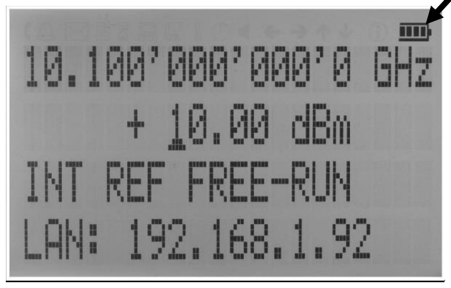
Hints for maximizing the battery running time:
- Fully charge the unit before you use it. Toggle the power switch to ON and then OFF again while the instrument is powered by the external power adaptor. This will initiate a new charge cycle.
- Charging time of a completely discharged battery can be up to 4 hours. IMPORTANT. The battery will only be charged when the instrument power switch is in the OFF position.
- Batteries should always be charged in environments with the recommended ambient temperature, at very low or at elevated temperatures the charging is restricted by the battery's power management.
- Check the battery indicator in the upper right corner of the display. It should indicate full charge when running on battery power after charging (Figure 9-a).
- Power consumption of the instrument is reduced when the RF power is switched OFF (with the current selected parameter set).
- Battery run time is maximal for ambient temperature between 15 and 25°C. Self-discharge of the battery is much faster at temperatures above 30°C.
- Avoid storing the instrument in very hot places such as behind the windshield of a car parked in the sun.
Hints for maximizing battery life expectancy:
- The battery will reach its best performance after the first few charge-discharge cycles.
- Always use the external power adaptor supplied with the instrument for normal operation and charging. This will make sure that the charging counts as one specified.
- Fully charge the instrument after running it from the battery for an extended period of time.
- If an instrument with internal battery will be stored for a long period of time, fully charge it before storage, then remove the power adaptor and make sure that the power switch is in the OFF position. After storage, first charge the unit for 4-6 hours.
To replace the battery at the end of its lifetime, please contact BNC or one of its distributors.
13. Extended Power Range (PE3 Options)
Some instrument models are available with option PE3 that extends the power range towards lower power levels.
With these options PE3 installed, a mechanical step attenuator module is added. For the guaranteed minimum power level, please consult the respective datasheet.
In sweeps where the mechanical attenuator is switched, the minimum dwell time increases to 20 ms.
14. Maintenance and Warranty Information
14.1 Adjustments and Calibration
To maintain optimum measurement performance, the instrument should be calibrated every 24 months. It is recommended that the instruments be returned to BNC or to an authorized calibration facility. For more information please contact our Customer Service Department as indicated on www.berkeleynucleonics.com.
14.2 Repair
The signal generator contains no user-serviceable parts. Repair or calibration of the signal generator requires specialised test equipment and must be performed by BNC or its authorized repair specialists.
14.3 Warranty Information
All BNC instruments are warranted against defects in material and workmanship for a period of two years from the date of shipment. BNC will, at its option, repair or replace products that prove to be defective during the warranty period, provided they are returned to BNC and provided the preventative maintenance procedures are followed. Repairs necessitated by misuse of the product are not covered by this warranty. No other warranties are expressed or implied, including but not limited to implied warranties of merchantability and fitness for a particular purpose. BNC is not liable for consequential damages. The warranty on the internal rechargeable batteries (option B3) is one year from the date of shipment. Battery replacement is available through BNC and its distributors.
14.4 Equipment Returns
For instruments requiring service, either in or out of warranty, contact your local distributor or BNC Customer Service Department at the address given below for pricing and instructions before returning your instrument.
When you call, be sure to have the following information available:
- Model number.
- Serial number.
- Description of the failure.
Note: Model and serial number can be found on the rear of the unit or the power plug.
You will get a Return Merchandise Authorization (RMA) number from BNC, please put it on the outside of the package. Instruments that are eligible for in-warranty repair will be returned prepaid to the customer. For all other situations the customer is responsible for all shipping charges. An evaluation fee may be charged for processing units that are found to have no functional or performance defects.
For out of warranty instruments, BNC will provide an estimate for the cost of repair. Customer approval of the charges will be required before repairs can be made. For units deemed to be beyond repair, or in situations where the customer declines to authorize repair, an evaluation charge may be assessed by BNC.
15. Contact
Berkeley Nucleonics Corporation. 2955 Kerner Blvd., San Rafael, CA 94901.
Phone (415) 453-9955. Email info@berkeleynucleonics.com. Web www.berkeleynucleonics.com.
Model 845-OEM Signal Generator User Manual · Document Version 3.06 · Print Code: 32025040. Programmers reference: Programmers Manual (Signal Generators), document page count 125. The 845-OEM shares the 800-series operating and SCPI manual; specifications are authoritative on the Model 845-OEM datasheet.